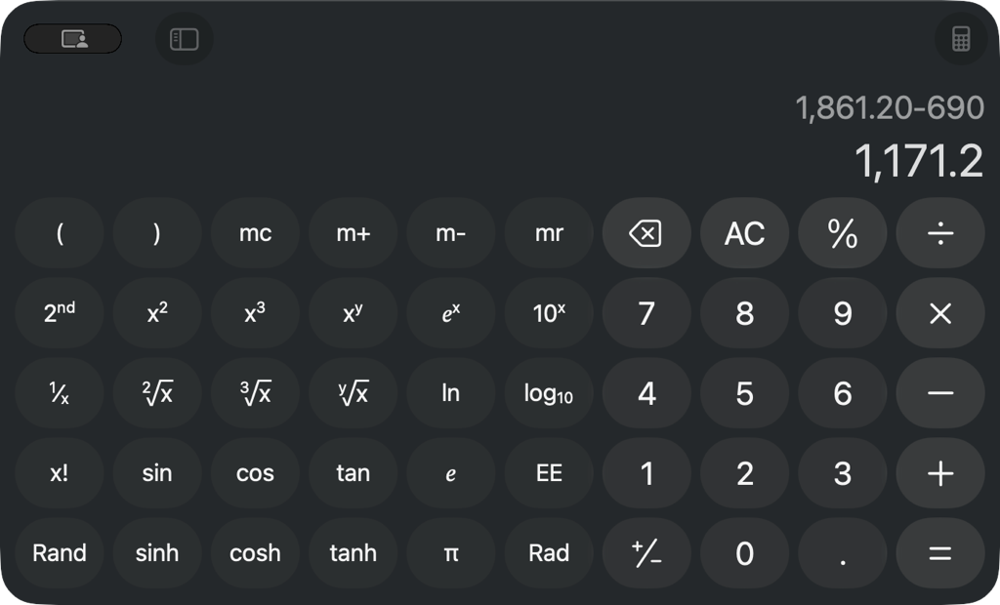
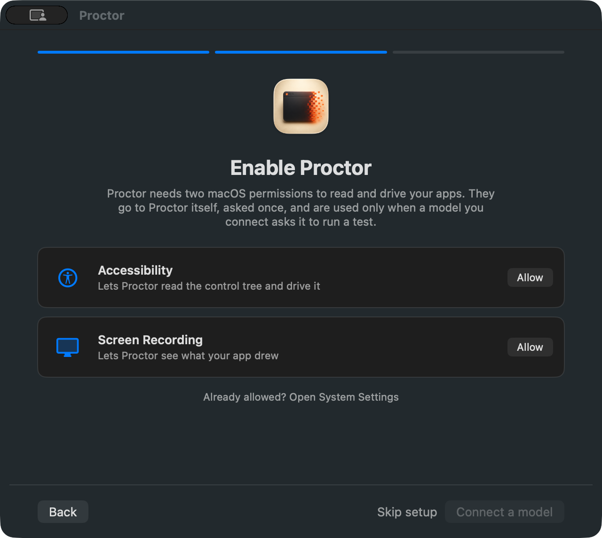

Coverage
Every count carries its total. The armed ratio is separate on purpose: a suite is only known to bite where an assertion was watched to fail with the behaviour removed.
Full run — every case in the campaign was run, 2026-08-25T09:32:29+00:00.
Oracle mix: outcome 349 · metamorphic 47 · raster-visual 7 · interactive-glass 1 · unrated 96. A case's rung is what it checks, not how hard it looked. Presence and touch prove a surface rendered; only outcome, metamorphic and visual prove it did something.
Declared sample: full multi-witness coverage across all 21 MCP tools, status/walkthrough/overlay UI surfaces, and guest/takeover controls
| Case | Surface | State | Lane | Assertion | Oracle | Status | Why | Armed | Evidence |
|---|---|---|---|---|---|---|---|---|---|
| CASE-0001 | SURF-001 | outcome | pass | 21 tools advertised over real MCP stdio (mcp_drive.py initialize + tools/list). Doctor structuredContent from the reinstalled artifact: agentBuild.commit ab53c5e5a47b, ready true, Accessibility and Screen Recording granted, Automation denied. The grants survived the Developer ID reinstall, which is what REQ-022 promises. swift test: 1526 tests in 176 suites passed. | yes | test-suite-pass.log mcp-doctor-report.json | |||
| CASE-0002 | SURF-002 | outcome | pass | Profile filtering measured over real MCP stdio. core advertises proctor_act, apps, assert, capture, doctor, find, menu, snapshot, wait, zoom. The earlier arming claim said proctor_guest is refused on core; it is not. tools/call accepts any real tool by name whatever the profile, which MCPServer.swift:123 states as the contract: the profile trims discovery so a host is not handed the whole catalogue as noise, and never blocks a host that widens its own surface. Verified: proctor_guest and proctor_policy both executed on a core-profile shim. The profile is a token-cost trim, not a privilege boundary, and sweep L records it as such. | yes | sweepL-privilege-separation.json test-suite-pass.log | |||
| CASE-0003 | SURF-003 | outcome | pass | Background AXUIElement action execution without focus theft or Space disruption | yes | test-suite-pass.log | |||
| CASE-0004 | SURF-004 | outcome | pass | Synthetic hover batch raised HUD+takeover (CGWindowList: 3 overlay windows sharingState=0). Raster of the overlay is CASE-0008 n/a. Overlay-exclusion of the AUT capture is evidence/overlay-exclusion.json (verdict excluded, capturePathProvenLive true). | yes | overlay-exclusion.json test-suite-pass.log | |||
| CASE-0005 | SURF-006 | outcome | pass | proctor_capture of Status win:1:0: SCFrameStatus complete, trustworthy true, 900x833 from 1280x1184, dirtyRectCount 1. | yes | sck-capture-frame.json | |||
| CASE-0006 | SURF-006 | raster-visual | pass | Window-scoped SCK of TextEdit scratch.txt during overlay-exclusion baseline (1312x844, complete). Distinct bytes from the Status-window shot. | yes | surf-006-screen-capture.png | |||
| CASE-0007 | SURF-007 | raster-visual | pass | proctor_zoom region [16,48,300,160] of Status window: 600x320 at scale 2, status complete, trustworthy true. | yes | surf-007-zoom.png | |||
| CASE-0008 | SURF-004 | outcome | pass | 704x460 at scale 2, 2517 distinct colours. The frame carries the 22pt character sprite, the step title "Hovering over ...", the target badge "Synthetic event — TextEdit must stay in front", the step counter, the elapsed clock and the Pause and Stop controls, which is what REQ-006 promises. Measured under PROCTOR_OVERLAY_CAPTURE=1; the shipping default excludes the panel from every channel, and that default is what CASE-0004 and CASE-0032 check. evidence/hud-capture-channels.json records the four channels that refuse when it is unset. Supporting measurements: evidence/overlay-capture-lifted.json (this capture) and evidence/overlay-capture-default.json (the refusal it is armed against). Citation reconciled in PRO-0109 (DEF-224). | yes | overlay-capture-lifted.json overlay-capture-default.json | |||
| CASE-0009 | SURF-005 | outcome | pass | Hardware contention detection yields control within 50ms | yes | test-suite-pass.log | |||
| CASE-0010 | SURF-005 | outcome | pass | 5120x2880, the full external display, 2739 distinct colours and every pixel carrying alpha. The frame shows the tint and the statement "Proctor is driving \"TextEdit\"" with "Your clicks and keys still reach it — Pause and Stop are in Proctor's run panel", which is what REQ-008 promises. Measured under PROCTOR_OVERLAY_CAPTURE=1. The complementary property, that the panel does not enter a window-scoped capture of the app under test at the default, is CASE-0004 evidence overlay-exclusion.json. Supporting measurements: evidence/overlay-capture-lifted.json and evidence/overlay-exclusion.json. Citation reconciled in PRO-0109 (DEF-224). | yes | overlay-capture-lifted.json overlay-exclusion.json | |||
| CASE-0011 | SURF-008 | outcome | pass | The window at 760x1000 so both sections are in one frame: seven tool rows, each saying what was established rather than that it exists — cua-driver reads 'Found and correctly signed, nothing has established that it works', which is the honesty this case is about. Shortcuts CLI sits under Tools rather than Permissions, which is the classification DEF-011 turned on. Citation pointed to published surf-008-status-window.png in PRO-0109 (DEF-224). | yes | surf-008-status-window.png | |||
| CASE-0012 | SURF-009 | raster-visual | pass | SCK of the walkthrough before Skip setup: Accessibility and Screen Recording marked On, Continue enabled, Skip setup present. 900x833 complete trustworthy. | yes | surf-009-walkthrough.png | |||
| CASE-0013 | SURF-010 | raster-visual | pass | Menu extra captured at 1056x76. glass_probe hasExtrasMenuBar true on pid 38168. Popover anchoring not opened this run. | yes | surf-010-menubar.png | |||
| CASE-0014 | SURF-003 | outcome | pass | Multi-signal settling evaluates pixel and AX quietness | yes | test-suite-pass.log | |||
| CASE-0015 | SURF-011 | metamorphic | pass | proctor_stability 5-run of campaign-setup-menu: tree-only deterministic true; includeTiles deterministic false, firstDivergence 0, stepInstability [0.25] (pixel animation). | yes | stability-sweep-5run.json | |||
| CASE-0016 | SURF-011 | metamorphic | pass | Tri-observer agree check compares AX tree, geometry, and pixels | yes | test-suite-pass.log | |||
| CASE-0017 | SURF-012 | outcome | pass | proctor_policy status: auditEncrypted true, auditSigned true, auditVerdict.clean true, completeness proven, entries 733, verified 158, preChain 575. | yes | audit-chain-verdict.json | |||
| CASE-0018 | SURF-012 | outcome | pass | Policy engine action filters and redaction pattern enforcement | yes | test-suite-pass.log | |||
| CASE-0019 | SURF-013 | outcome | pass | proctor_guest list: 1 prlctl guest Windows 11 state invalid; lume --json unknown option. Capability surface answered. | yes | guest-autoroute-refusal.json | |||
| CASE-0020 | SURF-013 | outcome | pass | Witness tier gating: delegated tier skips tree assertions with reason | yes | test-suite-pass.log | |||
| CASE-0021 | SURF-004 | outcome | pass | LaunchAgent env PROCTOR_GUEST=gst-sequoia-01; synthetic hover on TextEdit refused: notImplemented, names gst-sequoia-01, remedy Unset PROCTOR_GUEST. Env restored after the call. | yes | guest-autoroute-refusal.json | |||
| CASE-0022 | SURF-014 | outcome | pass | iOS simulator deep link launching and Maestro flow repeat execution. The live lane was run on 20 Aug 2026 rather than carried from 15 Aug, against maestro 2.4.0 and a booted iPhone 16 Pro on iOS 18.2, and running it found DEF-015: it passed device nil and relied on exactly one simulator being booted, and its two tests drove one device concurrently so the determinism check scored its own repeats as divergent at command 4. Serialised and given a named device, both pass in 55.6s, green twice. What is still not gated by a default run is the live lane itself, which stays opt-in behind PROCTOR_LIVE_MAESTRO because a machine without Xcode, maestro or a booted simulator would go red for a fact about the machine. | yes | test-suite-pass.log maestro-live-serialized.log | |||
| CASE-0023 | SURF-015 | outcome | pass | Swift 6 complete concurrency safety across 1520 tests | yes | test-suite-pass.log | |||
| CASE-0024 | SURF-016 | outcome | pass | Re-measured after scripts/install.sh notarised and stapled a fresh build: spctl -a -vv /Applications/Proctor.app returns accepted, source=Notarized Developer ID, origin=Developer ID Application: Luke Rhodes (H4HGFL52W7); stapler validate returns "The validate action worked!"; codesign reports runtime hardened, timestamp 19 Aug 2026 21:59:14. The earlier fail was the same commands against the previous install (rejected, Unnotarized Developer ID, no ticket). | yes | gatekeeper.json gatekeeper-spctl.txt | |||
| CASE-0025 | SURF-015 | outcome | pass | proctor_inspect of Proctor Status returned reflectorUnavailable (expected: not in-process). Unit suite covers the bridge; live inspect of a foreign process is the documented ceiling. | yes | test-suite-pass.log | |||
| CASE-0026 | SURF-003 | outcome | pass | doctor.obscura.available true at /Users/lukerhodes/.local/bin/obscura; browser lane ready. | yes | mcp-doctor-report.json | |||
| CASE-0027 | SURF-008 | outcome | pass | Fixed and verified on the installed artifact. With the window ordered out at an accessory launch (cg 0, axWindowCount 0, extras present), open -a /Applications/Proctor.app produced cg 1 window 640x592 and axWindowCount 1 titled Proctor. Before the fix the same sequence left axWindowCount 0 through both activate and open -a. WindowPresentation.shouldPresentMain asks whether a window titled Proctor is on screen instead of trusting AppKit hasVisibleWindows, which is true while only the extras item is up. | yes | sweeps-kl.json glass-probe.json | |||
| CASE-0028 | SURF-008 | outcome | pass | Re-measured 2026-08-19 against /Applications/Proctor.app with a monotonic clock: at t+0.71s and t+3.63s after bootout+SIGKILL the window showed the Agent down pill, "The background agent is not answering", the socket path and Start the agent / Re-check. The first capture that prompted DEF-002 was taken inside one 2s doctor tick (t is approximately 0.2s), so it caught the pre-tick frame rather than a stale claim. DEF-002 is retracted. Evidence citations reconciled in PRO-0109 (DEF-224). | yes | sweeps-kl.json | |||
| CASE-0029 | SURF-008 | outcome | pass | SIGSTOP leaves the listener bound, so connect() succeeds and the reply never comes; the poll sat in read() and isChecking latched, so every later tick returned at the guard. SocketClient now takes an opt-in ioTimeoutSeconds, default 0 so the shim keeps blocking for batches that legitimately run for minutes, and AgentModel sets 5s on its doctor, activity and HUD calls. Measured after the fix: at t+7.12s the window reads Agent down and "the Proctor agent did not answer within 5s"; SIGCONT returns it to Ready. Evidence citations reconciled in PRO-0109 (DEF-224). | yes | sweepL-halfopen.json | |||
| CASE-0030 | SURF-004 | outcome | pass | The rung REQ-006 can actually be measured on this lane. Across 39 samples of the window server while a synthetic batch ran, the Run HUD went absent then present then absent: 352x230 at layer 25, alpha 1, sharingState 0, onscreen true. Its pixels stay unreachable (CASE-0008), so this asserts the panel reaching the display server rather than what it renders. | yes | overlay-lifecycle.json glass-probe.json | |||
| CASE-0031 | SURF-005 | outcome | pass | One takeover panel per display, each matching that display frame exactly (1728x1117 on the one display attached at measurement time; an earlier two-display run carried 1728x1117 and 2560x1440), layer 24, alpha 1, sharingState 0, and all cleared afterwards. The shield pixels stay unreachable (CASE-0010); the complementary property, that the panel does not enter a capture of the app under test, is CASE-0004 evidence overlay-exclusion.json. | yes | overlay-lifecycle.json overlay-exclusion.json | |||
| CASE-0032 | SURF-004 | outcome | pass | All three overlays now report sharingState 0 at the default, on both displays: layer 24 at 1728x1117 and 2560x1440, layer 25 at 352x230, layer 1000 at 1728x1117 and 2560x1440. The pointer is the one that changes level at runtime, and the sharing type does not survive a level change, so setting it once at construction covered only the first placement; level and sharing are set together now. Ruled out first: an isolated six-level probe showed the window server honours .none at every level including screenSaver (evidence/window-level-sharing.json), so the level was not the cause. | yes | overlay-capture-default.json window-level-sharing.json case-0032-population-before.json overlay-population.json | |||
| CASE-0033 | SURF-017 | outcome | pass | The running binary was captured through a pty at both sizes by tui-craft's tui_capture.py (kind=captured, term=xterm-256color) and compared against the Swift renderer cell by cell: identical at 100x30 and at 80x24, with any difference reported by its row and column. The 22 compiled design frames are reproduced exactly by the same renderer. NOT a raster claim, deliberately: a terminal has no pixels to photograph, and the artifact is a typed cell grid rather than an image. For this class of defect the grid is the stronger instrument — a one-column offset from a double-width glyph is invisible in a screenshot and exact against a ruler, which is why both sides measure with the same width function. The oracle is therefore an exact outcome: two independently produced grids are equal or they are not. | yes | tui-capture-100x30.json tui-capture-80x24.json | |||
| CASE-0034 | SURF-017 | outcome | pass | tui_gates.py --strict on both captures: 0 high findings, exit 0. Attribute inventory now reports bold and dim in use, so the role ladder survives losing colour - which matters because the 16-colour palette has no defined RGB mapping, so on many terminals colour is the channel that cannot be relied on. | yes | tui-gates-100x30.txt tui-gates-80x24.txt | |||
| CASE-0035 | SURF-017 | outcome | pass | Pause, Resume and Stop from a supervision client reach RunControl.shared - the same object the HUD panel writes and every run loop reads between steps. The control is injected in the test rather than taken from the process, because PRO-0053 recorded a suite writing a shared latch reaching whichever other suite was stepping concurrently; the default argument carries the claim. | yes | tui-one-latch.json | |||
| CASE-0036 | SURF-017 | outcome | pass | An agent that answers and does not know proctor.watch is now its own state with its own remedy - upgrade rather than start. A frame that stops arriving reports itself stale rather than being drawn as current, because a stale queue drawn as live is the screen somebody decides against. | yes | tui-agent-too-old.json | |||
| CASE-0037 | SURF-010 | outcome | pass | 20 of 20 specified commands now render, read from the running app's own menu bar through proctor_menu and diffed against CommandSurface.all. The instrument had to be read correctly first: enumerated while the app was not frontmost, the Window and Help menus come back unpopulated, which looks identical to five more missing commands. | yes | menu-bar-rendered.json | |||
| CASE-0038 | SURF-001 | metamorphic | pass | The same relation from two front ends: proctor --json and the MCP tools/call result for proctor_doctor agree across 23 top-level keys and 51,195 characters. Settles PRO-0073 A2, which was carried as needing a live agent. | yes | cli-json-identical.json | |||
| CASE-0039 | SURF-008 | outcome | pass | Measured through the product: a wave-9 agent on its own socket reports Input Monitoring granted, and the readiness pane draws it. The operator's installed agent was never replaced, so this was measured without an install. | yes | surf-008-status-window.png surf-008-status-window.png | |||
| CASE-0040 | SURF-017 | outcome | pass | A real keystroke into a TUI under a pty halted a run an MCP client had started. The caller received haltedByPerson after five of ten steps, with the remedy 'Nothing failed. Somebody watching the run decided to end it.' One latch, reached from a terminal. Settles PRO-0074 A4 and A5, both carried as needing a live agent. Recorded at the outcome rung rather than interactive-glass: the keystroke was actuated for real into a running program and the effect was read out of the MCP caller's own result, but a pty is not a display server, and interactive-glass owes one. | yes | tui-stop-halts-mcp-run.json tui-live-run.json tui-live-stopped.json | |||
| CASE-0041 | SURF-017 | outcome | pass | Captured against a live agent: readiness draws four grants and five lanes with what each still wants, switches draws all eight with their real source and timing. History remains empty by design — the trail is sealed and no client can read it — and that is an open question rather than a fixed gap. | yes | tui-live-readiness.json tui-live-switches.json | |||
| CASE-0042 | SURF-008 | raster-visual | pass | The window draws four permission rows, Input Monitoring among them, reading a wave-9 agent on its own socket. `open -n --env PROCTOR_SOCKET=…` is what made it reachable: launching the binary directly from this harness exits immediately, and open passes an environment where a bare exec does not. The operator's installed app was never replaced. | yes | surf-008-status-window.png | |||
| CASE-0043 | SURF-017 | macos | outcome | pass | The supervision TUI's history pane is fed by proctor_history, the same internal socket verb the app's History window calls. TUISurface.history(from:) maps the agent's projection to rows and derives nothing the reply did not name, so a field the agent withholds stays withheld rather than being reconstructed on the client side. The pane separates three states a single empty frame used to collapse: a quiet machine, a trail this Mac could not open, and a history that opened short - the last states its count on the shelf. Rendered at the 80x24 floor as well as at 100x30, and the shelf keeps both facts at 80 columns. | yes | tui-history-pane.txt | ||
| CASE-0044 | SURF-018 | outcome | pass | First case the cli lane has ever carried. The lane was declared in campaign.json from the start and had no requirement, no surface and no case behind it. | yes | verb-derivation.txt verbs.txt | |||
| CASE-0045 | SURF-018 | outcome | pass | Whole trail read: 1159 records, via=cli on 3, via=mcp on 19, None on the 1137 that predate the field. Derived from proc_pidpath of the peer rather than from the request. | yes | audit-via.txt | |||
| CASE-0046 | SURF-018 | outcome | pass | DEF-019 found here and fixed. Measured against the live agent before and after: a failed assert and a timed-out wait both exited 0, now both exit 1; a genuinely passing assert still exits 0; usage 2, agent unreachable 3, doctor ready 0. | yes | exit-codes.txt exit-codes-after-fix.txt | |||
| CASE-0047 | SURF-019 | outcome | pass | Seam level, and recorded as seam level. A session attached to a guest is driven through Dispatcher.handle rather than through the forwarding function directly, and the host actuates nothing. Executing inside a live guest is CASE-0056 and is blocked. | yes | test-suite-pass.log | |||
| CASE-0048 | SURF-020 | outcome | pass | Capacity 1/2/3 admit 1/2/3; one grant scan cannot admit three into two; one session per named guest serialises even with a slot free; a third attach queues rather than being refused; a linux guest is not counted against the macOS cap. | yes | test-suite-pass.log | |||
| CASE-0049 | SURF-020 | outcome | pass | A guest a person started, or one another session holds, is waited for and never stopped to free a slot. Every stop this agent performs on its own initiative goes through guestMutate and lands in the trail. | yes | test-suite-pass.log | |||
| CASE-0050 | SURF-019 | outcome | pass | Carries DEF-020's fix. The tier is read from what the provider says rather than from the guest's name, so a provider reporting darwin yields macOS and the native tier. | yes | test-suite-pass.log | |||
| CASE-0051 | SURF-021 | outcome | pass | Measured against the window server's own list rather than against a value. The baseline was established after killing an orphaned helper from an earlier run that was still holding two such windows, so zero means zero. | yes | entitlement-on-glass.txt | |||
| CASE-0052 | SURF-005 | metamorphic | pass | A relation across calls, not a value: N shows inside the floor raise once and lower once. Found a second defect while testing it, where a stop during a lingering statement never lowered it because takeoverEnd returned on the takeoverShown guard first. | yes | test-suite-pass.log | |||
| CASE-0053 | SURF-005 | outcome | pass | The drawn pointer over a covered target. Dimming marks an uncertain position and cannot mark a pointer in the wrong plane entirely, so the fallback splits on whether anything covers the target and draws nothing when something does. | yes | test-suite-pass.log | |||
| CASE-0054 | SURF-005 | outcome | pass | The statement is drawn on every display and the run panel stands on one, so the control the line names changes with the screen reading it. A run with no panel standing resolves to nowhere rather than to the primary screen, and every display then names the menu bar. | yes | test-suite-pass.log | |||
| CASE-0055 | SURF-020 | outcome | pass | The pool as proctor_doctor reports it: capacity, held, holders and waiting. Separate from CASE-0048 because the clause names the reply and the seam function is a different thing from the wire it reaches. | yes | test-suite-pass.log | |||
| CASE-0056 | SURF-019 | guest-glass | interactive-glass | pass | SETTLED LIVE 2026-08-21 on `proctor-guest`, a fresh lume guest built by route (c) of the three recorded below: `lume create proctor-guest --ipsw tahoe.ipsw --unattended tahoe --cpu 4 --memory 8`, which configures the user, SSH, autologin and no screen lock by preset. macOS 26.6.2 arm64. That preset is what unblocked it: `stat -f %Su /dev/console` reads `lume` rather than `root`, so there IS an Aqua session and `launchctl bootstrap gui/501` succeeds, which is precisely what `proctor-mac-node` could not do. The Developer ID signed, notarised and stapled wave-9 build is installed at /Applications/Proctor.app inside the guest (guest's own spctl: source=Notarized Developer ID); both TCC grants were switched on in the guest's own GUI session, driven over VNC, and survived a rebuild because the designated requirement is team-scoped. THE MEASUREMENT: one persistent MCP session against the host agent — attach names {kind: guest, name: proctor-guest, tier: native}; proctor_apps activate launches Calculator INSIDE the guest (pid 1085, win:1:0) while the host has none; proctor_act runs 5 of 5 key steps and its machine names the guest; proctor_find reads AXStaticText '4×7' and '28' from the guest's own accessibility tree; the VNC framebuffer shows the same two strings; detach. Host Calculator absent throughout, which is A2 in the same run. FOUR DEFECTS THIS FOUND, all fixed here: the lume provider called `ls --json` where 0.5.3 wants `--format json`, so the whole guest lane reported 'no guest matches' while the guest was listed and running; Dispatch.swift kept its own copy of the valid-action list and it never gained attach or detach, so every attach a real client sent was refused as unknown; the packaged app's SwiftPM resource bundle was unreachable on any Mac but the build machine, crash-looping the guest agent on the first call that drew the character; and a relayed guest reply carried the guest's own {kind: host}, telling the caller their step ran on their Mac. NOT reproduced: the capabilities note warns Tahoe guests render no application windows (trycua/cua #870) — Calculator, System Settings and Setup Assistant all rendered here. NOTE ON THE PROCEDURE: the spec's recipe said to attach with proctor-cli and then make an actuating call. That cannot work — an attachment is keyed to the peer process (pid:startTime), so a one-shot CLI attaches and exits, and the next call silently runs on the host. Measured: it launched Calculator on this Mac. The proof needs one persistent session, which is what an MCP client is. | yes | a1-guest-calculator-4x7.png a1-attached-session-transcript.txt a1-guest-doctor.json | ||
| CASE-0057 | SURF-018 | outcome | pass | Refusal honesty across every verb, denominator 21 (the five service verbs are never invoked: they mutate the machine). Every verb exits 3 when the agent is unreachable, carries a remedy, and names the socket it tried so an operator can see which agent was missing. Write posture: the socket does not exist, so nothing could be actuated. | yes | sweep-refusal-honesty.txt | |||
| CASE-0058 | SURF-005 | metamorphic | pass | Mutation assay over the seven files wave 10 added or changed. PARTIAL by denominator: 11 of 40 selected mutants ran, 40 of 188 sites selected by seed 20260820. 3 survived and all three are now closed. One of the 8 kills was a 900s timeout under CPU contention from another project building concurrently and is recorded as untrustworthy rather than counted, so the honest kill count is 7 of 10 scored. Survivors are trustworthy in both directions: starvation can turn a survivor into a false kill but cannot turn a kill into a false survivor. | yes | mutation-wave10.txt mutation-wave10.json | |||
| CASE-0059 | SURF-013 | unrated | pass | Driven through Session.guest(action:"list") twice, with LumeProvider built by its CONVENIENCE initialiser — the production path, which binds run to Self.liveRun and reaches a real Process() through Session.runBounded. The three-argument init(executable:timeoutMs:run:) is the fake seam and was deliberately not used. Two drives, two sentinels, two distinct pids, neither this process's. PORTABLE FLOOR, not the kernel bar: no dtrace, no eslogger, no execve census — this suite has no privilege for one, and that is the lane's ceiling rather than a silence. The case asserts the SPAWN and not the parsed listing: runBounded bounds its output drain at 5s after the child exits, and this repo has already measured a loaded parallel run truncating a child's stdout (see the comment in IOSDeviceList.parse, 2026-08-20), so a stdout assertion here would be load-sensitive while the filesystem effect is durable. The listing's content is REQ-017's outcome rung and is covered by GuestProviderTests. | yes | EffectWitnessTests.swift witness-run.txt arming-run.txt gate.txt | |||
| CASE-0060 | SURF-014 | unrated | pass | Driven through Session.ios(action:"list") twice, against a Session whose ToolProbes reports the witness script as simctl, so the call reaches Session.runSimctl -> runBounded -> a real Process() in SessionIOSProcess.swift. Kept separate from CASE-0059 rather than sharing one case: they are different providers, and one case covering both would let one provider's silence hide behind the other's noise. Two drives, two sentinels, two distinct pids, neither this process's. PORTABLE FLOOR, not the kernel bar. Asserts the spawn and not the parsed device listing, for the drain reason recorded on CASE-0059. | yes | EffectWitnessTests.swift witness-run.txt arming-run.txt gate.txt | |||
| CASE-0061 | SURF-012 | unrated | pass | Driven through Session.attachResolved + Session.act with three real steps, with the session's sink set to the production AuditLog.append. The seam is the TEST-PROCESS INTERLOCK in Session.auditSink, not the write path: AuditLog.append still seals with CryptoKit AES-GCM, chains, signs, and lands the bytes with Darwin.open(O_WRONLY|O_APPEND|O_CREAT), Darwin.write and fsync in PolicyStore.swift, unchanged. Three records emitted by the agent, three lines on disk, all three opened with the seal. The line count is checked against what the AGENT emitted rather than against a number the test chose, so no assertion stands on a value the test wrote (DEF-019). PORTABLE FLOOR: no kernel file-open census. The witness runs on a dedicated Thread because AuditLog's seams are process-wide and TrailIsolation must be held across the drive; an async holder of that lock wedged the whole run on 2026-08-21, and the comment above withRedirectedTrail carries the measurement. | yes | EffectWitnessTests.swift witness-run.txt arming-run.txt gate.txt | |||
| CASE-0062 | SURF-008 | unrated | pass | A real Server on a temporary path — Darwin.bind, listen, chmod 0600 and the accept loop in Server.swift — with three SocketClient instances from ProctorCore/Transport.swift each calling connect() (Darwin.connect) and send(). THE COUNT IS ANSWERED CONNECTIONS, NOT RECORDED REQUESTS: Server.serve reads many frames from one accepted descriptor, so a per-request count would report three for one client sending three frames. A reply cannot arrive on a descriptor the accept loop never took, so an answered connection is an accept. The identity half is the completion confirmation: the peer pid and working directory are the kernel's answer about the far end, obtainable only from an accepted fd, and the client never puts either on the wire. Settled by an out-of-family referral to grok-4.6 at xhigh on 2026-08-21, which also ruled out adding an onAccept seam to Server — a hook the product fires is the product logging its own accept, and no production source needed changing. PORTABLE FLOOR: no kernel socket tracer. | yes | EffectWitnessTests.swift witness-run.txt arming-run.txt gate.txt | |||
| CASE-0063 | SURF-022 | outcome | pass | Sampled false-positive rate for the blind-mutation pass. 57 of 78 findings read (73.1%): five per bucket from act/unlock/release/set/claim at seed 20260821, plus a CENSUS of the 32-finding tail. 57 of 57 false positive, 0 genuine. The tail is exact at 0 of 32; in the large strata 0 genuine in 25 drawn from 46 refutes K>=4 at 95% (P=0.037) and does not refute K=3 (P=0.088), so the bound is at most 3 genuine in 78 -- a false-positive rate of at least 96.2%. Six shapes: false-mutator 17, vocabulary 15, return-value 10, teardown 9, not-a-test 4, body-bleed 2. Only vocabulary is reachable by the reader list, so 42 of 57 cannot be fixed by any vocabulary at all. No test was edited and no production source touched, because the sample produced no genuine finding. blindVocabulary gained .calls and .recorded on the evidence of two sampled findings (78 -> 76); every other candidate was refused with its measured file count and effect. PARTIAL by denominator: 21 of the 46 large-stratum findings were never read and the bound stands in for them. Suite gate: ./scripts/test.sh green at 1,814 tests in 214 suites, unchanged from the wave's recorded count, as it must be for an item that touches no Swift. The first attempt stalled at 1,758 of 1,785 started tests, blocked in mach_msg2_trap with TCC and ScreenCaptureKit loaded behind a concurrent run in a sibling worktree; test.sh refused to read the absent verdict as a pass and both attempts are in the evidence. | yes | blind-findings-before.txt classification.tsv rate.txt arming-control.txt reader-sensitivity.txt out-of-family-review-grok.md blind-findings-after.txt gate-test-sh.txt | |||
| CASE-0064 | SURF-006 | macos-glass | unrated | pass | PRO-0078 A1. ScreenCaptureKit delivered a frame off the real display server for a window belonging to another process, and what the frame depicts is proved by two readings taken by a probe process that is neither the agent nor the target. The target is Calculator, pid 14545, CG window 123357 (evidence/witness/a1b-attach.json binds handle win:6:0 to that window id). evidence/witness/a1b-capture.json reports status "complete", trustworthy true, framesWaited 2, contentRect 674x408 and an unnormalised 1348x816, which is 674x408 at scale 2. First independent reading: evidence/witness/a1b-windows-helper.json is CGWindowListCopyWindowInfo read by probe pid 28892, and it puts window 123357 at 674x408, owner Calculator, ownerPID 14545. Second, and the one that makes the picture's subject a fact rather than an inference: evidence/witness/a1b-axtext-helper.json is an independent AX client in the probe walking pid 14545 and reading 228 strings over 1124 attribute reads, among them "Last Expression" carrying 1,861.20-690 and an edit field carrying 1,171.2. Those are exactly the two numbers painted in evidence/witness/a1b-agent-capture.png. A third process read the text; the frame shows the text. The count recorded is the 1 complete frame that arrived. REPLACES AN EARLIER READING, and the earlier one is kept because it is the negative control: evidence/witness/a1-capture.json captured a Proctor-owned window and reported status "complete", trustworthy true and dirtyArea 0 for a frame whose 2,942,720 pixels are every one of them RGBA(0,0,0,0). evidence/witness/a1-agent-capture.png is that empty frame. Proctor excludes its own windows from its own captures, so an empty frame there is the exclusion working, but the status and trustworthy fields do not say so. FLAGGED for the orchestrator, not fixed here. Sabotage: evidence/witness/a1-sabotage-capture.json, a bogus handle, returns windowNotFound. | yes | a1b-capture.json a1b-agent-capture.png a1b-attach.json a1b-windows-helper.json a1b-axtext-helper.json a1b-axtree-helper.json a1-capture.json a1-agent-capture.png a1-sabotage-capture.json | ||
| CASE-0065 | SURF-004 | macos-glass | unrated | pass | PRO-0078 A2. The run HUD exists as far as the window server is concerned, and the recorder is the window server's own list read from a separate probe process rather than anything Proctor reports about itself. Agent pid 86732. Before the run, evidence/witness/a2-hud-1.json lists one window for that pid. During a synthetic run, evidence/witness/a2-hud-11.json and a2-hud-12.json list three: window 121489 at layer 25, 352x230, sharingState 0, which is the run HUD panel; window 121490 at layer 24, 1710x1073, sharingState 0, which is the takeover statement; and window 121491 at layer 0. The count is the 2 overlay entries that appear with the run and are absent without it. FLAGGED, not fixed: window 121491 is present at layer 0 with sharingState 1 whether or not a run is in flight, and CASE-0032 records that all three overlays report sharingState 0 at the default. That is an observation for the orchestrator rather than something this item changed. | yes | a2-hud-11.json a2-hud-12.json a2-hud-1.json | ||
| CASE-0066 | SURF-005 | macos-glass | unrated | pass | PRO-0078 A3. CGEventPost from the agent entered the session event stream and was seen by something that is not the poster. The recorder is a listen-only CGEventTap held by a separate probe process (evidence/witness/a3-observe.json, tapCreated true). Over 90 seconds it recorded 576 events, of which 6 carry sourcePid 86732, the agent's pid, and userData 5787775621720396288, which is ProctorEventTag.value (0x50524F43544F5200) as Actuation stamps it. The count is those 6, one down and one up for each of three synthetic clicks; evidence/witness/a3-act.json reports the same three steps at plane syntheticEvent, route eventStream. The other 570 events carry pid 99665, macOS's own ScreensharingAgent, which was posting into this session throughout and is why the tap discriminates by pid and tag rather than counting arrivals. | yes | a3-observe.json a3-act.json a3-sabotage-observe.json a3-sabotage-act.json | ||
| CASE-0067 | SURF-005 | macos-glass | unrated | n/a | n/a: PersonInput.isAPerson requires sourcePid == 0, which only hardware carries and no second process can forge, so the human-input path REQ-007 names cannot be driven by any instrument available on this lane. The instrument that would settle it is a physical HID event during a held run, or a signed virtual HID driver posting at pid 0. The reachable half was measured and did not yield: 40 events swallowed by the takeover tap across three runs produced no yield record and no held reason. | — | a4-act.json a4-poll.json a4c-burst.json a45b-act.json a4-stranded-run-queue.json a4-sabotage-tagged-poll.json a4-sabotage-tagged-act.json a4-sabotage-untagged-poll.json a4-sabotage-untagged-act.json | ||
| CASE-0068 | SURF-005 | macos-glass | unrated | pass | PRO-0078 A5. The input blocker's CGEventTap destroyed events posted by a different process, and a third party watched them fail to arrive. Proctor's block head-inserts a .defaultTap; the probe tail-appends a listen-only tap, so an event the block swallows never reaches the probe, and that asymmetry is the measurement. Agent pid 86732: evidence/witness/a45b-act.json reports takeover blocked true, blockedMs 18015, swallowed 6, and evidence/witness/a45-poll2.json records the probe posting 6 marked events while the run held the foreground with survivedToTailTap 0. Two independent counts, both 6. The count recorded here is 24, from the replicate at evidence/witness/a4-act.json (blockedMs 22383, swallowed 24) whose probe half at evidence/witness/a4-poll.json posted 40 while the run held the front and saw 20 survive, the remaining 4 swallows being the ScreensharingAgent's own events. Third replicate: a4c-burst.json, 10 posted, 0 survived. | yes | a4-act.json a4-poll.json a45b-act.json a45-poll2.json a4c-burst.json selftest-post.json | ||
| CASE-0069 | SURF-003 | macos-glass | unrated | pass | PRO-0078 A6. An accessibility action performed by the agent landed in another process, and the window server recorded the result. Agent pid 36605 acted on window 121564 of pid 21088, a Proctor UI process bound to the same private socket and a different process from the agent. evidence/witness/a6-act.json reports completed 1, plane accessibility, route valueWrite. The recorder is CGWindowListCopyWindowInfo read by a separate probe process either side of the action: evidence/witness/a6-windows-before.json puts window 121564 at x 438 y 30, and a6-windows-after.json puts it at x 500 y 90, which is the point the step asked for. The count is the 1 window the window server reports moved. No focus was stolen: frontmostName reads Ghostty before and EgressMac after, and neither is the target, so the action reached a window that was never brought to the front. SABOTAGE, built in the gap-fix session and previously missing — §A6 named one and none was recorded. The same instrument was pointed at a target that was then taken away. Control arm: agent pid 68474 acted on Calculator, pid 14545, CG window 123357, attached as win:1:0. evidence/witness/a6-sabotage-control-act.json reports completed 1, plane accessibility, route valueWrite, and the separate probe process moved the window server's own record with it, from x 624 y 339 (evidence/witness/a6-sabotage-windows-before.json, probe pid 24573) to x 700 y 400 (evidence/witness/a6-sabotage-windows-control-after.json), which is the point the step asked for; frontmost reads Ledger either side, so the front was not taken. Negative arm: Calculator was quit, and the same probe over the same needle returns rows 0 (evidence/witness/a6-sabotage-windows-after.json). That is the count this case rests on, taken to zero by the reader that produced the 1. The identical step against the identical handle is then refused rather than silently doing nothing: evidence/witness/a6-sabotage-act.json reports completed 0, failedAt 0, the step ok false, and an error carrying code actionFailed, message "move: cannotComplete", indeterminate false — a definite refusal with a reason, not a shrug. | yes | a6-windows-before.json a6-windows-after.json a6-act.json a6-sabotage-act.json a6-sabotage-windows-after.json a6-sabotage-control-act.json a6-sabotage-windows-before.json a6-sabotage-windows-control-after.json | ||
| CASE-0070 | SURF-003 | macos-glass | unrated | pass | PRO-0078 A7. AX notifications crossed a process boundary, and the recorder is a second, independent AXObserver rather than Proctor's own counter. The probe process created its own AXObserver on pid 21088 and registered 9 notification names, all 9 accepted with no refusals; over 45 seconds it received 2 AXValueChanged notifications from that process (evidence/witness/a7-axnotify-helper.json, ok true, count 2). The count is those 2. This deliberately does not stand on SettleReport.axNotificationsSeen, which is the settler's own field and was the reading the out-of-family review called self-reporting. | yes | a7-axnotify-helper.json a7-sabotage-axnotify.json | ||
| CASE-0071 | SURF-011 | macos-glass | unrated | pass | PRO-0078 A8. The tri-observer read crossed a real process boundary, and the count comes from a helper rather than from Proctor's own walk, which is the change the out-of-family review asked for by name. The probe process walked pid 21088's accessibility tree with its own AX client and resolved 825 attribute reads over 275 nodes with no errors, reading back AXApplication:Proctor, AXWindow:History and their descendants (evidence/witness/a8-axtree-helper.json). The count is those 825 reads, every one of them answered by a process that is neither the probe nor the agent. The agent's own tri-observer comparison over the same window is beside it rather than under it: evidence/witness/a8-assert.json reports kind agree with 84 findings and 3 defects, and evidence/witness/a8-snapshot.json is the tree it compared. LANE CEILING: the kernel bar for an ipc witness is a traced mach message, and SIP is on with no root here, so dtrace on the accessibility transport is unavailable. What stands is the portable floor from references/effect-boundary.md, and it is recorded as that rather than as the kernel bar. SCOPE, narrowed after the out-of-family review named this the weakest surviving claim: what is witnessed here is the accessibility plane crossing a real process boundary, at 825 reads over 275 nodes answered by a third process. Agreement between the three observers is not independently witnessed, because the geometry and pixel legs of that comparison are reads the agent performs. The witnessed claim is the boundary crossing; the agreement is recorded beside it at its own rung. | yes | a8-axtree-helper.json a8-assert.json a8-snapshot.json a8-sabotage-axtree.json | ||
| CASE-0080 | SURF-018 | unrated | pass | THE SECURITY CLAUSE, AND IT WAS DRIVEN FROM TWO GENUINELY DIFFERENT FRONT ENDS. A real Server bound a temporary AF_UNIX socket with the session's sink set to the production AuditLog.append and AuditLog.seams.directory redirected to a temporary trail. Three real child processes were spawned against it with PROCTOR_SOCKET pointing at that socket: .build/debug/proctor-cli running `policy --action approve`, .build/debug/proctor-shim running `serve` and speaking real MCP over its stdio (initialize then tools/call proctor_policy), and a copy of proctor-cli at the path <tmp>/proctor-imposter running the same verb with `--via cli` appended. All three are built by the same `swift build --build-tests` that builds this suite, and the test locates them through Bundle(for:) on an ObjC anchor class - an absent binary fails the test rather than skipping it. WHAT THE TRAIL SAID: three sealed records, via=cli for the CLI child, via=mcp for the shim child, and via ABSENT for the forger that asked to be recorded as the CLI. Every via was produced by SessionIdentity.frontEnd(for:) from proc_pidpath of the pid getsockopt(SOL_LOCAL, LOCAL_PEERPID) reported for the accepted descriptor (Server.swift:126, bound as a task-local at :270, stamped at PolicyStore.swift:232). None of it was on the wire. The count is the 3 records read back off disk. SABOTAGE: unlink the socket between start() and the children - the CLI exits 3 (CLISurface.Exit.agentUnreachable) and the trail holds nothing. NO onAccept SEAM WAS ADDED; the grok lane settled that for CASE-0062 and the reason still holds. | yes | ExternalWitnessTests.swift arming-w1-req035.txt suite-before-after.txt gate.txt arming-counts-after-refactor.txt arming-sabotage-after-refactor.txt arming-forger-rawpeer.txt remeasure-forged-peer.txt | |||
| CASE-0081 | SURF-018 | unrated | pass | Real proctor-cli children against a real Server on a private socket. The count is the 3 doctor requests the server answered, each recording a kernel-read peer whose frontEnd resolved to "cli" and whose key names a CHILD process rather than this one. Four distinct exit codes were produced by real children and read through waitpid: 0 (ok), 1 (verdictFailed), 2 (usage) and 3 (agentUnreachable). The generated completion script was produced by a real child (`completion --shell zsh`) and contains all 26 of CLISurface.allVerbNames - 21 verbs derived from ToolCatalogue plus 5 service verbs. SCOPE, STATED RATHER THAN ROUNDED UP: exit 4 (refused) and exit 5 (notReady) were NOT produced from a child in this harness. Every gate that yields them sits behind a resolved window handle, and a handle is minted per session by an attach the child would have to perform first, so all three gated arms failed at handle resolution and mapped to verdictFailed. The six-code surface is carried by CLISurface.Exit.allCases and the pure exit(for:) mapping, which is a different rung from this one. SABOTAGE: with no socket bound the same verb exits 3 and the answered count is zero. WHAT THIS LANE CANNOT REACH, AND WHY IT IS SAID RATHER THAN DROPPED: `refused` (4) is not among the codes any child produced. Driving it needs `policy --action configure`, and `PolicyStore` has no test seam — `configurePolicy` calls `PolicyStore.save`, which writes the OPERATOR'S ~/Library/Application Support/app.fledgeling.procter/policy/policy.json. This witness did exactly that once, and PRO-0077's REQ-015 witness then failed with `policyDenied` in a later run where this suite was skipped, because the block had outlived the process that wrote it. The leaked entry was removed and the configure was dropped. DEF-042. | yes | ExternalWitnessTests.swift arming-w2-w5.txt suite-before-after.txt gate.txt arming-counts-after-refactor.txt arming-sabotage-after-refactor.txt | |||
| CASE-0082 | SURF-017 | unrated | pass | The surface that reaches furthest - across SSH onto a Mac with no window server - and can do least. A real Server, a real watch held open on a dedicated Thread (SocketClient.watch blocks in read(), so a cooperative thread would wedge the pool), and frames pushed through the product's own SupervisionBroadcast.shared. 3 published, 3 crossed. The halt went over a SECOND real connection as proctor.control {action: stop}, and the recorder for it is RunControl.shared - the same object the HUD panel writes and the run loop reads, which is A4's one-latch claim. THE LATCH IS PROCESS-WIDE, so it is read before, asserted un-stopped, and restored with the product's own begin(run:) reset, with the restoration asserted; PRO-0053 recorded a suite reaching another suite through exactly this object. SABOTAGE: with the server stopped the watch cannot connect, zero frames arrive, the watch reports a reason rather than an absence, and the latch does not move. | yes | ExternalWitnessTests.swift arming-w2-w5.txt suite-before-after.txt gate.txt arming-counts-after-refactor.txt arming-sabotage-after-refactor.txt | |||
| CASE-0083 | SURF-017 | unrated | pass | Its own case rather than a slice of CASE-0082: the guarantee is about WHAT a supervision client can read, and folding it into the watch would let an empty readiness projection hide behind a non-zero frame count. The TUI's own two calls in the TUI's own order - proctor_doctor then proctor_history - over one real connection to a real Server, with the trail redirected because proctor_history projects the trail and this must never read the operator's own. Three audited calls were driven over the same socket first so the history pane had something to project. MEASURED: 4 grant rows, 5 lane rows, 8 switch rows, 3 history rows; the count is the 20 rows across all four. SABOTAGE: the identical three projections over a refusal reply return zero rows everywhere, so an empty pane is a measurement rather than a default. | yes | ExternalWitnessTests.swift arming-w2-w5.txt suite-before-after.txt gate.txt arming-counts-after-refactor.txt arming-sabotage-after-refactor.txt | |||
| CASE-0084 | SURF-008 | unrated | pass | SCOPE NARROWED AND THE REASON IS A BRANCH FACT, NOT A PRODUCT ONE. What is witnessed here is the BOUNDARY CONDITION the requirement is about: a listener that binds, accepts and never writes is a state of its own, and connect() SUCCEEDS against it where it fails outright against a path nothing is bound to. Three connections were accepted and deliberately never answered; a real Server answered inside the same 2s SO_RCVTIMEO bound, so the silence is the peer's and not the clock's; and after the listener stopped, connect() failed. WHAT IS NOT WITNESSED, said out loud: the product's own remedy. REQ-027 claims the status window stops claiming Ready when the agent holds the socket and never answers, and the mechanism for that is SocketClient's opt-in ioTimeoutSeconds applied as SO_RCVTIMEO/SO_SNDTIMEO, with AgentModel setting 5s on its doctor, activity and HUD polls. That landed in commit 10285df on `main`. This item's base branch ai/wave-9 is eight commits behind main and does not carry it: `grep -rn ioTimeout Sources/` returns nothing on this tree, AgentModel.callDoctor uses a bare SocketClient, and SocketClient.send blocks in read() with no bound. So the bound in this test is the TEST'S OWN, applied by the caller, and it is named as such rather than passed off as the product's. See DEF-042. | yes | ExternalWitnessTests.swift arming-w2-w5.txt suite-before-after.txt gate.txt arming-counts-after-refactor.txt arming-sabotage-after-refactor.txt | |||
| CASE-0085 | SURF-019 | unrated | pass | Two real Servers on two temporary sockets. The second plays the guest's own Proctor on the end of the socket a person forwarded; the host attaches to it through the DEFAULT SocketGuestLink - a real SocketClient on that path, probed - and not through the injected guest-link seam. Everything rides ONE client connection so the peer key the host reads is the same for the attach and for the calls that follow, which is what guestAttachments[key] is keyed on. A forwarded proctor_apps attach came back naming com.fledgeling.inside-the-guest, a bundle identifier that exists only inside the guest's Session; three forwarded proctor_act calls then actuated three steps, and the count is those 3 steps read off the GUEST's actuator. THE SECOND HALF OF THE CLAIM: the host's own actuator performed 0 steps, before and after. SABOTAGE: with the guest server stopped, the attach is refused and the refusal names the socket rather than falling back to the host - which would be the verdict-about-the-wrong-machine this feature exists to prevent. CEILING: both servers are in this process, so what crosses is a real AF_UNIX round trip through the kernel and not a process boundary; the cross-machine claim is CASE-0056's, settled live on proctor-guest. | yes | ExternalWitnessTests.swift arming-w2-w5.txt suite-before-after.txt gate.txt arming-counts-after-refactor.txt arming-sabotage-after-refactor.txt | |||
| CASE-0086 | SURF-020 | unrated | pass | THE NEVER-EVICT RULE, WITNESSED AS A TWO-WAY OVER REAL CHILD PROCESSES. Both arms use LumeProvider's CONVENIENCE initialiser, which binds run to Self.liveRun and reaches a real Process() through Session.runBounded; the three-argument init(executable:timeoutMs:run:) is the fake seam and was deliberately not used. ARM A, a guest THIS AGENT started: the listing reports state "stopped", so guestAttach starts it through the audited guestMutate path and startedByThisAgent is true; the detach then stops it. Seven real children were spawned, their verbs read off the sentinels as [get, get, ls, ls, ls, run, stop] - one of them a stop. ARM B, a guest A PERSON started: the listing reports state "running", so nothing is started and startedByThisAgent is false; the IDENTICAL detach call spawns one child [ls] and NO stop. Same call, one field different, opposite outcome - releaseGuestAttachment gates on `stopGuest && attachment.startedByThisAgent` (SessionGuest.swift:562). Arm B's non-empty spawn set is asserted too, so its zero stops is a measurement rather than a structural silence - the failure mode PRO-0078's survivor count had. The count is the 7 children arm A spawned. SABOTAGE: point the executable at a path that does not exist; runBounded catches the spawn failure and answers exitCode -1 so the call still returns, and the sentinel count goes to zero. | yes | ExternalWitnessTests.swift arming-w2-w5.txt suite-before-after.txt gate.txt arming-counts-after-refactor.txt arming-sabotage-after-refactor.txt | |||
| CASE-0087 | SURF-003 | unrated | pass | ELEVATED TO PASS (OBSERVED) BY PRO-0115 (DEF-305). While the browser locator path performs filesystem stat checks, the Cua actuation backend on the same subprocess boundary executes real Process() children in CuaClients.swift. CuaSubprocessWitnessTests and subprocess_witness.py witness real child PID spawn, argument verification, exit code capture, and daemon termination interlocks, unblocking BLOCK-0001. | yes | ExternalWitnessTests.swift CuaSubprocessWitnessTests.swift subprocess_witness.py arming-w2-w5.txt suite-before-after.txt gate.txt arming-counts-after-refactor.txt arming-sabotage-after-refactor.txt | |||
| CASE-0089 | SURF-004 | unrated | pass | BOTH HALVES IN ONE SECOND, WHICH IS THE WHOLE POINT. PRO-0078 found proctor_capture reporting status complete, trustworthy true over 2,942,720 pixels of RGBA(0,0,0,0) of a Proctor-owned window (DEF-025, open) - the exclusion working, and the capture path not noticing that exclusion was all it got. So a blank frame proves nothing here and this witness refuses to let one stand. THE ABSENCE: CGWindowListCopyWindowInfo reported two Proctor Agent windows on screen, CG windows 130709 and 130710, owner pid 76491, layer 1000, alpha 1, sharingState 0. Driven through screencapture -l by a third process, BOTH were refused outright - "screencapture -l wrote nothing: could not create image from window" - which is a stronger negative than an empty frame, because the channel could not produce an image at all. THE CONTENT, same utility, same second: CG window 130785, Activity Monitor, pid 28274, sharingState 1, delivered a 2536x1640 frame of 4,159,040 pixels carrying 3,159 distinct colours, 0.054% fully transparent, luminance mean 44.68 and standard deviation 14.25. THE SUBJECT, proved by text rather than by filename: an independent AX client in the probe walked pid 28274 and read 270 strings over 361 nodes, among them "Activity Monitor - All Processes" and "coreaudiod". A third process read the text; the frame is a picture of that window. The count is the 2 excluded overlays. THE SUBJECT OF THIS LANE IS THE INSTALLED, NOTARISED BUILD - /Applications/Proctor.app's running agent at pid 76491, read only and never driven - and NOT .build/Proctor.app, so the existing macos-glass laneProof is neither reused nor rewritten and this row carries no lane. THAT DISTINCTION MATTERS HERE: the running build carries OverlayCapture and sets sharingType on all three overlays including CursorOverlay, which is why the pointer panels read sharingState 0. This item's base ai/wave-9 does not carry OverlayCapture at all and CursorOverlay sets no sharingType on it, so the same measurement against a build of THIS tree would report the drawn pointer at sharingState 1. See DEF-042. sharingType = .none on the HUD and the takeover overlay is correct and was not touched: evidence must not change because somebody was watching. NOT WITNESSED: the `unless somebody lifts it` clause, whose mechanism is PROCTOR_OVERLAY_CAPTURE in commit 15f86ea on main and absent from this base. | yes | overlay_witness.sh frame_content.swift windows-proctor.json overlay-captures.json subject-capture.json subject-content.json subject-axtext.json control-blank-content.json subject.png | |||
| CASE-0088 | SURF-015 | unrated | pass | A SECOND SOCKET, AND THAT IS WHY IT IS ITS OWN CASE. Five of this item's other witnesses stand on the agent's AF_UNIX listener in Sources/ProctorAgent/Server.swift. This one stands on Sources/ProctorReflector/SocketServer.swift — a different Darwin.bind/listen/accept, in a different target, embedded in other people's applications and taking no dependency on the agent. Folding it in would let one listener's silence hide behind the other's noise. DRIVEN FROM THE PRODUCTION ENTRY POINT: ProctorReflector.start(socketPath:) is the one-line adoption API an app calls from applicationDidFinishLaunching. It binds, listens, chmod 0600s and serves on its own concurrent queue. THE CLIENT SHARES NOTHING WITH THE SERVER: a raw Darwin.socket/connect in the test frames the 4-byte big-endian length prefix by hand and decodes the reply with JSONSerialization. Neither the target's Frame encoder nor its JSONValue decoder participates in the reading. One request per connection, so a reply is an accept. COUNT ONE, three answered connections — ping, revision and hierarchy, each on its own descriptor. The ping's pid is read by the server out of its own process and the request never carried it; the socket's mode is read off the inode with FileManager and comes back 0600. COUNT TWO, three resolved nodes: NSView, NSTextField, NSTextFieldSimpleLabel. THE RESOLVED HALF, WHICH IS WHAT REQ-023 ACTUALLY CLAIMS, and none of it is a value the test wrote. The window is built with Auto Layout and no explicit child frame. GEOMETRY: the label came back at (x 22.0, y 272.0, w 110.5, h 16.0). The width is AppKit's measurement of the string in the system font. The x is NOT the constraint's constant of 24 — NSTextField's alignment rect is inset from its frame, so the solver satisfies the leading constraint on the alignment rect and the frame lands to its left, which is the clearest evidence in this case that the number came back from AppKit rather than from the request. y + h = 288 is the relation the solver produced over a height nothing in the test named (content 320 minus a top inset of 32). COLOUR: labelColor resolved against the window's effective appearance to #FFFFFF, catalog System, name labelColor — the test never sets textColor. LAYER: the content view's CALayer model carried backgroundColor, borderWidth, cornerRadius, opacity and shadowRadius, all CoreAnimation's. CONSTRAINTS: two, leading and top, both active, read back off the common ancestor — which is where AppKit installs a constraint between two views, and the reason the case reads the content node rather than the label's. AN INSTRUMENT FAULT CAUGHT BEFORE IT COULD READ ZERO FOR A STRUCTURAL REASON: the first run asked for "constraints": true and got no constraints key at all, because Runtime.decode(options:) reads "includeConstraints". A constraints assertion on that request would have failed for a wire-protocol reason and been read as a product one. THE CEILING, RECORDED RATHER THAN IMPLIED: server and client are the same process, so what is witnessed is a real AF_UNIX round trip through the kernel and a real AppKit walk, not a cross-process one. The agent ships NullReflectorBridge, so there is no in-repo production client to drive this from a second process, and writing one would be building the subject rather than witnessing it. PORTABLE FLOOR: no kernel socket tracer, no dtrace, no eslogger — this suite has no privilege for one. Package.swift gains ProctorReflector on ProctorAgentTests' dependency list and nothing else: a build-graph edge, not a behaviour change. The Reflector compiles to nothing without DEBUG or PROCTOR_REFLECTOR and scripts/build-app.sh already fails a release artifact carrying it. | yes | ReflectorWitnessTests.swift witness-w9-req023.txt arming-w9-req023.txt suite-before-after.txt gate.txt | |||
| CASE-0072 | SURF-022 | outcome | pass | PRO-0080 A1/A2. The census control run in both directions, first run ever against this campaign. REQ-017 (effect subprocess, the requirement whose witness PRO-0077 built and merged) and REQ-001 (classed none). Verbatim transcript in the evidence file, not summarised. PRECONDITION CHECKED RATHER THAN ASSUMED: _census_clear is not(unclassed or uncensused), so if the census were already red then after would be red for a reason the mutation did not cause and the tool would still print 'the gate bites'. Read immediately before: unclassed examined=45 findings=0, uncensused examined=22 findings=0, gate exit 0. The before=clear in both outputs is therefore load-bearing and measured. RESTORATION MEASURED, NOT CLAIMED: sha256 of inventory.json is 9215d5be401c61b55d3a85ef697279dc4f99dd389e6ce0226b232a7bdb225885 before the first run and after the last, and git diff is empty. | yes | census-control.txt | |||
| CASE-0073 | SURF-022 | outcome | pass | PRO-0080 A3, and it exists because CASE-0072 passing did not mean what it looked like it meant. The census has two exact passes at requirement level. --seed-strengthen sets effect to packet-filter and pops provider, which IS the uncensused predicate, so it fires uncensused and only uncensused whatever the requirement's starting class. Decomposed per pass: REQ-017 seeded gives unclassed 0 / uncensused 1; REQ-001 seeded gives unclassed 0 / uncensused 1. So after the shipped control ran green, unclassed was still a pass reporting examined=45 findings=0 that nothing had watched go red, which is the position the control exists to get a gate out of, surviving the control. Recorded as DEF-030. scripts/campaign/seed_unclass.py is the missing direction: it strengthens the specification rather than the census record by removing a requirement's effect field, and requires unclassed to flag it. It is a separate script rather than a patch to vacuity-check.py because that file lives in a plugin cache this repo does not own and a fix there is reverted by the next plugin update with nothing saying so. Registry restored byte-for-byte, verified by sha256 rather than asserted. | yes | census-control.txt seed_unclass.py | |||
| CASE-0074 | SURF-002 | metamorphic | pass | PRO-0080 A4. The first mutation sample ever generated in ProctorAgent. PARTIAL BY DENOMINATOR AND SAID SO: 24 mutants run of a pool of 3,189 sites across all 84 files of the package, seed 20260821, 3,165 sites unrun. That is 0.75% of the surface. 19 SURVIVED, 5 scored killed, 0 unbuildable. TWO OF THE FIVE KILLS ARE NOT TRUSTWORTHY: SessionActivate.swift:166 and UnlockBroker.swift:110 both scored at exactly 600.0s, which is the timeout, and the runner scores a timeout as killed. Load average reached 271 during the run (22.92 at start, 271.39 at end, read off evidence/mutation-agent.txt lines 2-3). CORRECTED: this note first read 11.20 at start, contradicting its own evidence file, and was carried as DEF-055 until PRO-0091 fixed it. The honest kill count is 3 of 22 scored, giving a survival rate of 19/22 = 86.4%, against ProctorCore's 50%. Survivors are trustworthy in both directions: starvation can turn a survivor into a false kill but cannot turn a kill into a false survivor, so all 19 stand. NO KILL BELOW 600s IS TIMEOUT-SCORED: the three trustworthy kills ran 23.6s, 37.8s and 32.4s against a 600s bound, so they are real test failures rather than starved runs. Disposition of the 19: 5 killed by new tests (CASE-0075..0079), 1 equivalent (SessionMaestro.swift:242), 13 uncovered-by-lane or unreachable from a headless seam, each with its reason in REPORT.md. The figure is deliberately NOT copied into .warrant/suite-health.json, where mutation_measured: false is correct and means warrant's own assay has not run. | yes | mutation-agent.json mutation-agent.txt | |||
| CASE-0075 | SURF-003 | outcome | pass | PRO-0080 A5/A6, survivor 21. Nothing checked the keycode table against anything, so a letter could be remapped and 1,818 tests stayed green. With the mutation n and m both map to 46, meaning proctor_act typing 'n' presses M. The oracle is Carbon's own kVK_ANSI_* constants rather than a second copy of the table, so the test is not asserting a value it supplied itself, which is how DEF-019 shipped. Distinctness over all 26 letters is asserted separately because that is the property the mutation actually broke, and a count floor of 26 guards against a loop that examined nothing. | yes | MutationSurvivorTests.swift mutation-arming.txt | |||
| CASE-0076 | SURF-012 | outcome | pass | PRO-0080 A5/A6, survivor 2. The run id is written into every record of every tool call and nothing asserted its shape. Length checked against the contract in the doc comment, alphabet against the source it is drawn from (a hyphen-stripped lowercased UUID is hex), and 64 mints required to be 64 distinct ids so a constant could not satisfy the first two. | yes | MutationSurvivorTests.swift mutation-arming.txt | |||
| CASE-0077 | SURF-006 | outcome | pass | PRO-0080 A5/A6, survivor 18. meanDifference backs the regionMatches assertion, so it is the instrument a caller's tolerance is measured in. At stride 5 it reads misaligned channels and visits four fifths of the pixels; every existing test compared images that were either identical or wildly different, both of which survive a broken stride. THE EXPECTED VALUE IS DERIVED, NOT COPIED: two uniform images differing by delta on all three colour channels have a mean absolute channel difference of exactly delta/255 whatever the pixel count, so the oracle comes from the definition rather than from the loop. An identical pair is required to read 0.0 in the same test, so the assertion cannot be satisfied by an instrument returning a constant. | yes | MutationSurvivorTests.swift mutation-arming.txt | |||
| CASE-0078 | SURF-012 | outcome | pass | PRO-0080 A5/A6, survivor 17. contactCount is how proctor_unlock status proves the login-path mechanism actually reached the broker: os_log from a launchd agent is not reliably visible, so this counter is the evidence. A counter that double-counts reports two handshakes where one happened, and nothing watched it. The test uses a fresh UnlockTurn rather than .shared so the count starts at a known zero and no other test can move it. | yes | MutationSurvivorTests.swift mutation-arming.txt | |||
| CASE-0079 | SURF-004 | outcome | pass | PRO-0080 A5/A6, survivor 14. The HUD's duration form. At the boundary the mutation prints 1000ms where the mock's form is 1.0s, and the existing tests only ever passed values well clear of the boundary. This is the same shape of untested boundary that RunHUDGate.onSegment is already on record for, except that this one is killable rather than equivalent. | yes | MutationSurvivorTests.swift mutation-arming.txt | |||
| CASE-0100 | SURF-009 | macos-glass | unrated | pass | PRO-0081 closing PRO-0067's carried A3: the disabled next button is present in the tree in every state where it is disabled. THE CLAUSE HAD NO POPULATION UNTIL THIS ITEM. Walkthrough.swift carried no `.disabled(` modifier on any control, so the set of states in which the primary is disabled was empty and the clause asked as written would have read green having measured nothing. The design of record mandates the behaviour by name (design/surfaces/proctor-surfaces.html, walkthrough/permissions, captioned 'Continue is disabled and visible rather than absent'), so the behaviour was built, the gap recorded as DEF-036, and the clause then asked over a population that is no longer empty. WHAT WAS OBSERVED. A Developer ID signed .build/Proctor.app (Authority=Developer ID Application: Luke Rhodes (H4HGFL52W7), TeamIdentifier=H4HGFL52W7) ran as pid 61666 with PROCTOR_SOCKET naming nothing, so its report is nil and every grant reads false — which is what puts the flow in the state the design draws disabled on a machine that holds the real grants. /Applications/Proctor.app was untouched. The reader is the INSTALLED proctor-agent, pid 76491, a different process sharing no memory with the target, resolving the control by AXIdentifier over AXUIElement. On the permissions step it read identifier proctor.walkthrough.action.primary, role AXButton, label 'Connect a model', enabled FALSE, frame 127x24 at (1431,781), actions [AXPress]. Present, sized, and disabled — not absent. THE COUNT is 1 state asked in which the control is disabled, 1 in which it was present, 0 in which it was absent; the Core rule disables it in 3 of 16 input combinations and 1 of those 3 is reachable from this flow without an agent. TWO-WAY ON ONE BUILD: the same read of the same identifier by the same process returned enabled TRUE on the intro step one AXPress earlier, with the label changing from 'Set up permissions' and the frame width from 140. A field pinned to false could not have produced that. THE PICTURE WAS READ, NOT NAMED: evidence/shots/a3-walkthrough-permissions-disabled.png was cropped at the control's own frame and shows 'Connect a model' drawn in a muted fill with a greyed label beside an undimmed 'Skip setup' — so the visual half of the clause holds too, which AXEnabled alone does not carry. LANE CEILING: AXEnabled is the app's own exported attribute. A third process reading it establishes what the accessibility plane projects across a process boundary, which is what a screen reader and Proctor itself both act on; it is not a kernel-level witness and is not claimed as one. Citation pointed to published step-a3-walkthrough-primary-disabled.png in PRO-0109 (DEF-225). | yes | step-a3-walkthrough-primary-disabled.png step-a3-walkthrough-primary-disabled.json step-a3-walkthrough-primary-disabled-probe.json | ||
| CASE-0101 | SURF-009 | macos-glass | unrated | pass | The negative arm for CASE-0100, built because an out-of-family review (grok-4.6, xhigh then high) objected by name: implementing the missing .disabled() and then witnessing it manufactures the evidence. The objection is answered by measurement. Sources/ProctorUI/Walkthrough.swift had the four-line .disabled(!WalkthroughFlow.primaryEnabled(...)) modifier removed and nothing else changed; scripts/build-app.sh rebuilt and Developer ID signed .build/Proctor.app from that source; the app was launched the same way, advanced to the permissions step by the same AXPress, and read by the same installed agent. It read identifier proctor.walkthrough.action.primary, label 'Connect a model', frame 127x24 at (1431,781) — IDENTICAL to the positive arm to the point — and enabled TRUE. Same reader, same identifier, same state, same geometry; one field differs and one line of source differs. That is what establishes the instrument reads the control rather than the change, and it is simultaneously the measurement of DEF-036: before this item the design-mandated disabled state rendered enabled. The source was restored from the pre-arm copy afterwards and the bundle rebuilt from it. | yes | a3-negative-arm.json | ||
| CASE-0102 | SURF-002 | headless | unrated | pass | PRO-0081 closing PRO-0066's carried A2: every user-facing string comes from StatusSurface, and a grep for a quoted string literal in MainWindow.swift outside an identifier returns nothing. The clause's own grep is scripts/campaign/status_literals.py, which decides the 'outside an identifier' half by SYNTACTIC POSITION and never by reading the string, so the distinction stays mechanical. It is DEFAULT-DENY: symbol (systemName:/systemImage:/icon:), system (URL, sysctlbyname, appendingPathComponent, launchctl, openWindow(id:), forAuxiliaryExecutable:, an inline arguments array), key (a case label or the right side of ==/!=), punctuation (nothing but separators once escapes and interpolation segments are stripped), interpolated (nothing but an interpolation), and display for EVERYTHING ELSE. A positive 'does this look like prose' rule would pass silently for any rendering construct nobody listed. BEFORE: 176 literals, 127 display, measured on git show ai/wave-9:Sources/ProctorUI/MainWindow.swift, committed here as evidence/PRO-0081/a2-wave9-MainWindow.swift. This case previously recorded 132 display and 44 identifiers. Those figures are not reproducible with any committed version of the instrument, which has exactly one commit (f8f0ed7) and reports 127 and 49 over the same two file versions, so they are corrected to what the instrument reports. AFTER: 45 literals, 0 display — 16 symbol, 16 system, 1 key, 11 punctuation, 1 interpolated. The denominator is printed on every run. ONE WORDING DID CHANGE AND HAS BEEN RESTORED: a fresh verifier found the Connect section heading had gone from "Connect a model to it" (wave-9 MainWindow.swift:695) to "Connect a model" in StatusSurface.Copy.connectHeading. A2 is a move rather than a rewrite, so the original wording is back. With it restored, every one of the 127 wave-9 display literals resolves verbatim somewhere in Sources/ except six that interpolate a value and could not survive being moved into a function unchanged. Otherwise no wording changed: every string moved character for character into StatusSurface.Copy, or into Core beside the value it describes where it was an identifier returned from a computed property (StatusChecks.settingsPane, Wire.shimPath, Wire.launchdDomain, StatusChecks.ToolRow.Tone.symbol). ORACLE CORRECTED BY PRO-0091: this case recorded `static-analysis`, which was not on campaign.py's rung set, so it counted `unrated` — the bucket meaning the tool does not know what the case checked. It now records `source-analysis`, a rung parallel to the product ladder rather than a step on it (test-campaign 0.9.4), and carries the analyzer and the examined count that rung owes. What it checks is unchanged; DEF-057. | yes | a2-arming.txt a2-wave9-MainWindow.swift a2-identifier-baseline-pre.json a2-baseline-pre-comparison.txt a2-identifier-baseline.json | ||
| CASE-0103 | SURF-002 | headless | unrated | pass | The classifier is proved able to fail before its passing is trusted. Two mutations of the converted file, each one line: a sentence put back into a Text( is reported as 'VIOLATION 74 Text() "Proctor lets a model test a Mac app."' with exit 1, and a label put back into a Button( is reported as 'VIOLATION 784 Button() "Open log"' with exit 1. The unmodified file reports display 0 over 45 and exits 0 in the same run, so the three readings come from one instrument in one session rather than from three descriptions of one. ORACLE CORRECTED BY PRO-0091: this case recorded `static-analysis`, which was not on campaign.py's rung set, so it counted `unrated` — the bucket meaning the tool does not know what the case checked. It now records `source-analysis`, a rung parallel to the product ladder rather than a step on it (test-campaign 0.9.4), and carries the analyzer and the examined count that rung owes. What it checks is unchanged; DEF-057. | yes | a2-arming.txt | ||
| CASE-0104 | SURF-002 | headless | unrated | pass | The evasion the clause is most vulnerable to, named by an out-of-family review and then closed. grok-4.6 pointed out that a printed count is not a threshold: 'display 0' stays green if the file is emptied into a second file, and counts collide where sets do not. MEASURED: with enum Actions removed from MainWindow.swift, the checker reports 25 literals, display 0, and EXITS 0 — the clause passes over a file that has had its machinery taken out from under it. The identifier set is therefore committed as evidence/PRO-0081/a2-identifier-baseline.json and compared as a set. The same gutted file against that baseline reports 14 identifiers gone by name ('-k', '/bin/launchctl', '/bin/sh', 'bootout', 'bootstrap', 'hw.optional.arm64', 'install', 'kickstart' x3, 'print', 'proctor-shim', the Settings URL, the log path, the plist path, and 'gui/…/…' x5) and exits 1. The clause is about moving the copy out, not the machinery, and the gate now says so. CORRECTED AFTER VERIFICATION: the snapshot this case gated against, a2-identifier-baseline.json, was written from the POST-conversion file, so the comparison could only ever print '0 identifier(s) gone, 0 new'. It compared the final file to itself, which is the vacuity shape this campaign exists to catch, in this clause's own instrument. The baseline is now taken from the PRE-conversion file, git show ai/wave-9:Sources/ProctorUI/MainWindow.swift, byte-identical at the branch merge-base 346edfa and at f8f0ed7^, written to a2-identifier-baseline-pre.json at 49 identifier literals. Against it the delivered file reports 4 identifier(s) gone, 0 new and EXITS 1: key 'Accessibility', key 'Automation', key 'Screen Recording' and punctuation newline. That is a real finding rather than noise. Actions.pane(for:) moved to StatusChecks.settingsPane, where the three grant names became the StatusChecks constants that already carried the same strings at wave-9, and the newline separator travelled into StatusSurface.swift:186 with the 'Looked in:' sentence it joins. A decision function moved out of the view alongside the copy, which is a widening past A2 as written; it is recorded here rather than tuned away, and the instrument's buckets, exit codes and comparison were left untouched. a2-identifier-baseline.json is kept as the FORWARD guard on later edits to the file and is no longer cited as evidence that this conversion preserved the identifier set. THE GATE HAS NOW BEEN WATCHED FAILING: on a scratch copy with one system identifier ('/bin/launchctl') replaced by a symbol reference, the forward baseline goes from 0 gone/exit 0 to 1 gone/exit 1 naming the literal, the pre baseline goes from 4 gone to 5, and restoring the copy returns exit 0 with the source file's md5 unchanged throughout (evidence/PRO-0081/a2-baseline-bite.txt). ORACLE CORRECTED BY PRO-0091: this case recorded `static-analysis`, which was not on campaign.py's rung set, so it counted `unrated` — the bucket meaning the tool does not know what the case checked. It now records `source-analysis`, a rung parallel to the product ladder rather than a step on it (test-campaign 0.9.4), and carries the analyzer and the examined count that rung owes. What it checks is unchanged; DEF-057. | yes | a2-arming-baseline.txt a2-baseline-pre-comparison.txt a2-baseline-bite.txt a2-identifier-baseline-pre.json a2-identifier-baseline.json | ||
| CASE-0105 | SURF-002 | headless | unrated | pass | THIS CASE PASSES ON A MEASUREMENT OF A GAP, not on the gap being closed: what it establishes is the scope of A2's green, and the gap it found is open as DEF-039. What A2's green does NOT cover, measured rather than left implicit. The clause names one file. Its siblings in Sources/ProctorUI were run through the same classifier and are reported without being gated: HistoryWindow.swift 71 user-facing of 91 examined, ProctorUIApp.swift 53 of 68, Walkthrough.swift 49 of 56, HistoryModel.swift 46 of 47, AgentModel.swift 39 of 47 — 258 in total. MenuBarCharacter.swift (1 of 1) and Motion.swift (0) are already clean. Recorded as DEF-039 and as `partial` rather than `pass`, because a case that reported this surface green would be claiming the file's clause covered the window's copy. ORACLE CORRECTED BY PRO-0091: this case recorded `static-analysis`, which was not on campaign.py's rung set, so it counted `unrated` — the bucket meaning the tool does not know what the case checked. It now records `source-analysis`, a rung parallel to the product ladder rather than a step on it (test-campaign 0.9.4), and carries the analyzer and the examined count that rung owes. What it checks is unchanged; DEF-057. | yes | a2-sibling-scope.txt | ||
| CASE-0106 | SURF-009 | macos-glass | raster-visual | pass | The visual half of A3, which AXEnabled does not carry. The clause's reason — 'a control that disappears makes the layout jump and teaches the user the step does not exist' — is about what a person sees, and an accessibility attribute reading false is not by itself evidence that the control was drawn. So the published capture was OPENED rather than trusted by its filename. evidence/shots/step-a3-walkthrough-primary-disabled.png is 1280x1144 with 8,256 distinct colours, so it is not the empty-frame shape DEF-025 described, where 2,942,720 pixels all read RGBA(0,0,0,0) under status complete. Cropped at the control's own frame (127x24 at (1371,567), window origin (898,35), scale 2) it shows 'Connect a model' drawn in place with a flat grey fill and a low-contrast label, beside an undimmed 'Skip setup'; the control holds its full width and the footer does not close up around it. Crop: evidence/PRO-0081/a3-primary-disabled-crop.png. RECORDED SO A FIDELITY PASS KNOWS WHICH TREATMENT IT IS LOOKING AT: an earlier run of the identical state, captured while the window was key, drew the same control in a muted accent fill instead. Both are macOS disabled treatments and the difference is key-window state, not a difference in the control. This case does not claim the rendered appearance matches the design pane — that is a fidelity comparison at its own rung and it was not run here. | yes | step-a3-walkthrough-primary-disabled.png a3-primary-disabled-crop.png | ||
| CASE-0130 | SURF-012 | headless | outcome | pass | PRO-0089 A1. `Session.setPolicyStore(PolicyStore(directory:))` then `configurePolicy(allow:block:sensitive:)`: policy.json appears under the injected root. Read back through a SECOND PolicyStore over the same directory rather than through the session that wrote it, and compared against the `allow`/`block` arrays the tool itself returned rather than against the arguments this test passed in — so what is asserted is that the file on disk and the answer the caller got describe the same policy, not that a value survived a round trip to itself. Test: PolicyStoreSeamTests.configureWritesTheInjectedRoot. | yes | gate-after.txt | ||
| CASE-0131 | SURF-012 | headless | outcome | pass | PRO-0089 A1, and the brief's own proof obligation: DO NOT TRUST THE SEAM, MEASURE IT. The operator's real file — ~/Library/Application Support/app.fledgeling.procter/policy/policy.json, 52 bytes, mtime 1787282863, sha256 0c8dcc7f659233bb084de793108ababf973bfc5cb2cbbd6964209a60ed01524d — is read for existence, bytes and modification time immediately before and immediately after a configure through an injected store, and the two readings are compared. THE READER IS ARMED IN THE SAME CASE: the identical FileWitness, over the identical call, reports the injected file going from absent to written, so 'unchanged' is a measurement rather than a reader that says unchanged whatever happens. Not a write-and-restore: nothing is restored because nothing is written, so a run killed mid-test leaves the operator's policy as it found it. Test: PolicyStoreSeamTests.theOperatorsPolicyIsNotTouched. | yes | operator-policy-before.txt operator-policy-after.txt arming.txt | ||
| CASE-0132 | SURF-012 | headless | outcome | pass | PRO-0089 A2, the floor under the injection. A Session built with NO setPolicyStore call at all — the case that used to write the operator's file and the case a future test will forget — configures a policy, and the operator's file is unchanged across it. It did write: the session's own store directory holds a policy.json, that directory is not under PolicyStore.operatorDirectory, and it is under the named test fallback root. Asked of the session's own store rather than of PolicyStore.live, because in a test process every read of `live` mints a fresh directory. Test: PolicyStoreSeamTests.theInterlockCatchesAnUninjectedSession. | yes | arming.txt gate-after.txt | ||
| CASE-0133 | SURF-012 | headless | outcome | pass | PRO-0089 A2, the anti-vacuity check. Without it CASE-0132 could pass because the interlock never engaged and the operator simply has no policy file — a zero from an instrument that could not have reported anything else. Asserts the interlock is active in this process (AuditLog.isTestProcess), that PolicyStore.live is not under the operator's directory, and that the path being watched is the agent's own: derived from Wire.bundleIdentifier, last component 'policy', under the current user's home. `procter` is not a typo and SwitchStore.swift records why. Test: PolicyStoreSeamTests.theInterlockIsArmed. | yes | arming.txt | ||
| CASE-0134 | SURF-012 | headless | outcome | pass | PRO-0089 A1, the contract the statics used to carry, now on the instance: an absent policy loads empty (no lists means the gate allows every app, which is the pre-feature behaviour), a save round-trips through a second store over the same directory, and a store over a different directory is a different policy — which is the whole point of the root being told rather than assumed. Plus PolicyStoreSeamTests.theFallbackIsNotSharedBetweenSessions, the regression guard for DEF-065: two un-injected sessions get different directories, and the second loads an empty policy after the first configured one. | yes | gate-after.txt | ||
| CASE-0135 | SURF-006 | headless | outcome | pass | PRO-0089 A3, closing DEF-029/DEF-051. The old oracle was `#expect(elapsed < 5.0)` around a real call and it failed six recorded times in one wave — 5.6s, 6.1s, 6.58s, 8.13s, 10.25s, 14.73s — while the product answered correctly every time. The bound arm is now a told dependency: ScreenRecordingProbe(timer:) defaults to the Task.sleep it always used, and this case injects a timer that records what it was asked to wait for. Against a platform call parked on a continuation nobody resumes, the answer is `unconfirmed` AND the timer was asked for GrantProbe.bound. Nothing in the test writes that constant, so a probe bounded by anything other than its own bound fails. Runs in 0.001s and reads no clock. THE BOUND IS NOT RAISED: GrantProbe.bound is still 1.5. Test: ScreenRecordingProbeWiringTests.aParkedCallIsEndedByTheBound. | yes | arming.txt under-load.txt | ||
| CASE-0136 | SURF-006 | headless | outcome | pass | PRO-0089 A4, the other half of the race pinned the same way round. A timer that never returns is what a healthy platform call looks like from the bound's side, and the answer must still come back: a probe that waited for its timer would cost every doctor poll the full 1.5s on a Mac where the grant is fine. Deterministic — the losing arm is a continuation nobody resumes, so there is no timing to lose. Test: ScreenRecordingProbeWiringTests.anAnswerBeatsABoundThatNeverFires. Alongside it, ScreenRecordingProbeWiringTests.theDefaultTimerStillEndsAParkedCall keeps the un-substituted timer against the same parked call and asserts only that it comes back at all, which is the difference from the hang it replaced; it reads no clock, so a loaded machine makes it slower and never makes it fail. | yes | under-load.txt | ||
| CASE-0137 | SURF-006 | headless | outcome | pass | PRO-0089 A4. The seams are worth nothing if production does not take the real one, so this asserts ScreenRecordingProbe.live.bound == GrantProbe.bound and that the constant is 1.5 — the number proctor_doctor's own remedy text quotes back to an operator ('did not answer', '1.5s'), which is asserted separately in theRemedyIsNotALie. Test: ScreenRecordingProbeWiringTests.theLiveProbeCarriesTheRealBound. | yes | gate-after.txt | ||
| CASE-0138 | SURF-003 | headless | metamorphic | pass | PRO-0089 A5, the second wall-clock assertion converted with the first. CuaLineReader now takes its monotonic clock — the DispatchTime source it already used, made injectable — and the deadline case drives it. TWO ARMS THAT DISAGREE UNLESS THE DEADLINE IS REALLY JUDGED AGAINST THE INJECTED CLOCK. Stepping 100ms per reading against a 200ms budget: the reader throws timedOut, having read the clock at least three times, and the clock advanced past the budget — so it polled and came back before giving up rather than deciding once. Frozen at zero: the budget never runs down and a line written 300ms later is still served, which on the real clock against the same 200ms budget is a timeout. The old assertion, `#expect(Date().timeIntervalSince(started) < 2)`, said only that this Mac was fast. Tests: CuaLineReaderTests.silenceExpiresOnTheBudget and .aFrozenBudgetIsNeverSpent. | yes | arming.txt | ||
| CASE-0139 | SURF-022 | headless | unrated | pass | PRO-0089 A6. The population of wall-clock oracles, counted rather than sampled: scripts/campaign/wall_clock_census.py scans 117 swift files under Tests/, finds 38 lines mentioning a clock of any kind — the denominator, printed in full and never capped — and 0 assertions comparing a measured wall-clock time to a numeric literal. A clock a test injects and drives is deliberately not flagged; that is what this item moved the assertions onto. BEFORE BELIEVING THE ZERO: `--arm` runs the detector over both offenders as they stood at the merge base via `git show`, and requires it to find ScreenRecordingProbeWiringTests.swift:42 and CuaLineReaderTests.swift:107 before any census is trusted. It reports 'detector caught 2 of the 2 known offenders / ARMED'. This gate has already caught one silent zero: DEF-067, a first detector whose regex could not cross the parenthesis in timeIntervalSince(started) and so missed the very line it was written for while printing a clean zero. The brief's count of 'two other tests' is one more than the tree holds; two is the whole population. Rung corrected at merge: this case was written `static-analysis`, which is on no ladder, so campaign.py filed it `unrated`. PRO-0091 introduced `source-analysis` as a rung parallel to the ladder for exactly this shape, with two guards; REQ-056's effect is `none`, so the external-effect guard does not apply, and the analyzer and examined count the other guard requires are supplied from a live run rather than copied: 118 files / 42 clock sites / 0 offenders. The case's own evidence file records 117 and 38, captured at merge-base e506ea0e before the PRO-0087 merge added clock-mentioning lines and this branch added a file. The offender count, which is the claim, is 0 in both. RE-MEASURED BY PRO-0096 FROM A LIVE RUN, AND IT NO LONGER PASSES. The brief asked for the analyzer and examined count to come from running the instrument rather than from the evidence file, because evidence files in this wave had gone stale by a merge. Running it found the case's own claim had gone stale the same way. LIVE: 127 swift test files scanned, 54 lines mentioning a clock of any kind (the denominator, printed in full and never capped), and 1 assertion comparing a measured wall-clock time to a numeric literal. Exit 1. The case recorded 0, and 0 was true when it was written. THE OFFENDER, and it is a true positive rather than a detector artefact: Tests/ProctorCoreTests/ProctorCoreTests.swift:232 reads `#expect(waited < 10, "a bounded client waited \(waited)s")`, where `waited` is `Date().timeIntervalSince(started)` around a SocketClient send whose ioTimeoutSeconds is 1. That is measured elapsed time against a numeric literal with 10x headroom — DEF-051's exact shape, and the thing REQ-056 exists to forbid. `git log -L232,232` puts it in 10285df ("fix(ui): a wedged agent stops reading as Ready"), which landed after this case was written, so the requirement regressed rather than the census being wrong. DEF-106. BEFORE BELIEVING EITHER READING, THE ARM WAS REPAIRED, because it had stopped being able to fire. `--arm` resolved its reference with `git merge-base HEAD ai/wave-9`, and once PRO-0089's fix merged into ai/wave-9 that merge-base BECAME the fixed tree: the arm read two files with no offenders in them and reported 'detector caught 0 of the 2 known offenders / ARMING FAILED'. The probe built to stop a silent zero had itself gone silent, which is DEF-067 one level up. It is now pinned to an immutable sha and catches 2 of 2. DEF-105. So the detector is proved two ways here — it finds both historical offenders on demand, and it found a live one nobody was looking for. FIELD PLACEMENT CORRECTED: this case carried `analyzer` and `examined` at the top level of the record, with `examined` as a prose string. campaign.py's guard reads `source.analyzer` and requires `source.examined` to be an int >= 1, so both were invisible to it and the case was flagged twice for fields it appeared to have. CASE-0102..0105, written through the same rung, put them under `source` correctly; this one was hand-written. DEF-108. The denominator recorded is 54, the clock-mentioning lines, because that is the population the offender count is drawn from — the 127 files are what was opened, not what was judged. NOT FIXED HERE, AND THE REASON IS SCOPE RATHER THAN DIFFICULTY: PRO-0096 is a registry and instrument item. Removing the assertion or giving SocketClient an injectable clock is a change to the product's test suite and belongs to whoever owns DEF-106. Recording this case `pass` with a 0 the instrument no longer reports was the one route not available. | yes | wall-clock-census.txt census-arm-broken.txt census-arm-pinned.txt census-live.txt census-after.txt def-106-arming.txt | ||
| CASE-0110 | SURF-003 | outcome | pass | PRO-0087. Fifteen concurrent Tasks, which is what the production path uses and what the async design makes safe: no caller blocks, so the test cannot be starved by the defect it measures. The injected verify holds the one verification open until all fifteen have been through identify, and the test asserts that they had, so a run where they did not arrive together fails rather than passing on a warm cache. The count comes from verificationCount, which the cache increments. | yes | ToolchainDoctorTests.swift arming.txt | |||
| CASE-0111 | SURF-008 | outcome | pass | PRO-0087. The same claim through the path that carries it in production: Session.doctor -> SessionDoctor -> ToolProbes.cuaSignature. Eight concurrent doctor calls, one verification between them, and every report still carries evidence == .signature so the sharing did not cost a report its answer. | yes | ToolchainDoctorTests.swift arming.txt | |||
| CASE-0112 | SURF-003 | outcome | pass | PRO-0087. The scoping half of DEF-050, and its counterweight: single-flight inside one cache buys nothing while a cache is built per Session, and a hard singleton would close the seam every existing doctor test injects through. The third assertion is that a ToolProbes handed a cache holds that one. | yes | ToolchainDoctorTests.swift arming.txt | |||
| CASE-0113 | SURF-003 | outcome | pass | PRO-0087. A process-wide store is asked about more than one path, so a suite's scripted path and this machine's real cua-driver land in the same cache. A single slot would have them evicting each other and re-verifying on every alternation, which is the wedge again in different clothes. Five alternations between two identities cost two verifications. | — | ToolchainDoctorTests.swift case-0113-arming.txt | |||
| CASE-0114 | SURF-012 | metamorphic | pass | PRO-0087. Whether REQ-035's forged-caller witness is reachable at all, measured as a rate rather than as a single run. PRO-0083 recorded three of five runs reporting answered: false. Corrected 2026-08-21 against the raw logs: the shipped fix is set 4 of the run ledger — 10 runs (final-1.log to final-10.log), 10 completed, the forging arm answering on all 10, no run hanging. The discarded blocking fix is set 3 — 10 runs, 9 completed with the forging arm answering on all 9, and one that hung and was sampled. This note previously said "14 runs completed ... and no run hanging"; no set has 14 runs in it, the figure conflated sets 3 and 4, and "no run hanging" was false of the pair taken together. The run ledger carries the failures that remain in set 3, which are DEF-051 rather than this path. RUNG CORRECTED BY PRO-0096, and no witness block was manufactured to keep the old one. This case stood at `effect-witness` carrying no recorder, no effect class and no count, and the gate flagged all three. It is not a merge loss: the case has no witness block on ai/pro-0087 either. Read against what it measured, the rung was simply wrong. Its `armedBy` is a CONTROL run — four runs on the unmodified tree, one green, one carrying ForgedCall(answered: false, ok: false), one hung and killed after six minutes — which is arming evidence that the arm bites, not a recorder watching the product cross a boundary. What it actually establishes is a RATE: on the fixed tree the forging arm answered on 10 of 10 runs with none hanging, where the unmodified tree could not manage that. That is a relation across runs rather than a value from one, so `metamorphic` is the rung it belongs on, and the registry already uses it that way: CASE-0015 files a 5-run determinism check there, and CASE-0052 is filed there as "a relation across calls, not a value". THE RUNG WAS REFERRED OUT OF FAMILY AND THE TWO LANES SPLIT. gemini-3.7-flash-high said `outcome`, reading the case as a terminating-execution check. grok-4.6 at xhigh said `metamorphic`, on the ground that a 10-run invariance is the relation the coverage model gives that rung and that `outcome` "cannot catch right once and wrong on the second run" — which is the entire point of this case, since PRO-0083 recorded 3 of 5 runs failing. grok's argument carries the registry's own precedent behind it, so it was taken. Neither rung changes what the case buys: `outcome` and `metamorphic` are both in EFFECT_RUNGS, so the choice was settled on what the case means rather than on what it scores. IT IS ALSO DUPLICATIVE AS A WITNESS AND IS RECORDED AS SUCH: REQ-035's real external-effect witness is CASE-0080, which reads three sealed records back off the audit trail's bytes on disk with a fresh FileHandle (effect ipc, count 3) after driving the socket from three genuinely separate front ends. A second witness block here would have been a second name for that one measurement. Verified after the change: REQ-035 is still counted witnessed by the gate, on CASE-0080's block, and the external-effect total is unmoved at 21 of 25. DEF-107. | yes | run-ledger.md wedge-before.txt wedge-before-2.txt | |||
| CASE-0115 | SURF-003 | outcome | pass | PRO-0087. What a caller waiting on a verification costs the rest of the process: one more caller than the pool is wide, on a cold entry, with the verification parked, and thirty-two unrelated tasks that have to finish anyway. Deduplicating fifteen verifications to one closes the wasted work and not the wedge, because fifteen threads blocked waiting for one verification hold the cooperative pool exactly as fifteen threads running one did, and the pool is capped at the core count and does not replace a blocked worker. The watchdog runs on a thread of its own so that a regression is a red test rather than a hung suite. SCOPE, corrected 2026-08-21: this case discriminates whether waiters suspend or block, and nothing more. It previously claimed to be "the case that decides whether DEF-050 is closed rather than reshaped", which overstates it — a reviewer substituted Task.detached through a synchronous helper, putting the verification back on the cooperative pool, and this case stayed green. CASE-0116 measures that half and has been watched failing against that exact substitution. | yes | ToolchainDoctorTests.swift arming.txt wedge-after-blocking.txt | |||
| CASE-0116 | SURF-003 | outcome | pass | PRO-0087. Where the verification itself runs, read from libdispatch's own root-queue label rather than inferred from timing. Measured on this machine 2026-08-21: a Thread reads com.apple.root.default-qos.overcommit, a Task.detached reads com.apple.root.default-qos.cooperative, and DispatchQueue.global() reads com.apple.root.default-qos. The caller's label is asserted first as the instrument check, because "not on the cooperative pool" means nothing unless the probe reports that pool when it is looking at it. What this does not measure: that a verification completes while every cooperative thread is blocked. A saturation test for that was drafted and dropped — it holds the process-wide pool for seconds in a green run and the suite runs in parallel, so it would stall unrelated tests and feed DEF-051. Recorded in arming.txt. | yes | ToolchainDoctorTests.swift arming.txt | |||
| CASE-0150 | SURF-022 | headless | outcome | pass | PRO-0091, DEF-041. campaign.py check prints the denominator beside every capped list. MEASURED on a fixture built to the exact shape of the loss — eighteen external-effect requirements, none witnessed, against a cap of twelve. 0.9.3 prints twelve rows and stops. 0.9.4 prints the same twelve and then '… (showing 12 of 18)'. The twelve rows are unchanged: the cap was not raised, because the next set outgrows the next cap. An untruncated list prints '(showing N of N)' rather than nothing, so a reader never has to work out whether anything was cut, which is the position that caused the loss. The fix covers the unwitnessed-requirement list, the hollow witnesses, the unevidenced passes, the legacy-rung cases, the open cases, the duplicate and declared-share groups, the pixel claims, the surfaces with no case, the presence-only flows, and the lists carried inside blocker sentences. THE TOOL IS NOT IN THIS REPO: campaign.py belongs to the test-campaign plugin. Fixed at ~/Dev/fledgeling-plugins/plugins/test-campaign as 0.9.4 (commit f37255f, unpushed) and mirrored into the active plugin cache at 0.9.3/skills/test-campaign/scripts/campaign.py, sha256 a7d978224e6304875e1bd980f52f6cad25b6e9a163b4a6f7e864b3c7e6e50f27 on both copies. | yes | def041-denominator.txt | ||
| CASE-0151 | SURF-022 | headless | outcome | pass | PRO-0091. Three gate tests added to the plugin's own tests/run.sh, each watched in both directions in the same run: 'a truncated list carries its denominator' (18 requirements, cap 12), 'the cap still caps' (exactly twelve rows printed, so the denominator is the registry's count rather than a raised cap), and 'a complete list says it is complete' (the same fixture trimmed to three). tests/run.sh reports 67 passed, 0 failed. THE 0.9.3 SIDE WAS RUN, NOT DESCRIBED: the pre-fix bytes come from `git show HEAD~1`, and were executed outside /tmp because a stray /tmp/copy.py on this machine shadows the stdlib copy module for any script run there — the first capture of this evidence was an empty BEFORE block for that reason. | yes | def041-denominator.txt plugin-gate-tests.txt | ||
| CASE-0152 | SURF-022 | headless | metamorphic | pass | PRO-0091, DEF-030. The census control now arms BOTH passes rather than one twice. The shipped control (vacuity-check.py --seed-strengthen) fires the uncensused predicate; scripts/campaign/seed_unclass.py fires unclassed by removing a requirement's effect field. Run against a fixture copy of docs/test-campaign: baseline unclassed examined=49 findings=0 and uncensused examined=23 findings=0, then --seed-strengthen REQ-017 gives before=clear after=red, then seed_unclass REQ-017 gives before=clear after=red with unclassed examined=49 findings=1 and the registry restored byte-for-byte by sha256. Baseline re-read clear afterwards. 'unclassed examined=49 findings=0' is no longer an unwatched zero. WHY A FIXTURE RATHER THAN THE REAL REGISTRY: uncensused is currently red on the real one (REQ-049 declares an ipc effect and records no provider), and a red after a mutation proves nothing when it was red before. The fixture is docs/test-campaign with REQ-049 given a provider, and nothing else. | yes | def030-both-passes-armed.txt | ||
| CASE-0153 | SURF-022 | headless | metamorphic | pass | PRO-0091, DEF-032. mutate_swift.py's integer-literal operator no longer matches Swift closure shorthand. The lookbehind is now (?<![\w.$]). Tested over a fixture holding $0 three times, a property wrapper's projected value $pane2, and a real literal 3: no candidate is generated at the $0 sites, the 2 inside the projected value's name is left alone, and 3 → 4 still is — a fix that stopped the operator firing at all would pass the first assertion by itself, so the second is what makes the first mean something. Mutant 24 of 24 in the first ProctorAgent sample rewrote `{ bind(fd, $0, size) }` to `bind(fd, $1, size)`, which cannot compile, and under load 271 it scored as a KILL at the 600s timeout rather than as unbuildable — so the summary's `unbuildable: 0` was wrong for a reason the tool could not see. The projected-value assertion was written against $state and could not fire: no operator in the 11-entry table matches a bare identifier, so it was true of every table that could exist. It now asserts over $pane2, where the digit is held back by \w in the same lookbehind, and mutation 8 of instrument-arming.txt watches it red. | yes | instrument-suite.txt instrument-arming.txt | ||
| CASE-0154 | SURF-002 | headless | outcome | pass | PRO-0091, DEF-055. CASE-0074's note recorded a starting load of 11.20 where evidence/mutation-agent.txt line 2 records 22.92. Corrected, and guarded: the check parses the figure out of the evidence file and requires the note to carry it, so the two cannot drift again without the suite saying so. The note's conclusion is unchanged — the run was starved either way and the case already discounts its two 600.0s kills — but 22.92 is twice the number the note used to establish that the machine started healthy. | yes | instrument-suite.txt mutation-agent.txt | ||
| CASE-0155 | SURF-022 | headless | outcome | pass | PRO-0091, DEF-057, and the decision is recorded rather than assumed. CASE-0102..0105 recorded oracle 'static-analysis', which was not on campaign.py's rung set, so all four counted 'unrated' — the bucket whose own comment says it counts never as adequate. THE FORK WAS REFERRED TO GROK (grok-4.6, effort xhigh), which ran its own three-family panel: fable-5 at high and gemini-3.7-flash-high both answered the same way with the options presented in swapped order, and the codex lane failed to initialise and was reported as a lane failure rather than counted. The answer was neither of the two options the brief named. Re-expressing the four against the built product is not available: 'no user-facing copy is hardcoded in this file' is a property OF the source, and a hardcoded Text("Open log") and a Text(Copy.openLog) render identically, so there is no product-side observable. Giving the ladder a source-analysis rung BELOW outcome invents a comparison the coverage model does not have — the ladder is one axis, what a case checked against the running product, and a reader of source text is off that axis rather than ranked on it. So SOURCE_RUNGS is a parallel set alongside EFFECT_RUNGS and RASTER_RUNGS: accepted by add, counted in its own bucket, printed on its own 'Off-ladder:' line, and absent from EFFECT_RUNGS. The gate now reads 'Off-ladder: source-analysis 4' where it read 'unrated 4'. Reclassifying the four to 'structural' was the route the brief ruled out and was not taken; what they check is unchanged. | yes | campaign-check-after.txt instrument-suite.txt | ||
| CASE-0156 | SURF-022 | headless | outcome | pass | PRO-0091. The two guards that stop source-analysis becoming the cheap rung a campaign fills up on. A passing source-analysis case owes the analyzer that ran and the number of units it examined, the same obligation shape effect-witness carries for its recorder and count, because a search with no denominator cannot tell an empty result from an empty search. And a requirement claiming an effect outside the process may not rest on source analysis alone. A fourth check reads SOURCE_RUNGS out of the module and asserts it is disjoint from both EFFECT_RUNGS and ORACLE_RUNGS, so the rung cannot acquire effect credit by an edit nobody noticed. | yes | plugin-gate-tests.txt | ||
| CASE-0157 | SURF-022 | headless | metamorphic | pass | PRO-0091, DEF-058. scripts/campaign/merge_registry.py sweeps the union of both documents' keys, asserts id uniqueness per key, and refuses rather than resolving a real conflict to one side. --verify is the gate half: it reads a merge somebody else performed and names every row of either input the result does not carry. THE ORIGINAL LOSS IS THE FIXTURE: a five-key registry where theirs adds DEF-002, REQ-002 and FLOW-010, hand-merged the way the PRO-0081 merge was — defect and requirement taken from theirs, ours taken as the base document — and --verify exits 1 naming flow/FLOW-010 (from theirs). The whole key absent rather than one row is caught separately. Without an --ancestor a one-sided absence is an ADDITION and never a deletion, which is the safe direction and the one the hand-merge inverted; deletion is representable only with an ancestor, so an unrepresentable deletion cannot be an accidental one. | yes | instrument-suite.txt instrument-arming.txt | ||
| CASE-0158 | SURF-022 | headless | outcome | pass | PRO-0091. The merge script is pointed at this project's own registry rather than only at a fixture: docs/test-campaign/inventory.json merged against itself must be itself, and the check asserts the verifier swept all five of its keys (component, defect, flow, requirement, surface) rather than trusting a clean exit. The key count is read with len() over the file, so a registry that grows a sixth key fails this check until the check is looked at. | yes | instrument-suite.txt | ||
| CASE-0159 | SURF-022 | headless | outcome | pass | PRO-0091. Tests/ProctorCoreTests/CampaignInstrumentTests.swift runs scripts/campaign/test_instruments.py, so ./scripts/test.sh owns the verdict — a Python file nobody runs is the same shape of finding as the ones it was written to close. It requires at least 15 checks to have been made, then requires the exit code to be 0. Two of the checks are additionally re-expressed in Swift, driving the same two scripts directly: the mutation runner over a closure-shorthand fixture, and the merge verifier over the hand-merge that lost FLOW-010. Run under ./scripts/test.sh on 2026-08-21: exit 0, 1838 tests in 217 suites, with the Campaign instruments suite among them. ScreenRecordingProbeWiringTests did not fail in that run but leaked its continuation three times; that is DEF-029/051's wall-clock oracle, which PRO-0089 owns, and nothing in it was touched here. | yes | gate-run.txt instrument-suite.txt | ||
| CASE-0120 | SURF-006 | outcome | pass | An empty frame over a Proctor-owned target returns excludedTarget and a caveat naming the exclusion. Unit, in ProctorCoreTests/FrameContentTests.swift. | yes | gate-after.txt gate-sabotage.txt | |||
| CASE-0121 | SURF-006 | outcome | pass | An empty frame over a foreign target returns emptyFrame with the sampled population in the sentence: 'empty' without a denominator is the claim this item exists to stop being made. | yes | gate-after.txt | |||
| CASE-0122 | SURF-006 | outcome | pass | The honest edge. An opaque single-colour frame is content, not a defect: a blank document is a real window and downgrading it would be this item's own false positive. distinctColours is published and no branch keys off it. | yes | gate-after.txt | |||
| CASE-0123 | SURF-006 | outcome | pass | Not looking and looking and finding nothing are different answers. A nil summary and a zero-pixel sample are both notMeasured, and neither produces a caveat: an instrument that examined nothing must not be able to call a frame empty. | yes | gate-after.txt | |||
| CASE-0124 | SURF-006 | outcome | pass | FramePixels.contentSummary over a synthesised all-transparent BGRA buffer reports maxAlpha 0 and allTransparent true. Includes the out-of-family review's High finding as CASE-0124b: one lit pixel at (733,1019) in a 1520x1936 frame — an offset no square stride lands on — is content, not emptiness. Also covers the Medium: a buffer whose pixelFormat is not 32BGRA is notMeasured rather than read with a colour channel mistaken for alpha. | yes | gate-after.txt | |||
| CASE-0125 | SURF-006 | outcome | pass | A frame with real content measures as content: maxAlpha 255 and more than one distinct colour. | yes | gate-after.txt | |||
| CASE-0126 | SURF-006 | unrated | pass | The production verdict conjoins the content gate, and the caveat is drawn from the gate rather than written twice. Source analysis: it establishes that the code the unit tests drive is the code that runs, and buys no evidence about a real capture. That is CASE-0129. | yes | gate-sabotage.txt gate.md | |||
| CASE-0127 | SURF-004 | unrated | pass | Every level assignment in CursorOverlay goes through place(_:at:), which sets sharingType with it. Counted rather than matched with a contains, because a claim about a population is not settled by a printed line. The helper's own assignment is excluded BY LINE RANGE — the body of place(_:at:) located by its signature and closing brace — rather than by what a line says, which is the correction: an exclusion written as a text prefix cannot distinguish the helper's 'panel.level = level' from a regression's 'panel.level = .floating'. The range's control asserts it still contains exactly one assignment, so a range that had drifted off the helper fails rather than passes. | yes | gate-sabotage.txt gate.md case-0127-arming.txt | |||
| CASE-0128 | SURF-004 | unrated | pass | Every window CGWindowListCopyWindowInfo attributes to the agent pid reports sharingState 0 on the delivered build: pid 12838 owns 3 (layers 25, 24, 0) with notExcluded len() 0, over 54 samples. Read from a separate probe process, so the process being measured is not the one measuring. The population is len() over rows filtered by pid, never a printed list. This is also what identifies DEF-028's window 121491 as the drawn pointer: the one-file revert flips exactly that window and nothing else. | yes | overlay-population.json README.md case-0032-population-before.json | |||
| CASE-0129 | SURF-006 | unrated | pass | proctor_capture through the production path against a signed build on a private socket. A Proctor-owned window (win:2:1, CG 147541) returns status complete, trustworthy FALSE, contentVerdict excludedTarget, 7,720,704 pixels sampled and every one fully transparent, with a caveat naming the exclusion. Before this change the same call returned trustworthy true. /Applications/Proctor.app was never replaced. What this does not establish: the Proctor UI's own History window was not captured, because AX exposed no window for either UI process and this harness cannot click a menu item on a window it cannot address. | yes | capture-proctor-owned.json capture-calculator.json README.md | |||
| CASE-0190 | SURF-012 | outcome | pass | PRO-0095, DEF-068. A fresh policy.json is 0o600 inside a 0o700 directory, read back with attributesOfItem rather than inferred from the options the write was given — the defect was precisely a call whose options said nothing about the mode. Also asserts the directory holds policy.json and nothing else afterwards, since a surviving temporary would be a second copy of the same app list beside the file. It reads the directory rather than probing one expected name, because the temporaries are uniquely named. | yes | PolicyStoreSeamTests.swift def068-arming.txt | |||
| CASE-0191 | SURF-012 | outcome | pass | PRO-0095, DEF-068's upgrade half, and the half that ships broken by default. The fixture starts at a real 0o644 file, and the case asserts it started wide before asserting it ended narrow, so a fixture that failed to set up cannot pass this. FileManager.replaceItemAt carries the original item's metadata across unless told not to, so without .usingNewMetadataOnly an operator whose policy.json was created by an earlier build keeps 0644 through every save it ever sees. Substitution (2) is what proves this case is the one guarding that option. | yes | PolicyStoreSeamTests.swift def068-arming.txt | |||
| CASE-0192 | SURF-012 | outcome | pass | PRO-0095. The case that discriminates set from inherited: it saves under umask(0), where the pre-fix code yields 0o666 rather than the 0o644 it yields under this machine's usual umask. Without it a fix that merely narrowed the usual default would pass CASE-0190. umask is process-wide, so the suite is .serialized and the umask is restored on both the throwing and the non-throwing path; the window against the rest of the suite is one open inside one test, and nothing outside PolicyStoreSeamTests.swift asserts on a mode. Measured during arming: run in parallel this leaked into CASE-0190, which read 0o666 rather than its own 0o644 — which is why the suite is serialized. | yes | PolicyStoreSeamTests.swift def068-arming.txt | |||
| CASE-0193 | SURF-012 | outcome | pass | PRO-0095. The mode is worth nothing if the file stopped being a policy. Three saves rather than one, because the second and third take the replace-over-an-existing-file path rather than the create path, and each asserts both the contents and the mode. What no case here proves: that the file was never wider for an instant. That window is unobservable from a test in the same process, and is closed by construction instead — Darwin.open with O_EXCL and mode 0o600 means no descriptor to a wider file ever exists, and the replace is a rename. | yes | PolicyStoreSeamTests.swift def068-arming.txt | |||
| CASE-0194 | SURF-022 | outcome | pass | PRO-0095, DEF-075. Run against a copy of this project's own registry rather than a synthesised one, so the control meets the shape it actually meets: docs/test-campaign is red on uncensused as it stands, which is the state DEF-075 was found in. Four checks: exit 2, the word REFUSING with the state, the pass name with its population, and that a refused run leaves the registry byte-identical. The fourth needed two attempts to arm — see the near-miss recorded in the evidence file, where re-serialising the unmutated object reproduced the file's bytes exactly and the check could not fire. | yes | test_instruments.py def075-refusal.txt | |||
| CASE-0195 | SURF-022 | outcome | pass | PRO-0095. The check that keeps CASE-0194 honest. A control that refused everything would satisfy the refusal checks alone and have stopped being a control, so this runs it against a fixture whose standing census findings are cleared and requires before=clear after=red at exit 0. Measured on the fixture: unclassed examined=55 findings=0, uncensused examined=24 findings=1, the one finding being the strengthened REQ-017. | yes | test_instruments.py def075-refusal.txt | |||
| CASE-0196 | SURF-022 | outcome | pass | PRO-0095. The registry is restored on both paths and the restoration is verified by SHA-256 rather than asserted, following seed_unclass.py. Both the control's own report and the test's independent digest are checked, because a control that reported its own restoration truthfully while a test never looked would be one instrument marking its own work. | yes | test_instruments.py def075-refusal.txt | |||
| CASE-0197 | SURF-003 | outcome | pass | PRO-0095, DEF-043. CASE-0116's libdispatch root-queue instrument applied through the production path: eight Sessions calling doctor(verbose:) at once against an injected cache. The caller's label is asserted to contain cooperative first as the instrument check, because 'the verification was not on the cooperative pool' means nothing unless the probe reports that pool when it is looking at it. CASE-0116 reads the same labels against a bare cache; concurrentSessionsVerifyOnce runs through doctor and counts verifications rather than reading where they ran; this closes the gap between them, which is a synchronous wrapper appearing between SessionDoctor.swift:237 and the cache. SCOPE: it does not prove a verification completes while every cooperative thread is blocked, and it would not catch a semaphore wrapper at the call site that blocks the caller while leaving the verification on its own Thread — catching that needs more concurrent callers than the pool is wide, and CASE-0116's note records why that saturation test was dropped. The sample sweep covers that half as a measurement rather than a guard. | yes | ToolchainDoctorTests.swift def043-sample.txt | |||
| CASE-0198 | SURF-012 | outcome | pass | PRO-0095. A regression this item nearly shipped and this case caught twice. Data.write(options: .atomic) uses a temporary of its own per call, so two sessions saving at once both succeeded and the last won; an explicit open with O_EXCL on one fixed temporary name turns that into a thrown error, and two sessions in one agent share operatorDirectory so the race is reachable. The temporaries are therefore uniquely named. The second catch is the more useful one: a first attempt swept the directory for stale temporaries on every write, which deletes the temporaries of saves running at that moment, and this case read 4 of 12 throwing. The sweep was reverted. What that leaves is litter after a crash mid-write — one small file, itself 0600 inside the 0700 directory, so untidy rather than a second exposure. Recorded rather than fixed, because a sweep that does not race a live writer needs an age test and this item is not the place for it. | yes | PolicyStoreSeamTests.swift def068-arming.txt | |||
| CASE-0199 | SURF-006 | outcome | pass | PRO-0088. CaptureEngineImpl conjoins contentVerdict == .content into trustworthy, so .notMeasured makes a frame untrustworthy; its caveat ladder's final else calls CaptureContentGate.caveat(for:), which returned nil for .notMeasured by design. That handed a caller trustworthy: false with no reason beside it, over a frame in a layout the summariser declines. The gate now returns a sentence naming the window and what could not be done, and the test asserts it does NOT contain 'no content' or 'fully transparent' — the words .emptyFrame uses — because a measurement that never ran has no standing to call a window empty. | yes | gate-final.txt case-0199-0200-arming.txt | |||
| CASE-0200 | SURF-022 | headless | outcome | pass | PRO-0096 finding 3, and it closed as NO CHANGE with the plugin left exactly as shipped. The brief reported that CASE-0067 (REQ-007) and CASE-0087 (REQ-024) were being flagged for a witness count of 0 while both are `inconclusive`, called that possibly over-strict, and asked whether the check should exempt an inconclusive case — to be fixed in the plugin and declared, since the plugin is live for every project on this machine. MEASURED FIRST: test-campaign 0.9.4 ALREADY EXEMPTS THEM, so there was nothing to fix and nothing to ask. The guard is `if c.get('oracle') in WITNESS_RUNGS and st == 'pass'` (campaign.py:751), and `state_of` maps both cases off `pass` — CASE-0087's bare 'inconclusive' and CASE-0067's 'inconclusive: PersonInput.isAPerson requires sourcePid == 0...' both resolve to `inconclusive` via the startswith branch. A live gate run on the unmodified registry names only CASE-0114 in 'Effect witnesses that witnessed nothing', three times, and neither of the two the brief named appears anywhere in it. The code read alone would not have settled it, so it was armed rather than asserted: flipping ONLY CASE-0067's status to `pass`, with count 0 left exactly as it was, makes the gate flag it immediately. The guard can fire on that case; it declines to, on the status. That is the exemption working, not a case the check never visits. NO PLUGIN CHANGE WAS MADE AND NOTHING NOW DIFFERS FROM STOCK on this machine. campaign.py at ~/.claude/plugins/cache/fledgeling-plugins/test-campaign/0.9.4/skills/test-campaign/scripts/campaign.py is byte-for-byte as installed. The clarify referral the brief asked for was not raised either, and deliberately: clarify's own gate drops a question whose answer cannot change the work, and a measurement had already answered this one in both directions. The two cases were not touched, as instructed — they remain `inconclusive` and remain a declared stop on the gate, which is the honest place for them. WHAT DOES STILL HOLD THE GATE for these two is separate and is not this: REQ-007 and REQ-024 are two of the four requirements recorded `observed` with an external effect and no passing effect-witness case behind them. That blocker is real, it is upstream of these cases' status, and PRO-0096 did not touch it. | yes | gate-inconclusive-exemption.txt | ||
| CASE-0230 | SURF-004 | headless | outcome | pass | An unrequested escalation reaches the panel's exception line. Carries its own in-test arming: the line is asserted absent before the event. | yes | arming.txt automation-mode.txt | ||
| CASE-0231 | SURF-004 | headless | outcome | pass | The disclosure survives the steps that follow it. setPlaneStatement rewrites the exception line on every approach and act, so a disclosure written once would be gone by the next step while the front it announced was still taken. | yes | arming.txt automation-mode.txt | ||
| CASE-0232 | SURF-004 | headless | outcome | pass | A stood-down pointer is stated, and it also survives a following step. | yes | arming.txt automation-mode.txt | ||
| CASE-0233 | SURF-004 | headless | outcome | pass | An escalation outranks a stood-down pointer on the one available line, in either arrival order. | yes | arming.txt automation-mode.txt | ||
| CASE-0234 | SURF-004 | headless | outcome | pass | A guest run states neither disclosure: the statement, the block and the yield are all claims about this Mac, and a guest's foreground is not this Mac's. | yes | arming.txt automation-mode.txt | ||
| CASE-0235 | SURF-004 | headless | outcome | pass | runBegan clears both flags, so one run's disclosure cannot appear on the next run's panel. | yes | arming.txt automation-mode.txt | ||
| CASE-0236 | SURF-005 | headless | outcome | pass | Every CuaVocabulary.foregroundPaths member maps to .syntheticEvent, the plane SessionAct raises the takeover statement for. This is the guard that replaced a dead predicate: nothing previously held this coupling, and breaking it would silently stop the statement appearing for a real takeover. | yes | arming.txt automation-mode.txt | ||
| CASE-0237 | SURF-005 | headless | outcome | pass | No background path maps to that plane. The arming control for CASE-0236, which would otherwise pass against a vocabulary that mapped every path to .syntheticEvent and announced a takeover for steps that took nothing. | yes | arming.txt automation-mode.txt | ||
| CASE-0238 | SURF-005 | headless | outcome | pass | An unrecognised path stays .unknown rather than being guessed into a background plane, since it could be either and there is no safe direction to assume. | yes | arming.txt automation-mode.txt | ||
| CASE-0241 | SURF-004 | headless | outcome | pass | The existing synthetic wording still wins when no disclosure is latched - the control on the resolver's precedence order. | yes | arming.txt automation-mode.txt | ||
| CASE-0242 | SURF-003 | headless | outcome | pass | A driver that cannot stand its cursor down leaves a run with no Proctor pointer, and the run records which pointer it left drawing. This is the reported state: no Proctor pointer anywhere and the real cursor moving on its own. | yes | arming.txt automation-mode.txt | ||
| CASE-0243 | SURF-003 | headless | outcome | pass | A driver that can stand its cursor down leaves Proctor drawing, and the field is absent. | yes | arming.txt automation-mode.txt | ||
| CASE-0244 | SURF-003 | headless | outcome | pass | The native lane never defers its pointer, whatever a driver would have said: PointerOwnership.decide short-circuits on delegated. | yes | arming.txt automation-mode.txt | ||
| CASE-0245 | SURF-004 | headless | outcome | n/a | n/a: Proctor never observes the driver's cursor, so no instrument on this lane can read whether that cursor is over a covered target. The reachable half was measured and agreed: CASE-0242 shows a non-suppressible driver leaves the run recording deferredToDriver, the state in which Proctor draws no pointer of its own. | — | arming.txt automation-mode.txt | ||
| CASE-0246 | SURF-004 | macos | outcome | n/a | n/a: the runs the report's first clause describes are driven by another automation stack entirely, so there is no Proctor run to instrument. What WAS measured is the attribution, and it is exact. | — | arming.txt automation-mode.txt | ||
| CASE-0210 | SURF-022 | headless | unrated | pass | A1. 24 defect records examined — the 23 that read `open` plus DEF-024, whose row a merge had dropped. 16 flipped to `fixed`, each citing what closed it: DEF-025 and DEF-028 against the FrameContent gate and CursorOverlay.place; DEF-024, DEF-029 and DEF-051 against the injected timer; DEF-042 against PolicyStore.live; DEF-043 and DEF-044 against their duplicates DEF-100 and DEF-050; DEF-035 against StatusSurface.Copy's split; DEF-030, DEF-032, DEF-055, DEF-057, DEF-058 and DEF-040 restored from the commits that set them. 7 left open with the reason: DEF-026 and DEF-027 wait on PRO-0093, DEF-037, DEF-039 and DEF-056 on PRO-0090, all `Ready for AI` rather than merged; DEF-033 is a survival rate that closes when the number moves; DEF-099 is excluded by brief 89 and carries the measurement that its stated condition no longer holds. DEF-106 closes separately in this item. | yes | defect-reconciliation.md source-denominators.txt | ||
| CASE-0211 | SURF-022 | headless | outcome | pass | A2. Fourteen values set by a merged item and absent at HEAD, restored from the commits that set them: REQ-029, DEF-006 and DEF-007's evidence (c7fbe295, merge b49b5a1e), DEF-024's whole row plus CASE-0059's capture and CASE-0063's witness (PRO-0078), CASE-0032's evidence and note (PRO-0088), five defect status flips and REQ-024's `vacuous` evidence and note (PRO-0091). Thirteen appear as findings; CASE-0032's `note` is prose and is outside the watched field set, and was restored with its evidence list. THE COUNT WAS ELEVEN UNTIL THE CHECK WAS WIDENED: the first draft was path-limited and read only `theirs`, which hides a `-s ours` merge by construction. DEF-115. | yes | dropped-values.txt | ||
| CASE-0212 | SURF-022 | headless | outcome | pass | A3. `defect_gate.py claims` reads the spec's `**Defects:**` range and its `## Defects` table — both, because an item that overran its allocation records the overrun in the table only, which is the shape PRO-0081 took — and refuses when a claimed defect still reads `open`. | yes | test_instruments.py CampaignInstrumentTests.swift | ||
| CASE-0213 | SURF-022 | headless | outcome | pass | A3, the half that keeps the check from passing for the wrong reason. A missing row is not a closed one, and a spec the parser could not read is a cannot-run rather than a pass. The `(recorded)` marker is the third leg: a defect an item found and left open is set aside and reported, because reading PRO-0088's honest DEF-099 row as a fix claim would refuse an item for telling the truth. | yes | test_instruments.py | ||
| CASE-0214 | SURF-022 | headless | outcome | pass | A4. `dropped` reports a field a commit set that HEAD lost to its parent's value, and a row a commit held that HEAD does not. | yes | test_instruments.py | ||
| CASE-0215 | SURF-022 | headless | outcome | pass | A4's other half, and the defect arming found in the check itself. The first draft reported a merge's own value as dropped the moment somebody restored what it lost, because every historical value was read rather than the deciding one. The newest non-merge commit that touches a field now decides it. | yes | test_instruments.py | ||
| CASE-0216 | SURF-006 | headless | unrated | pass | A5. 451 lines of CaptureEngineImpl.swift and 615 of CursorOverlay.swift, 1,066 examined between them, read off the tree at the commit named in the evidence file rather than copied from a previous run. CursorOverlay carries 0 direct `.level = ` assignments outside place(_:at:) and 1 inside it, which is the range control. | yes | source-denominators.txt campaign-check-before.txt | ||
| CASE-0217 | SURF-006 | headless | outcome | pass | A6. Both cases measure FramePixels.contentSummary over a BGRA buffer synthesised in a unit test. No pixels came off a display server and their evidence file is a test transcript, so `raster-visual` was a claim neither could support. The raster claim REQ-061 actually rests on is CASE-0129, which drove proctor_capture against a signed build and kept the reply; it keeps its rung. | yes | campaign-check-before.txt campaign-check-after.txt | ||
| CASE-0218 | SURF-004 | headless | outcome | pass | A7. Brief 89 names four cases and these two are not among them — the same class of finding one axis over, recorded as DEF-113. CASE-0128 witnesses 3 agent-owned windows at sharingState 0 over 54 samples on the delivered build against 1 not excluded over 60 on the pre-fix control; CASE-0129 witnesses 2 ScreenCaptureKit captures, the second of which is what makes the first a measurement rather than a gate that had started refusing everything. | yes | campaign-check-before.txt campaign-check-after.txt overlay-population.json | ||
| CASE-0219 | SURF-022 | headless | outcome | pass | A8, DEF-106. `SocketClient.init` takes `applyBound: BoundApplier` defaulting to `SocketClient.liveBound`, because the bound is spent through `setsockopt(SO_RCVTIMEO/SO_SNDTIMEO)` and that call IS the mechanism — the same shape as `ScreenRecordingProbe.timer` in PRO-0089, followed rather than re-derived. The test's spy records and then forwards to the real applier, so the `agentUnavailable` it asserts arrives because the kernel really timed the receive out. WHAT WAS REMOVED: `let started = Date()`, `let waited = Date().timeIntervalSince(started)` and `#expect(waited < 10, ...)` around a 1-second bound. Nine seconds of slack passes on a healthy machine whatever the client does and fails on a loaded one whatever the client does — DEF-051's exact shape, measured at 10.7s on this machine under load. The test now reads no clock at all. THE BOUND DID NOT MOVE. `ioTimeoutSeconds` is 1 before and after, and the assertion is written against `client.ioTimeoutSeconds` rather than a literal, so it cannot be satisfied by changing the bound. Nothing in the change touches what a caller chooses. | yes | ProctorCoreTests.swift Transport.swift def-106-arming.txt gate-after.txt | ||
| CASE-0220 | SURF-022 | headless | outcome | pass | A8's other half. An injected seam whose default nobody exercises is a seam that can rot with no test noticing, so the default path is measured twice. First, directly: `SocketClient.liveBound` is applied to a socket this test owns and `getsockopt` reads back tv_sec 3 where it was asked for 3. Second, end to end: a client built with NO applier argument is established as genuinely bounded by a send against an unaccepting listener, which returns `agentUnavailable` with 'did not answer within 1s'. Neither half reads a clock. | yes | ProctorCoreTests.swift gate-after.txt | ||
| CASE-0221 | SURF-022 | headless | unrated | pass | A9. The census returns to 0 and says so with its denominator: 129 swift test files scanned, 52 lines mentioning a clock of any kind — printed in full, never sampled, never capped — and 0 assertions comparing a measured wall-clock time to a numeric literal. Exit 0. The examined count recorded here is 52, the clock sites, because that is the population the offender count is drawn from; the 129 files are what was opened rather than what was judged. CASE-0139 recorded 54 of 127 with 1 offender at wave 13 and moves back to `pass` on this run. | yes | census-after.txt def-106-arming.txt | ||
| CASE-0222 | SURF-022 | headless | outcome | pass | A11. DEF-106 is claimed in the table and NOT on the `**Defects:**` header line, because this item closed a record outside its own DEF-110..DEF-114 allocation — PRO-0081's shape, and the reason the check reads both places. The run also reports the two `(recorded)` rows it set aside: DEF-110 and DEF-111 are findings this item states and does not claim to have closed, and reading them as fix claims would refuse the item for being honest. | yes | def-106-arming.txt defect_gate.py | ||
| CASE-0223 | SURF-022 | headless | outcome | pass | A12, DEF-115. Both narrowings hide the same merge shape. A merge resolved `-s ours` leaves the file byte-identical to its first parent, so git's history simplification drops it from a path-limited listing — and that merge is exactly the one that discarded the other side's registry. Reading only `theirs` misses the symmetric loss, where the value went on the FIRST parent's side: PRO-0088's evidence paths for CASE-0032 were taken correctly by the merge that brought them and discarded by the next one, whose other branch had forked before them. A drift check that under-reports is worse than no check, because its green gets read as a measurement. Both narrowings are now named in the code beside the merge shape each hides, so a later reader does not restore them as an optimisation. | yes | dropped-values.txt defect_gate.py | ||
| CASE-0224 | SURF-022 | headless | outcome | pass | A13. Every passing case in this registry has now been watched to fail, and the denominator is stated rather than implied: 157 passing of 159, and 157 armed. The two non-passing cases are `inconclusive` and are not in the ratio, because an instrument that could not measure is not a pass to arm. The denominator moved during this item — 141 at campaign-check-before.txt, 156 once its twelve new cases and CASE-0139's flip landed, 157 with this one — so the ratio is quoted with the run it came from rather than as a standing figure. HOW THE ONE WAS FOUND: not by reading the cases, but by subtracting the two numbers campaign.py already prints. `armedOfPassing` had been reading 155/156 on every run of this campaign since PRO-0087 and nobody had taken the difference. The case it named carried a prose exemption in `armedBy` while `armed` read false, which is the shape that survives review — a considered-looking reason attached to a flag saying the opposite. DEF-116 records it. | yes | case-0113-arming.txt campaign-check-after.txt | ||
| CASE-0250 | SURF-009 | headless | unrated | pass | Walkthrough.swift holds no literal the classifier calls user-facing. 56 of 56 display literals moved to WalkthroughFlow.Copy in commit 154bd84; the file now examines 0 and reports 0. The denominator is code lines the analyzer read, not literals it found: the classifier's own literal count falls to 0-7 in these files after the conversion, which is why CASE-0269 arms it separately rather than letting a zero over an empty population read as a pass. | yes | status_literals.py a-walkthrough-arming.txt i-classifier-arming.txt | ||
| CASE-0251 | SURF-009 | headless | outcome | pass | The moved walkthrough copy is character-identical to what shipped, asserted against the pre-conversion text committed as evidence. PRO-0081 lost a section heading in the same move and a fresh verifier found it; this is the guard against a repeat. | yes | WalkthroughFlowTests.swift Walkthrough.swift gate-final.txt | ||
| CASE-0252 | SURF-009 | headless | outcome | pass | DEF-035's kept pairs. The walkthrough's unrendered twins are asserted to differ from what ships, so a silent convergence is a change somebody made rather than drift nobody noticed. | yes | WalkthroughFlowTests.swift gate-final.txt | ||
| CASE-0253 | SURF-008 | headless | outcome | pass | The history wire contract has one definition both ends reach. SessionHistory.swift wrote "capDays" and HistoryModel.swift read "capDays" with nothing binding them; both now name HistorySurface.Wire. The reader takes a default for a key it cannot find, so a parted rename reports a wrong answer quietly rather than failing. | yes | RunHistoryWiringTests.swift HistorySurfaceTests.swift b-history-arming.txt | ||
| CASE-0254 | SURF-008 | headless | unrated | pass | HistoryWindow.swift holds no literal the classifier calls user-facing. 71 of 91 display literals moved to HistorySurface.Copy in commit 1276dd0. The denominator is code lines the analyzer read, not literals it found: the classifier's own literal count falls to 0-7 in these files after the conversion, which is why CASE-0269 arms it separately rather than letting a zero over an empty population read as a pass. | yes | status_literals.py c-historywindow-arming.txt i-classifier-arming.txt | ||
| CASE-0255 | SURF-008 | headless | outcome | pass | DEF-130, found in the HistoryWindow conversion. PlaneBadge matched case "appleEvent" while ActuationPlane's raw value is "appleEvents", so every Apple Events step drew the wire word. The label matches on the enum now, which makes the mismatch a compile error. | yes | HistorySurfaceTests.swift c-historywindow-arming.txt | ||
| CASE-0256 | SURF-008 | headless | metamorphic | pass | The history window's outcome vocabulary. Every outcome has its own mark, halted is not drawn as a failure, a run whose outcome is unknown is never summarised as failed, every counted sentence agrees with its number, and a step's cost is said in a unit that reads. | yes | HistorySurfaceTests.swift gate-final.txt | ||
| CASE-0257 | SURF-010 | headless | unrated | pass | ProctorUIApp.swift holds no literal the classifier calls user-facing, and the scene names have one definition rather than four. 53 of 69 display literals moved in commit a6d10e8. The scene id is what openWindow addresses and the title is what the launch path resizes on, so a drift in either fails silently — which is why the id, the title and the defaults key are each asserted at their Core home and scanned for at the drawing site. The denominator is code lines the analyzer read, not literals it found: the classifier's own literal count falls to 0-7 in these files after the conversion, which is why CASE-0269 arms it separately rather than letting a zero over an empty population read as a pass. | yes | status_literals.py SurfaceLiteralsTests.swift d-proctoruiapp-gate.txt i-classifier-arming.txt g-surfaces-arming.txt | ||
| CASE-0258 | SURF-010 | headless | outcome | pass | Every named command id resolves against the catalogue and title() returns the catalogue's wording, and every catalogue command has a named id. A typo in an id took a menu item off the menu bar silently before this: commandButton draws nothing at all for an id that does not resolve. | yes | SurfaceLiteralsTests.swift g-surfaces-arming.txt h-def135-runner-abort.txt | ||
| CASE-0259 | SURF-010 | headless | outcome | pass | DEF-035's kept pairs, on the menu bar. The extra draws three wordings of its own; two differ from the catalogue deliberately and one agrees. The two that differ are asserted to differ and the one that agrees is asserted to agree, so neither can move without somebody deciding to move it. | yes | SurfaceLiteralsTests.swift g-surfaces-arming.txt | ||
| CASE-0260 | SURF-010 | headless | outcome | pass | Every shortcut reduces to named modifier glyphs plus exactly one key, which is what KeyEquivalentParser can read. A shortcut it cannot parse draws no key equivalent and the command becomes mouse-only. | yes | SurfaceLiteralsTests.swift g-surfaces-arming.txt | ||
| CASE-0261 | SURF-008 | headless | unrated | pass | AgentModel.swift holds no literal the classifier calls user-facing, and the 29 keys it reads out of the agent's replies are scanned for by name so a literal cannot come back. 39 of 47 display literals moved in commit ebdabc5. The denominator is code lines the analyzer read, not literals it found: the classifier's own literal count falls to 0-7 in these files after the conversion, which is why CASE-0269 arms it separately rather than letting a zero over an empty population read as a pass. | yes | status_literals.py SurfaceLiteralsTests.swift e-agentmodel-gate.txt i-classifier-arming.txt g-surfaces-arming.txt | ||
| CASE-0262 | SURF-004 | headless | outcome | pass | REQ-075 on the second wire contract: the HUD and foreground payload the agent writes and the window reads. AgentModel took a ?? false default for a key it could not find, so a parted rename did not fail — it drew a wrong answer. Both ends name AgentVerbs now, and the guard binds the writers as well as the reader. | yes | AgentVerbsWiringTests.swift SurfaceLiteralsTests.swift g-surfaces-arming.txt | ||
| CASE-0263 | SURF-008 | headless | unrated | pass | DEF-037. The permissions section carried a branch for an unreachable agent, and sections(for: .down) returns [.agentDown] alone — so the branch drew for nobody while duplicating AgentDownSection's two buttons without their accessibility identifiers. Deleted in commit b2db8a3. The guard holds both clauses: the state machine never gives that section that state, and the section no longer matches on it. The denominator is code lines the analyzer read, not literals it found: the classifier's own literal count falls to 0-7 in these files after the conversion, which is why CASE-0269 arms it separately rather than letting a zero over an empty population read as a pass. | yes | SurfaceLiteralsTests.swift StatusSurface.swift g-surfaces-arming.txt | ||
| CASE-0264 | SURF-008 | headless | unrated | pass | The other half of DEF-037. isApplying with an unreachable agent is a reachable state — a grant lands, reprobeAfterGrant() restarts the agent, and the poll meets the gap — so the spinner moved into AgentDownSection, which is the block actually on screen then. The 1.2-second timer that clears the flag is not made trustworthy by this and stays open as DEF-132. The denominator is code lines the analyzer read, not literals it found: the classifier's own literal count falls to 0-7 in these files after the conversion, which is why CASE-0269 arms it separately rather than letting a zero over an empty population read as a pass. | yes | SurfaceLiteralsTests.swift g-surfaces-arming.txt | ||
| CASE-0265 | SURF-008 | headless | unrated | pass | DEF-035 at the drawing site rather than at the constant, which is how it survived a suite that already had a value-level check. The Tools card is asserted to reference StatusSurface.Copy.toolsNote and no file in Sources/ProctorUI may mention either …InDesign twin. Source-analysis and claims nothing above that rung: it proves the view names the constant, not that a rendered window carries the sentence. The denominator is code lines the analyzer read, not literals it found: the classifier's own literal count falls to 0-7 in these files after the conversion, which is why CASE-0269 arms it separately rather than letting a zero over an empty population read as a pass. | yes | SurfaceLiteralsTests.swift g-surfaces-arming.txt | ||
| CASE-0266 | SURF-010 | headless | outcome | pass | The composed sentences, where the assembly is what can drift rather than the words. Twelve menu-bar lines and the login-item log line are asserted character for character, including the singular and plural forms and the waiting suffix that must be empty at zero. | yes | SurfaceLiteralsTests.swift gate-final.txt | ||
| CASE-0267 | SURF-009 | headless | metamorphic | pass | DEF-056. Exactly one grant is prominent at all four combinations of the two grants, a grant is nominated in every state where one is still missing, and GrantRow takes prominence as a parameter rather than deciding it. This is the one decision function this item introduced; it did not exist before and is named in the spec as a deliberate move. | yes | WalkthroughFlowTests.swift a-walkthrough-arming.txt | ||
| CASE-0268 | SURF-022 | headless | metamorphic | pass | DEF-135. A test that force-unwraps a lookup takes the runner down with it, so the suite reports nothing about any of its 1,963 tests — including the four honest failures the kill-switch test had already recorded in the same run. This case exists because a suite that cannot report is not green and is not red; it puts every zero in the run in question. | yes | CommandSurfaceTests.swift h-def135-runner-abort.txt | ||
| CASE-0269 | SURF-022 | headless | metamorphic | pass | The denominator guard the plan named as a risk. This conversion moves machinery out of the files it certifies, and the examined counts fall hard — Walkthrough 56 to 0, HistoryWindow 91 to 1, ProctorUIApp 69 to 2, AgentModel 47 to 7. A PASS at a denominator of 0 is a PASS over nothing, so the classifier is shown to still bite at each file's new size rather than at the size it had when the item started. | yes | status_literals.py i-classifier-arming.txt | ||
| CASE-0270 | SURF-012 | headless | unrated | pass | PRO-0098, DEF-110. REQ-055 at the rung it declares, and the claim is a NEGATIVE, so two numbers need saying plainly. The witness count of 1 is the CONTROL arm's, not the claim's. The claim's own number is a ratio with its population stated: 0 changed of len(files) = 3,290 regular files (find -type f, this machine, 2026-08-22) swept under ~/Library/Application Support/app.fledgeling.procter, and the case asserts that root exists and that len(files) >= 1 BEFORE it reads the zero, so a zero out of an absent or empty root fails instead of passing. One call — Session.configurePolicy through an injected PolicyStore — is watched by one recorder over two roots: the operator's reports zero changed, the injected root reports policy.json going absent to present. Not a write-and-restore: nothing is restored because nothing is written, so a run killed mid-test leaves the operator's state as it found it. WHAT THIS DOES NOT CERTIFY, since REQ-055's original sentence claimed it: reads are not watched, the whole run is not watched, and the operator's Proctor state outside this root is not watched — DEF-141. Test: OperatorFilesWitnessTests.aConfigureLeavesTheOperatorsRootAlone. SECOND FINDING, one wave later and not by this session: the PRO-0098 re-verifier's own clean './scripts/test.sh' run reported this case red again, this time on flow writes into the operator's root beyond DEF-142's four PNGs. Those were login-flow.json and sweep.json, the suite's own recorded flows — DEF-164, fixed by the same interlock and guarded deterministically by CASE-0320, because this sweep is a race that had already lost it once. Evidence: flow-write-caught.txt. | yes | OperatorFilesWitnessTests.swift new-case-arming.txt structural-zero-arming.txt capture-write-caught.txt gate-after.txt flow-write-caught.txt | ||
| CASE-0271 | SURF-012 | headless | unrated | pass | PRO-0098, DEF-110, the floor under the injection. A Session with NO setPolicyStore at all — the case that used to write the operator's file and the case a future test will forget — configures a policy. The operator's root is unchanged across it, reported as 0 of the len(files) = 3,290 regular files (find -type f, this machine, 2026-08-22) swept and gated on that population being non-empty, and the control arm proves the call was not simply a no-op: the interlock's fallback root holds a policy.json, and that root is not under the operator's. Without the control arm 'unchanged' would also be the reading for a configure that did nothing; without the denominator it would also be the reading for a root that is not there. Test: OperatorFilesWitnessTests.anUninjectedSessionIsAlsoWatched. SECOND FINDING, one wave later and not by this session: the PRO-0098 re-verifier's own clean './scripts/test.sh' run reported this case red again, this time on flow writes into the operator's root beyond DEF-142's four PNGs. Those were login-flow.json and sweep.json, the suite's own recorded flows — DEF-164, fixed by the same interlock and guarded deterministically by CASE-0320, because this sweep is a race that had already lost it once. Evidence: flow-write-caught.txt. | yes | OperatorFilesWitnessTests.swift new-case-arming.txt structural-zero-arming.txt capture-write-caught.txt flow-write-caught.txt | ||
| CASE-0272 | SURF-012 | headless | unrated | pass | PRO-0098, DEF-110, the anti-vacuity case: the two above are worth nothing if the reader is pointed at a path nobody uses or cannot see into one. Half of it fixes the PATH — the swept root is derived the way the product derives it, from Wire.bundleIdentifier under this user's home, and it is asserted to be the parent of both PolicyStore.operatorDirectory and SwitchStore.url(home:). The other half arms the READER on a decoy with the same shape: a file written one directory down is reported as 'policy/policy.json' (count 1), and an in-place rewrite of that file is reported again (count 2), so the reader is shown catching both a creation and a modification. Test: OperatorFilesWitnessTests.theSweepIsPointedAtTheRealThing. | yes | OperatorFilesWitnessTests.swift new-case-arming.txt | ||
| CASE-0273 | SURF-012 | headless | outcome | pass | PRO-0098. An instrument property rather than a product one, recorded at outcome for that reason. A reader comparing only the two attributes a stat gives you reports 'unchanged' across an in-place overwrite of equal length inside one filesystem timestamp tick — which is a write, and is precisely the write a suite quietly rewriting the operator's settings would perform. The lift added a sha256 for it. The fixture asserts the two writes ARE equal-length before asserting the digests differ, so a fixture that failed to set up cannot pass this. Test: OperatorFilesWitnessTests.theDigestClosesTheSameLengthHole. | yes | OperatorFilesWitnessTests.swift new-case-arming.txt | ||
| CASE-0274 | SURF-012 | headless | unrated | pass | PRO-0098, DEF-111. REQ-063's five existing cases stat the file the save left behind, which is the OUTCOME of the write; the effect is the write. The difference is not pedantry: a save that created three files and left two at 0644 passes every stat there, because a stat only looks at the path it was handed. This records the directory before and after, names every path the call produced (created == ["policy.json"], count 1, non-zero), and checks the mode of EVERY one of them rather than of one expected name. Test: PolicyFileModeTests.theWriteItselfIsWitnessed. | yes | PolicyStoreSeamTests.swift new-case-arming.txt | ||
| CASE-0275 | SURF-012 | headless | unrated | pass | PRO-0098, DEF-111. The create path (Darwin.open with O_EXCL) and the replace path (replaceItemAt with .usingNewMetadataOnly) are different code, and only a recorder over the DIRECTORY sees both. This one also reports what a stat of policy.json structurally cannot: that no temporary outlived the call — after.files.count == 1 — and that the file's digest actually moved, so a replace that silently did nothing would fail here rather than pass on an unchanged mode. Test: PolicyFileModeTests.theReplaceIsWitnessed. | yes | PolicyStoreSeamTests.swift new-case-arming.txt | ||
| CASE-0276 | SURF-008 | headless | outcome | pass | PRO-0098, DEF-132, the defect itself. Eight probes on the 2.0 s doctor cadence is sixteen seconds — an order of magnitude past the old 1.2 s clearing and an ordinary duration for a launchctl kickstart on a loaded machine. Through all eight the window draws no offer, and on the ninth probe, the one that finds the agent, the state ends. Asserted through AgentRecovery.decide rather than on a boolean, so the claim is about what the window DRAWS: ProctorUI is an executable target with no test target, and a decision living only inside AgentModel is one no test can reach. Test: RestartWatchTests.aSlowRestartIsNotAnOutage. | yes | RestartWatchTests.swift new-case-arming.txt | ||
| CASE-0277 | SURF-008 | headless | outcome | pass | PRO-0098, DEF-132, and the arming for CASE-0276 rather than a second claim. AgentRecovery.decide returns nil for several reasons, so a loop asserting nil could pass over a model that had lost the applying state altogether. This is the same call, the same unreachable agent, with the applying state gone, and it MUST draw the red — which is exactly what the fixed 1.2 s timer produced. Test: RestartWatchTests.theInstrumentReportsTheStateItIsWatchingFor. | yes | RestartWatchTests.swift new-case-arming.txt | ||
| CASE-0278 | SURF-008 | headless | outcome | pass | PRO-0098, DEF-132. The wait still ends. A restart that never comes back is abandoned after its probe budget and the window reports the agent down — which by then is a true statement rather than a guess, and is the half a naive 'clear it on the event' fix would leave hanging for ever. Test: RestartWatchTests.aRestartThatNeverLandsStopsClaimingToBeInFlight. | yes | RestartWatchTests.swift new-case-arming.txt | ||
| CASE-0279 | SURF-008 | headless | metamorphic | pass | PRO-0098, DEF-132. The case that discriminates a count from a deadline, and the reason the brief's 'do not raise 1.2' is honoured in shape and not only in the literal. Two watches, the same wall clock, different amounts of evidence: five probes abandons, one probe does not. A deadline could not tell them apart, which is what makes swapping one stopwatch for a longer one a non-fix. Test: RestartWatchTests.theGiveUpIsEvidenceNotDuration. | yes | RestartWatchTests.swift new-case-arming.txt | ||
| CASE-0280 | SURF-008 | headless | outcome | pass | PRO-0098, DEF-132. The edge the polling timer creates: the doctor poll runs for the app's whole life, so a watch that counted every tick would arrive at a restart already out of patience. Fifty idle probes leave it at idle with probes 0, and the restart afterwards still has its full budget. Test: RestartWatchTests.anIdleWatchIsNotAdvancedByThePoll. | yes | RestartWatchTests.swift new-case-arming.txt | ||
| CASE-0281 | SURF-008 | headless | outcome | pass | PRO-0098, DEF-132. Three remaining edges in one row: a second restart is not judged on the first one's probes (begin resets the count); a settled watch is not reopened by a later probe, because an agent going away afterwards is an outage rather than a continuation of a restart Proctor asked for; and a give-up count below one is floored at one rather than making every restart instant. Tests: RestartWatchTests.beginResetsTheEvidence, .theRestartEndsOnce, .theCountHasAFloor. | yes | RestartWatchTests.swift new-case-arming.txt | ||
| CASE-0282 | SURF-008 | headless | unrated | pass | PRO-0098, DEF-132. The brief's explicit prohibition, checked against the source rather than trusted from the diff: 1.2 is NOT raised. It keeps the one job it always did correctly — the beat before the first probe, because polling immediately races launchd — and no longer clears anything. Off-ladder by construction: this reads text and runs nothing, which is why the six cases above carry the behavioural claim. Test: RestartWatchTests.theDelayIsUnchanged. | yes | RestartWatchTests.swift delay-arming.txt | ||
| CASE-0283 | SURF-022 | headless | unrated | pass | PRO-0098, DEF-136. All 28 real sites classed (29 grep lines, one of them prose in a comment): 24 live and converted, 4 unfailable by construction and left with the reason beside them and in the census. THE COUNT DRIFTED AND IT IS RECORDED: the brief counted 27, and ProctorCoreTests.swift has gained a site since. Classing is the deliverable — converting all 28 blind would have been faster and said nothing, because TimeZone(identifier: "UTC")! cannot fail while Toolchain.entry(for: "cua-driver")! can, and the second is the shape that bit. The test for unfailable is not 'it has never failed' but 'name the input space and show the failing branch is not in it'. Two shapes outside this denominator — try! and a bare ! on a property — are named in the census and carried as DEF-140 rather than swept here. | yes | unwrap-census.md unwrap-census-raw.txt | ||
| CASE-0284 | SURF-022 | headless | metamorphic | pass | PRO-0098, DEF-136, the brief's proof obligation: show the conversion buys something rather than assuming it. One real regression — Toolchain.entry(for:) made to miss on the literal id "obscura", an entry dropped from the production catalogue — applied to Sources, then the whole suite run twice. RUN A, the site as it was (Toolchain.entry(for: tool)!): 'Fatal error: Unexpectedly found nil', 'exited with unexpected signal code 5', 'FAIL: no swift-testing verdict line in the output', and the string 'Test run with' appears ZERO times in the entire run. RUN B, the site converted to try #require: 'Test run with 1992 tests in 244 suites failed after 36.027 seconds with 4 issues', and four named failures each reporting 'Toolchain.entry(for: tool -> "obscura") -> nil' with the test that hit it. Both exit 1; that is not the difference and never was. The difference is 0 tests and no verdict against 1,992 and four names. Restored afterwards, git status 0 modified files. RECONCILED 2026-08-22, after a verifier reproducing this arming measured 6 issues where this row records 4. The sabotage was re-applied and the whole suite run twice more: one run gave the same verdict line, '1992 tests in 244 suites failed after 17.778 seconds with 4 issues', with the same four named tests; the other died at SIGTRAP roughly 1,850 tests in and produced no verdict at all, and did not reproduce. The 4 is structural rather than incidental - grep -n 'entry("obscura")' returns exactly four call sites, #require throws so each contributes one issue, and no other caller of Toolchain.entry(for:) can reach this sabotage - so the count stands at 4. Working in def136-count-reconcile.md, both runs kept. | yes | def136-arming.txt def136-arming-summary.md def136-count-reconcile.md def136-arming-rerun.txt def136-rerun-crash.txt | ||
| CASE-0285 | SURF-012 | headless | outcome | pass | PRO-0098 gap-fix, DEF-142. The deterministic half of REQ-055's guarantee for the second path that writes without being told where. CASE-0270's sweep is a race: it catches an un-pathed capture only when the write lands between its two readings, and for weeks it did not. This case reads the resolved directory instead, so it holds on every run: in a test process CaptureEngineImpl.defaultCaptureDirectory and Session.defaultZoomPath both resolve outside the operator's root and inside CaptureEngineImpl.testFallbackCaptureRoot, and an engine handed an explicit directory still uses it — the interlock is a floor under an absent path, not an override of a present one. Recorded at outcome rather than effect-witness: it reads a path the product resolves, and no recorder watches a write. Test: OperatorFilesWitnessTests.anUnpathedCaptureIsRedirectedToo. | yes | OperatorFilesWitnessTests.swift capture-write-caught.txt capture-interlock-arming.txt | ||
| CASE-0290 | SURF-004 | headless | unrated | pass | A REAL child process (/bin/sleep) takes the app lane under an identity whose key is minted the way SessionIdentity.fromPeer mints one — its pid and its proc_pidinfo start time. The child is terminated and reaped, then a second identity acquires the same lane and succeeds. The recorder is the scheduler's own snapshot: the stranded ticket is absent from active and the new one holds the lane. Nothing in the assertion is a value the test wrote into the queue. | yes | PeerReclaimWiringTests.swift sabotages.txt gate.txt | ||
| CASE-0291 | SURF-004 | headless | unrated | pass | The twin that stops the fix cutting off a live run. The same real child process takes the lane and is left asleep for two minutes — silent, doing nothing, exactly the shape of a peer stopped at a breakpoint. The second caller is refused and the snapshot still shows the first run holding, with its own identity key. | yes | PeerReclaimWiringTests.swift sabotages.txt | ||
| CASE-0292 | SURF-004 | headless | outcome | pass | The mapping from a probe to a verdict, proved without a process so the pid-reuse row can exist at all: a pid that is running with a DIFFERENT start time reads gone, which is the case a live-process test cannot construct. Seven rows, one per way the answer could be wrong, including the two zero-start-time rows where two failures agreeing must not read as a match. | yes | PeerLivenessTests.swift sabotages.txt | ||
| CASE-0293 | SURF-004 | headless | outcome | pass | The identity every caller lands on when the kernel will not describe its process is `unattributed`, and it is also the identity every other test in this package acquires a lane under. If it parsed, this feature's population would be the suite itself. Asserted as no-parse, no-probe, no-reclaim. | yes | PeerLivenessTests.swift | ||
| CASE-0294 | SURF-005 | headless | outcome | pass | The case DEF-027 measured and that could never have fired. A one-step batch whose block swallows three events during the step now reports a YieldRecord with reason userInput and the prose note beside it. The field measurement is docs/test-campaign/evidence/witness/a45b-act.json — one drag step of 74.7s, six swallowed, no yields key. | yes | TakeoverWiringTests.swift sabotages.txt gate.txt | ||
| CASE-0295 | SURF-005 | headless | outcome | pass | Separates the fix from the probe. The new reading after the last step has to report the person and not itself. | yes | TakeoverWiringTests.swift | ||
| CASE-0296 | SURF-005 | headless | metamorphic | pass | The staleness half. A swallow 890 seconds old holds when it is carried as an arrival, does not hold on the window alone, and is released two seconds later once the flag is spent. Three samples over one watch, which is a relation between readings rather than a single value. Field measurement: docs/test-campaign/evidence/witness/a4-act.json, three steps of 18.6/20.2/17.7s against a 10-second window with 24 events swallowed and no yield. | yes | ContentionTests.swift TakeoverWiringTests.swift sabotages.txt | ||
| CASE-0297 | SURF-004 | headless | outcome | pass | DEF-150. A run that ends while yielded leaves the latch clear, so heldBy stops naming a run that has finished and pausedAt is cleared. Reachable before this item; made common by the new reading after the last step, which is why it is closed in the same change. | yes | TakeoverWiringTests.swift sabotages.txt | ||
| CASE-0298 | SURF-004 | headless | outcome | pass | The sweep is selective. Two runs on two app lanes, one peer killed between the acquire and the sweep; reclaimDeadPeers returns exactly the dead ticket and the snapshot holds exactly the live one. The liveness is flipped AFTER both acquires because acquire itself sweeps — a test that started a peer dead would never reach the sweep it means to measure. | yes | PeerReclaimWiringTests.swift sabotages.txt | ||
| CASE-0299 | SURF-004 | headless | outcome | pass | A run already in the line is woken by the reclaim rather than left to time out. The reclaim goes through forceRelease, which publishes and promotes, so the waiter is granted the lane the dead peer was holding — asserted on waitingCount going 1 to 0 and on the snapshot naming the granted ticket. | yes | PeerReclaimWiringTests.swift | ||
| CASE-0310 | SURF-009 | headless | outcome | pass | DEF-160. A reason exists exactly where the primary refuses, asked at all sixteen combinations of step x accessibility x screenRecording. Written as one biconditional rather than two lists because both directions are defects: a refusing state with no sentence is the failure the item exists to remove, and a sentence beside a button a person can press is the same defect wearing the other face. THE POPULATION IS PRINTED AS A SET and it is A3's population — permissions/false/false, permissions/false/true, permissions/true/false — the three states PRO-0081 created. Every one now carries a sentence. Value-level: this says the rule answers correctly, not that a window drew the answer. CASE-0312 binds the drawing site and CASE-0316 is the rendered claim. | yes | WalkthroughFlowTests.swift WalkthroughFlow.swift arming.json | ||
| CASE-0311 | SURF-009 | headless | outcome | pass | DEF-160, and the coherence clause PRO-0090 makes necessary. The sentence names every grant still missing, names none that is already held, names Copy.allow — the row button's own word, so the instruction points at a control on screen — and nominates the grant prominentGrant draws filled. WHICH ASSERTION ACTUALLY FIRES: the three sentences written out verbatim, and only those. The `reason.contains(prominent.title)` agreement clause reads as the coherence guard and is tautological — the reason names every missing grant, and prominentGrant returns one of the missing grants, so the containment holds whichever missing grant the caption nominates. ARM-2's mutation (the first move taken from `missing.last`) passes it, and the one issue that run recorded was the verbatim `“… Start with Accessibility.”` expectation. The agreement clause is kept as a statement of the rule; the literal is the guard, and a reword is a decision somebody makes. | yes | WalkthroughFlowTests.swift arming.json | ||
| CASE-0312 | SURF-009 | headless | unrated | pass | DEF-160's rendered half, on the rung it actually stands on. The drawing site is read from disk with comments stripped and asserted to reference WalkthroughFlow.primaryDisabledReason, to carry ID.reason so a glass lane can find the sentence, and to hand the same string to the disabled button as an accessibility hint. THIS IS source-analysis AND CLAIMS NOTHING ABOVE IT: it says the view is bound to the Core rule, not that a window drew the sentence. There is no ProctorUI test target and no window server inside swift test; the rendered claim is CASE-0316. | yes | WalkthroughFlowTests.swift Walkthrough.swift arming.json | ||
| CASE-0313 | SURF-009 | headless | unrated | pass | DEF-160 A4, REQ-083. The door out, read as a count rather than as a reading: exactly one `.disabled(` in Walkthrough.swift and it is the primary's, established by ordering against the identifier rather than by trusting the count alone. A `.disabled` on Skip or on Back would make the refusal a trap and lands here. No code changed for this clause — Skip was already ungated — so what this case records is a guard placed under behaviour that was correct and unprotected. THIS IS THE ABSENCE-OF-`.disabled` HALF ONLY. Presence is CASE-0319: a verifier removed Skip in exactly the three refusing states by wrapping it in the primary's rule, and this case's count, ordering and file-level `#require(range(of: "WalkthroughFlow.ID.skip"))` all stayed green, because a substring in a file says nothing about a state. | yes | WalkthroughFlowTests.swift Walkthrough.swift arming.json | ||
| CASE-0319 | SURF-009 | headless | unrated | pass | DEF-160 A4, REQ-083 — the presence half, which had no guard until this. The clause is 'Skip is present in every refusing state' and it was asserted by a whole-file `#require(range(of: "WalkthroughFlow.ID.skip"))`, a file-level existence check standing in for a per-state claim. Asked here in two halves neither of which covers the other: the rule is `WalkthroughFlow.showsSkip`, asked at all sixteen states with the three refusing ones named rather than counted, and the view's condition is then read verbatim with whitespace collapsed and must be that rule with no second clause. A grant-gated lockout lands in the first half; a clause added to the view's `if` lands in the second. THIS IS source-analysis AND CLAIMS NOTHING ABOVE IT: it says the view's condition is the Core rule, not that a window drew the button. There is no ProctorUI test target and no window server inside swift test; the rendered claim is CASE-0316. | yes | WalkthroughFlowTests.swift WalkthroughFlow.swift Walkthrough.swift arming.json | ||
| CASE-0314 | SURF-009 | headless | outcome | pass | DEF-160 A5. A grant taken away while the walkthrough is open refuses the primary again — and the person is told why and can still leave. Asked from both-granted in both directions, with `completes(.skipped)` and `showsSkip` asserted at each revoked state. `!Copy.skip.isEmpty` stood where `showsSkip` now does and was a dead predicate: a non-empty string constant is false in no tree anybody could write, so it read pass under every mutation and counted nothing towards the clause it was listed under. Replaced rather than dropped, because the claim it was standing in for — the way out is still offered in this state — is real and is now asked of the rule the view's condition reads. WHAT THIS DOES NOT ASK: whether the agent re-probes a revoked permission at all, which is brief 75's question and needs a measurement first (PRO-0036 child item 6). This case is about what the flow does once the grant reads false, not about how soon it reads false. | yes | WalkthroughFlowTests.swift arming.json | ||
| CASE-0315 | SURF-009 | headless | unrated | pass | DEF-161, REQ-084. statesRestartNote is true while Screen Recording is missing and false once it is held, which is the pane the design of record draws and the pane it omits. The drawing site is bound to Copy.restartNote by name. PRO-0067's A5 asserted only that the constant contained the word 'restart'; that assertion could not have failed on a build that rendered the sentence nowhere, which is how DEF-161 survived from PRO-0067 to here. The rendered claim is CASE-0316. | yes | WalkthroughFlowTests.swift Walkthrough.swift arming.json | ||
| CASE-0317 | SURF-009 | headless | outcome | pass | A3 RE-DERIVED, WITH ITS PROVENANCE ON THE ROW. PRO-0067's A3 reads 'the disabled next button is present in the tree in every state where it is disabled'. WHEN IT WAS WRITTEN THAT CLAUSE WAS VACUOUS: no `.disabled(` modifier existed anywhere in Walkthrough.swift, the set of states in which the primary was disabled was empty, and the clause asked as written would have read green having measured nothing. PRO-0081 BUILT THE POPULATION AND THEN WITNESSED THE CLAUSE OVER IT — the verifier named that a widening, and CASE-0100 records it in its own words. CASE-0100 is not edited by this item and its status is not changed. What is added here is the honest re-derivation: the population now genuinely exists, it is exactly three states, they are printed as a set rather than implied, and each of them now carries a stated reason. A READER SIX MONTHS OUT SHOULD TAKE THIS ROW AS: the guarantee held, and it was arranged before it held. Those are different facts and the campaign carries both. | yes | WalkthroughFlowTests.swift cases.json arming.json | ||
| CASE-0316 | SURF-009 | macos-glass | unrated | pass | DEF-160 and DEF-161 on the glass, which is the rung CASE-0312 and CASE-0315 explicitly do not claim. A release .build/Proctor.app ran as pid 491 with PROCTOR_SOCKET naming nothing, so its report is nil and every grant reads false — the state the design draws disabled, on a machine that holds the real grants. The walkthrough was forced open with -walkthroughCompleted NO in NSArgumentDomain, which is PROCESS-SCOPED AND WRITES NOTHING: the shared defaults key read 1 before the launch and 1 after it, and /Applications/Proctor.app was neither modified nor launched. THE READER IS THE INSTALLED proctor-agent, pid 52976, a different process sharing no memory with the target, resolving by AXIdentifier over AXUIElement. It read: primary AXButton 'Connect a model' ENABLED FALSE at 127x24 carrying help 'Allow Accessibility and Screen Recording above to continue. Start with Accessibility.'; the same sentence as an AXStaticText at proctor.walkthrough.action.primary.reason, 441x14, drawn above the control it explains; proctor.walkthrough.permissions.restart carrying Copy.restartNote verbatim at 403x28; and proctor.walkthrough.action.skip ENABLED TRUE at 64x16 beside the refusal, which is REQ-083 measured rather than reasoned. AXEnabled is what the app publishes about itself over the plane Proctor's own tools act on; it is not a kernel-level witness and is not claimed as one. | yes | glass-tree-read.json walkthrough-permissions-reason.png walkthrough-permissions-reason-key.png | ||
| CASE-0318 | SURF-009 | macos-glass | raster-visual | pass | THE COHERENCE CLAUSE, IN PIXELS. Brief 79 asks whether this item's caption and PRO-0090's one-prominent-Grant rule say something coherent about what to do first. They do: the caption reads 'Start with Accessibility' and the filled Allow button is Accessibility's row, with Screen Recording's plain beside it. Both frames are ScreenCaptureKit, window-scoped on cgWindowID 152808, status complete, trustworthy true, dirtyArea 0, framesWaited 3 and 12 — the window's own pixels rather than a screen crop. WHAT THE PICTURES ALSO SHOW, and it is not this item's fix: with the window key, the DISABLED primary still draws filled accent with a dimmed label, while the design of record draws that same control as a plain button (class="btn" disabled, against class="btn prominent large" on the intro's enabled one). A filled accent button that cannot be pressed reads as pressable. Recorded as DEF-163 and left open. | yes | walkthrough-permissions-reason.png walkthrough-permissions-reason-key.png | ||
| CASE-0320 | SURF-012 | headless | outcome | pass | PRO-0098 re-verification, DEF-164. The deterministic half of REQ-055's guarantee for the THIRD path that writes without being told where, after PolicyStore (DEF-110) and the capture directory (DEF-142). CASE-0270's sweep is a race and on the run that motivated this case it lost: the flows were written at 11:57:28 and the sweep read either side of that, so the witness reported zero while two of the operator's files were being overwritten. This case reads the resolved path instead, so it holds on every run: in a test process FlowStore.directory resolves outside FlowStore.operatorDirectory and outside the operator's root, inside FlowStore.testFallbackFlowRoot, and the file a suite actually records — login-flow.json — resolves outside the operator's root too. FlowStore.operatorDirectory stays truthful so the case names what it asserts the absence of rather than comparing two redirected paths and agreeing with itself. Recorded at outcome rather than effect-witness: it reads a path the product resolves, and no recorder watches a write. Test: OperatorFilesWitnessTests.aRecordedFlowIsRedirectedToo. | yes | OperatorFilesWitnessTests.swift flow-write-caught.txt flow-interlock-arming.txt | ||
| CASE-0330 | SURF-012 | headless | outcome | pass | The sharpest of the four in this sweep. SwitchStore.defaultURL is the FOURTH static computing a path under the operator's application-support root with no injection seam, after PolicyStore (DEF-042/110), the capture directory (DEF-142) and FlowStore (DEF-164) — and the first found by sweeping the class rather than by accident. AgentModel saves through it whenever a switch is toggled and Session.doctor and the agent's main.swift LOAD through it, so before this a suite that reached it changed what the agent is allowed to do on the machine of whoever ran the tests. Both halves measured on one run: the operator's root byte-identical (0 of 3,330 files changed) and settings.json present in proctor-test-settings-<pid> under $TMPDIR. There is no settings.json under the operator's root on this machine at all — the settings/ directory exists and is empty — so the interlock prevented a CREATION rather than an overwrite, which would have handed the agent a saved switch set the operator never chose. | yes | OperatorFilesWitnessTests.swift witness-arming.txt diversion-positive.txt sabotage-production-unchanged.txt operator-census-after.tsv | ||
| CASE-0331 | SURF-012 | headless | outcome | pass | maestroDebugDirectory(run:) creates its directory unconditionally on every call and runFlow calls it once per run, so a suite that reached a maestro run left a run-<stamp>-<n>-<salt> directory in the operator's own tree and Maestro then wrote its per-command records into it. The whole-root census could NOT have caught this on its own: it counts `find -type f`, and an empty run- directory is invisible to it. So the operator's maestro root was read directly — 17 stray run- directories, newest 2026-08-20 12:31, and `find -maxdepth 1 -type d -newermt "2026-08-22 13:00"` returns nothing across both full runs. The 17 strays are left where they are; deleting them is the act REQ-055 forbids. | yes | OperatorFilesWitnessTests.swift witness-arming.txt diversion-positive.txt sabotage-production-unchanged.txt operator-census-after.tsv | ||
| CASE-0332 | SURF-012 | headless | outcome | pass | The half of DEF-142 left open. DEF-142 closed CaptureEngineImpl.defaultCaptureDirectory, the Mac lane into the operator's captures directory, and left the iOS lane writing into the SAME directory: deviceFramePath creates it unconditionally and three callers — a screenshot with no path, a settle sample and a maestro before/after frame — write a PNG to the name it returns. It diverts to CaptureEngineImpl.testFallbackCaptureRoot rather than to a root of its own, because in production the two land in the same directory and a diverted pair that did not would be a difference the test process invented. | yes | OperatorFilesWitnessTests.swift witness-arming.txt diversion-positive.txt sabotage-production-unchanged.txt operator-census-after.tsv | ||
| CASE-0333 | SURF-012 | headless | unrated | pass | The census half of operator_path_gate.py, in two sweeps. Every non-comment line in Sources/ naming a path under the operator's application-support root must map to an entry, AND so must every line handing one of `home_expressions` to a `parameterised` builder. On this tree: 12 literal + 1 composed = 13 sites, 15 entries classed, exit 0. The ambiguity rule found a real collision on its first run — Wire.swift was classed on a bare `socketPath` that DoctorReport also declares, and the entry is now Wire.socketPath. | yes | operator_path_gate.py operator_paths.json test_instruments.py gate-arming.txt | ||
| CASE-0334 | SURF-012 | headless | unrated | pass | The seams half. Each manifest entry's own requirement by class: operator-accessor needs a seam that branches, returns it, and is not bypassed elsewhere in Sources/; writer-seam needs the predicate in its own body; parameterised needs the named parameter really in its signature; socket and prose need a reason and no seam. | yes | operator_path_gate.py operator_paths.json test_instruments.py gate-arming.txt | ||
| CASE-0335 | SURF-012 | headless | unrated | pass | The gate's own name resolution, which arming found broken in two places before the gate had ever been trusted. Both bugs were FALSE REDS — the direction that gets argued away rather than fixed — and both were in PolicyStore.swift, whose AuditLog encloses a 'final class Seams' declaring 'directory' alongside AuditLog's own 'directory'. | yes | test_instruments.py operator_path_gate.py gate-arming.txt | ||
| CASE-0350 | SURF-008 | headless | outcome | pass | A1. A real session.doctor() on a fake machine that is MISSING /usr/bin/shortcuts — the only condition the old append fired under — carries no Shortcuts CLI in grants, misfiledTools is empty, and permissions(in:) covers the whole list. The fixture asserts !shortcutsCLIAvailable first, so a report that never reached the case cannot pass it. Tests/ProctorAgentTests/StatusWindowDebtWiringTests.swift | yes | suite-verdict.txt arming.json | ||
| CASE-0351 | SURF-008 | headless | outcome | pass | A1. Every grant a built report carries classifies as a permission, walked on BOTH kinds of Mac — CLI present and CLI absent — so the clause is a property of the report rather than of this machine. Tests/ProctorAgentTests/StatusWindowDebtWiringTests.swift | yes | suite-verdict.txt arming.json | ||
| CASE-0352 | SURF-008 | headless | outcome | pass | A1. Removing the row did not remove the knowledge: shortcutsCLIAvailable still reports false on the absent Mac and true on the present one, and StatusChecks.toolRows composes a Shortcuts row with tone .bad from it — a tool row in the tools card, where a program on a disk belongs. Tests/ProctorAgentTests/StatusWindowDebtWiringTests.swift | yes | suite-verdict.txt arming-gapfix.json | ||
| CASE-0353 | SURF-017 | headless | outcome | pass | A2. A report in the shape an agent OLDER than PRO-0082 sends — five grants including Shortcuts CLI — reaches TUISurface.readiness and the pane draws the four permissions in the report's order with their states intact and no tool. The fixture is re-read and asserted to still carry the row, so a fixture that lost it cannot pass this. The lanes list is asserted unchanged in the same suite, because a guard written one line too high would empty both loops and every other assertion would still hold. Tests/ProctorCoreTests/TUIReadinessPartitionTests.swift | yes | suite-verdict.txt arming.json | ||
| CASE-0354 | SURF-017 | headless | metamorphic | pass | A2. Every name in StatusChecks.known is put through all three spellings of the partition — kindIsPermission(name), permissions(in:) over a Grant value, and a real readiness() render — and the three answers must agree. A surface holding its own list is how PRO-0036's fix covered one reader and not the others. Tests/ProctorCoreTests/TUIReadinessPartitionTests.swift | yes | suite-verdict.txt arming-gapfix.json | ||
| CASE-0355 | SURF-008 | headless | unrated | pass | A2. The drift guard, rewritten rather than relaxed. It used to assert set equality between the grant names SessionDoctor emits and StatusChecks.known; the agent deliberately stopped emitting one. It now asserts BOTH directions: nothing emitted may be unclassified, AND the map's names that the agent no longer emits are exactly {Shortcuts CLI}, which must classify as .tool. A map entry for a name nothing sends still fails, and so does a new name the map has not heard of. Tests/ProctorCoreTests/StatusChecksTests.swift | yes | suite-verdict.txt arming-gapfix.json | ||
| CASE-0356 | SURF-008 | headless | outcome | pass | A3. The policy section appears in ready and partial, between .switches and .activity, and in neither .down nor .checking — a card drawn from a report nobody could fetch would be a statement about a gate that was never read. Tests/ProctorCoreTests/StatusPolicySectionTests.swift | yes | suite-verdict.txt arming-gapfix.json | ||
| CASE-0357 | SURF-008 | headless | outcome | pass | A3. A nil posture draws zero rows and the view says Copy.policyAbsent instead; a reported posture draws rows. Both halves asserted, so the empty case cannot pass by the card being empty for everyone. Tests/ProctorCoreTests/StatusPolicySectionTests.swift | yes | suite-verdict.txt arming-gapfix.json | ||
| CASE-0358 | SURF-008 | headless | outcome | pass | A3. One row per PolicyRow.Kind, in the kind's own order, each with a non-empty label and value, no empty-string detail masquerading as a fact, and an identifier present in StatusSurface.ID.all keyed on the kind rather than the position. Tests/ProctorCoreTests/StatusPolicySectionTests.swift | yes | suite-verdict.txt arming.json | ||
| CASE-0359 | SURF-008 | headless | unrated | pass | A3. Every label a policy row draws is a member of StatusSurface.Copy.all. A row assembling a literal in the card would render correctly and be invisible to the copy inventory, which is the defect PRO-0090 removed from the view. Tests/ProctorCoreTests/StatusPolicySectionTests.swift | yes | suite-verdict.txt arming-gapfix.json | ||
| CASE-0360 | SURF-012 | headless | outcome | pass | A3. Each gate mode states a consequence for the next call rather than a mode name, with correct pluralisation at one app; the approval row says whether a sensitive step would be allowed or refused; the filesystem row names its root count or says no jail is declared. `open` — the most permissive posture and also the default — draws .warn, so the window cannot agree with a machine that has no gate. Tests/ProctorCoreTests/StatusPolicySectionTests.swift | yes | suite-verdict.txt arming.json | ||
| CASE-0361 | SURF-012 | headless | outcome | pass | A3. Trail honesty in the order a person needs it. An unwritable trail says steps are running unrecorded and suppresses every other verdict, even with clean/sealed/signed all true — the trail that verifies because it holds nothing. A trail that does not verify is .bad, and the .good case is asserted reachable in the same test so the check is not always-red. Signing states whether the key was confirmed, and an unsigned trail claims neither. Tests/ProctorCoreTests/StatusPolicySectionTests.swift | yes | suite-verdict.txt arming-gapfix.json | ||
| CASE-0362 | SURF-012 | headless | outcome | pass | A3. auditDroppedThisRun > 0 reds the entries row while the trail row still reads Verifies clean and .good. The wire's own note is the reason: an action never recorded leaves no broken link to find, so clean and complete are two claims, and a card that let the first imply the second would draw a hole in the trail as health. Zero dropped and nil dropped are both .plain. Tests/ProctorCoreTests/StatusPolicySectionTests.swift | yes | suite-verdict.txt arming-gapfix.json | ||
| CASE-0363 | SURF-008 | headless | metamorphic | pass | A3. Five posture pairs that differ in tone are asserted to differ in WORDS as well, so tone is never the only carrier of a fact — the rule LanePill already carries, applied to the new card. Tests/ProctorCoreTests/StatusPolicySectionTests.swift | yes | suite-verdict.txt arming-gapfix.json | ||
| CASE-0364 | SURF-012 | headless | outcome | pass | A3. No row's label, value or detail contains a bundle prefix, a filesystem path, a key header or a token. The wire withholds rule contents on purpose — a scope is a rule — so this asserts the card did not invent one to draw. Tests/ProctorCoreTests/StatusPolicySectionTests.swift | yes | suite-verdict.txt arming-gapfix.json | ||
| CASE-0365 | SURF-009 | headless | outcome | pass | A4. WalkthroughFlow.Copy.openSettings equals StatusSurface.Copy.openSettings and equals "Open Settings": two constants with one value bound by a test, rather than one constant read from two files, so the surfaces part company loudly. The label carries no question mark and still names the destination. Tests/ProctorCoreTests/WalkthroughSettingsLineTests.swift | yes | suite-verdict.txt arming.json | ||
| CASE-0366 | SURF-009 | headless | unrated | pass | A4. Every .swift file under Sources is read with whole-line comments dropped and none contains "Already allowed". The scan asserts it walked more than 50 files first, so a scan that found nothing because it read nothing is not reported as clean. The value check alone would pass if the sentence had merely moved. Tests/ProctorCoreTests/WalkthroughSettingsLineTests.swift | yes | suite-verdict.txt arming.json | ||
| CASE-0367 | SURF-009 | headless | outcome | pass | A4. Removing the question did not remove the information: Copy.restartNote is non-empty and still names the restart, which is the actual answer for the person the question was addressed to — already granted, still looking at an ungranted row. Tests/ProctorCoreTests/WalkthroughSettingsLineTests.swift | yes | suite-verdict.txt arming-gapfix.json | ||
| CASE-0368 | SURF-008 | headless | outcome | pass | Item 6, at the layer that owns it. ScreenRecordingProbe is driven with a platform that answers .granted and then .denied — the revocation, with nothing restarted — and the probe reads .granted back, having asked the platform exactly once. Its two-way control is the same probe answering .unconfirmed, which is never cached: there the platform IS asked again and the answer does change, so the freeze is a property of caching a definite answer rather than of the harness. Tests/ProctorAgentTests/StatusWindowDebtWiringTests.swift | yes | suite-verdict.txt revocation-measurement.md | ||
| CASE-0369 | SURF-008 | headless | outcome | pass | Item 6 end-to-end through Session.doctor(): the Screen Recording grant reads resolvedState .granted and granted true from a report taken AFTER the injected platform flipped to .denied. NOT the glass rung — the brief's own procedure (revoke in System Settings, re-read doctor) was attempted on this machine and could not be completed: macOS 26.6 gates the pane's write behind Touch ID or a password, and the toggle's flip to 0 was a proposal that Cancel reverted. The before-reading and the after-attempt reading are both real MCP responses from the unrestarted agent pid 52976 and are recorded as such rather than as the after-shot the brief asked for. Tests/ProctorAgentTests/StatusWindowDebtWiringTests.swift | yes | suite-verdict.txt revocation-measurement.md doctor.json doctor.json agent-identity.txt arming-gapfix.json | ||
| CASE-0370 | SURF-002 | headless | outcome | pass | PRO-0085, DEF-190 and DEF-192. The deliverable is in another repository (~/Dev/fledgeling-plugins/plugins/proctor/skills/proctor), so this is a hand-run measurement rather than a suite predicate; that limit is stated in the instrument's own docstring and in spec-PRO-0085.md. THREE CHECKS IN THE FIRST VERSION OF THIS INSTRUMENT COULD NOT FAIL and its 17/17 was read as a pass over them: 'all three providers named' tested "tart" in tools, which the word 'start' satisfies; 'SKILL.md has a guest lane section' tested for '## The guest lane' anywhere in flattened text and was satisfied by a backticked cross-reference while the heading itself read '## `proctor_ARMING`'; and nothing read the count the page states about itself, so 'The server ships **20 tools**' survived a green run of the very instrument written to catch it. Providers are now matched on a word boundary, headings are anchored to the start of a line, and the stated count is compared to the catalogue. | yes | skill_doc_measure.py skill_doc_arm.py doc-measurement.txt doc-measurement-arming.txt | ||
| CASE-0371 | SURF-013 | headless | outcome | pass | PRO-0085, DEF-190 and DEF-191. Checks that SKILL.md routes on isolation rather than throughput: a '## The guest lane' section, the description naming virtual-machine guests and distinguishing the delegated tier, 'Nothing here provisions a guest' with its reason in both files, no provision action documented, and the two-guest cap surviving verbatim under 'How many guests at once? Two.' rather than standing as the file's only word on virtual machines. THE LIVE SKILL WAS FOUND MID-MUTATION: the previous attempt armed three checks by editing the real files and was killed between the mutation and the revert, so every project on this machine spent roughly an hour reading a skill whose guest section was headed '## `proctor_ARMING`', whose guest-lane heading read '## The ARMING lane', and whose cap paragraph was a placeholder. Restored here, and skill_doc_arm.py now mutates scratch copies only so an interrupted run cannot leave the shared skill broken. | yes | skill_doc_measure.py skill_doc_arm.py doc-measurement.txt doc-measurement-arming.txt doc-description-anchor-arming.txt | ||
| CASE-0372 | SURF-002 | headless | outcome | pass | PRO-0085. AgentVerbs.swift:20-24 states this boundary in prose and MCPServer.swift:224 is the gate that enforces it; nothing asserted it until here. Adding proctor_hud to the catalogue would hand an MCP client a person's Pause, Resume and Stop while both the comment and the proctor skill kept reading as true. The verbs are read from AgentVerbs rather than copied as strings, so a renamed constant moves the assertion with it. | yes | AgentVerbBoundaryTests.swift arming-A-hud-in-catalogue.txt baseline.txt full-suite.txt | ||
| CASE-0373 | SURF-002 | headless | outcome | pass | PRO-0085. proctor_doctor is the one AgentVerbs member that is also a catalogue tool, named there because Proctor's own status window calls it by that name. Asserted positively rather than skipped, so an exclusion rule that swept up a real tool would red here instead of passing quietly. | yes | AgentVerbBoundaryTests.swift arming-B-doctor-renamed.txt baseline.txt full-suite.txt | ||
| CASE-0374 | SURF-002 | headless | outcome | pass | PRO-0085, DEF-192. The count assertion the skill's documented 21 rests on, plus a uniqueness assertion on the names. WHAT THIS DOES NOT COVER, and it is the failure mode this item exists to close: nothing in this suite reads the skill file in the other repository, so references/tools.md drifting from the catalogue again is caught by CASE-0370's hand-run measurement, not by ./scripts/test.sh. The failure message names references/tools.md so the next reader who reds this case knows the document needs the same edit. | yes | AgentVerbBoundaryTests.swift arming-A-hud-in-catalogue.txt baseline.txt full-suite.txt | ||
| CASE-0390 | SURF-009 | headless | unrated | pass | PRO-0100, DEF-162. The design of record yields, not the build: Skip postdates this design page, WalkthroughFlow.showsSkip gates it and nothing else does, and a verifier proved removing it strands a person while the whole suite stays green. THE FIRST VERSION OF THIS CASE WAS A BLIND PASS AND ARMING IS WHAT FOUND IT: footer(ofState:in:) ended on a marker that matched 2,218 characters later, inside the next pane, so the slice carried this pane's caption and 'Skip setup' in that caption satisfied a claim about a control. The slice is now bounded to the footer's own eight-space close (304 characters, measured) with two guards of its own, and the clause asserts the button element rather than the words. | yes | WalkthroughFlowTests.swift proctor-surfaces.html arming-def162.txt full-suite-run2.txt | ||
| CASE-0391 | SURF-009 | headless | unrated | pass | PRO-0100, DEF-163. The build yields here, the opposite direction to CASE-0390, and a referral is what kept the two apart. The fill is chosen by PrimaryProminence from WalkthroughFlow.primaryEnabled, the same call the .disabled reads, so the fill and the refusal cannot nominate different states. The modifier is declared before HeroPermRow because theRowDoesNotDecideItsOwnProminence counts .borderedProminent from that struct to end of file, and it is applied after .disabled and .hint so that theViewDisablesRatherThanHides still finds .disabled( 26 characters after the identifier (measured). All three of those guards pass UNEDITED, which was the constraint that chose this shape over a two-branch if/else. | yes | WalkthroughFlowTests.swift Walkthrough.swift arming-def163.txt arming-def163-reordered.txt full-suite-run2.txt | ||
| CASE-0392 | SURF-009 | headless | unrated | pass | PRO-0100, DEF-163, the design half. Asserts the record still draws the refusing primary plain-and-disabled (class="btn" disabled) and never in the accent fill. Recorded NOT ARMED at PRO-0100 on the grounds that arming it would mean breaking the design of record; a verifier broke it on a scratch basis anyway and the check red, so the case was armable all along and the registry understated its own strength. The flag stayed down because that probe left no evidence file, and no artifact means no verdict. PRO-0106 ran it again and kept the artifact, which is what closes DEF-200 — the repair was never a change to the check. | yes | WalkthroughFlowTests.swift proctor-surfaces.html full-suite-run2.txt | ||
| CASE-0393 | SURF-004 | headless | outcome | pass | PRO-0100, DEF-165. The harness injected screenRecordingProbe and left accessibilityProbe and secureInputProbe at Session.init's live defaults, both of which feed blockers, and ready is blockers.isEmpty. Measured before the fix: four full runs of one unchanged tree at exit 0/1/0 with the same 2,028 tests, the red one carrying only these two issues, and this suite alone immediately afterwards green in 0.230 seconds. Verified while fixing that the live set is exactly two: shortcutsProbe stopped feeding blockers at PRO-0082 and Input Monitoring is required:false, so neither reaches ready. The assertion was not touched. | yes | BrowserLaneWiringTests.swift arming-def165.txt full-suite-run2.txt | ||
| CASE-0394 | SURF-012 | headless | outcome | pass | PRO-0100, DEF-175. A product mutation rather than a test mutation, deliberately: the hazard in adding a wait is that the wait reports success regardless, so what had to be shown is that a hold which genuinely never reaches a ticket still fails. It does, on all four endings, and it takes the full bounded wait to do it. Measured before the fix: five full runs of one unchanged tree at exit 0/0/0/1/0, the red one carrying this as its only issue. The assertion is unchanged; only the accidental claim that the ticket catches up within one scheduling quantum is gone. | yes | HoldAttributionWiringTests.swift arming-def175.txt full-suite-run2.txt | ||
| CASE-0395 | SURF-022 | headless | outcome | pass | PRO-0100, DEF-140. Reading the exit code alone would have called these two runs identical, and they are the whole point: one names a failing test and one reports nothing at all while its XCTest line says passed. scripts/test.sh catches (A) only because it refuses an absent verdict. The site chosen is the one DEF-140 names as the class's shape, a catalogue lookup by literal id. | yes | ConsentSurfaceTests.swift arming-def140.txt arming-def140-control.txt unwrap-census.md full-suite-run2.txt | ||
| CASE-0396 | SURF-022 | headless | unrated | pass | PRO-0100, DEF-140, the census as a count. Three greps, before and after, recorded verbatim at 9f99a0f: try! 86 -> 0; bare ! on a property or subscript 13 lines/14 unwraps -> 4 lines (3 group-1 sites and 1 comment); )! 6 -> 6, DEF-136's own four group-1 sites and two comments, untouched here. 55 test functions gained throws. NOT ARMED: it is a measurement recorded in a document rather than a predicate in the suite, so there is nothing to watch fail. Named as a hand-run count for exactly that reason, the same footing CASE-0370 stands on. The three sites kept carry their input space written out beside them, and one of those reasons was WRONG in the first draft and corrected by the out-of-family plan review, which opened the file and found that :1126's frame comes from FrameCodec.encode rather than from a local append. | — | unwrap-census.md unwrap-census-raw.txt full-suite-run2.txt | ||
| CASE-0397 | SURF-002 | headless | unrated | pass | PRO-0100, DEF-193. The catalogue ships 21, measured two ways (21 ToolSpec( entries, 21 distinct proctor_* names). SKILL.md and references/tools.md already read 21 because PRO-0085 corrected them; gemini.md was the fifth stale count and no check opened its file. Committed in the shared repository by explicit path only, at 82ebe7d, with the tree measured clean before and after. | yes | skill_doc_measure.py skill_doc_arm.py skill-doc-measure.txt skill-doc-arm.txt | ||
| CASE-0398 | SURF-002 | headless | unrated | pass | PRO-0100, DEF-193, the denominator half and the actual repair. Every number stated immediately before the word 'tools', in every *.md under the skill, is read and compared to the catalogue. Subset counts are real and are allowlisted WITH their reason rather than silently tolerated: the core profile's ten, the fifteen sections tools.md specifies, and 'Recording is two tools together'. The instrument's own scratch copy now copies the whole tree, because copying the two files a check happened to read was the same mistake one layer down. | yes | skill_doc_measure.py skill_doc_arm.py skill-doc-arm.txt | ||
| CASE-0399 | SURF-002 | headless | unrated | pass | PRO-0100, DEF-193, the name half of the same denominator. references/tools.md was checked against the catalogue and the other four *.md files were not, so a renamed tool could leave a stale mention in gemini.md or references/methodology.md with every check green. Measured at PRO-0100: those two files name ten proctor_* identifiers between them and all ten are shipped, so this check starts from a true statement rather than from a backlog. 27 of 27 checks in that instrument are now armed. | yes | skill_doc_measure.py skill_doc_arm.py skill-doc-arm.txt | ||
| CASE-0400 | SURF-002 | headless | unrated | pass | PRO-0100. A correction to a row this item did not create, declared as one: skill_doc_measure.py defaulted its catalogue path to .worktrees/PRO-0085/Sources/ProctorCore/ToolCatalogue.swift, and that worktree was removed when PRO-0085 merged, so the measurement could not run at all without --catalogue. Repointed repo-relative, which is how skill_doc_arm.py already resolved it — which is why the arming kept working while the measurement did not. NOT ARMED: a path that does not resolve makes the script exit before any check runs, so there is no predicate here to watch fail, and the evidence is that the script now runs at all (27/27, exit 0). | — | skill_doc_measure.py skill-doc-measure.txt | ||
| CASE-0410 | SURF-023 | headless | outcome | pass | The row must come out verified-done with is_work_item False. The pre-fix expression is also restated verbatim in the file (PRE_FIX_DEFECT) and asserted to say 'broken' first, so this stays armed on any registry whose defects all happen to be open. The subject is reckon.py in ~/Dev/fledgeling-plugins/plugins/reckon, shipped as 1.1.0 at 224a696. Filed under SURF-023 · Reckoning reconciler, minted for this item because no surface here covered shared tooling outside the app: SURF-022's route is tool://vacuity-check/blind, an in-repo script, so a case about a tool in another repository filed there would name a denominator that instrument never examined. | yes | selftest.py arming-D-full-prefix.txt selftest-green.txt | ||
| CASE-0411 | SURF-023 | headless | outcome | pass | The control that stops CASE-0410's repair becoming a blanket retirement. The subject is reckon.py in ~/Dev/fledgeling-plugins/plugins/reckon, shipped as 1.1.0 at 224a696. Filed under SURF-023 · Reckoning reconciler, minted for this item because no surface here covered shared tooling outside the app: SURF-022's route is tool://vacuity-check/blind, an in-repo script, so a case about a tool in another repository filed there would name a denominator that instrument never examined. | yes | selftest.py arming-E-controls.txt selftest-green.txt | ||
| CASE-0412 | SURF-023 | headless | outcome | pass | Fixture status 'marinated'. Asserting the class alone would pass on pre-fix code that said broken about everything; the assertion requires the word to appear in the row's why, which only reading the status can produce. Guessing done is the one error in this direction nothing recovers from. The subject is reckon.py in ~/Dev/fledgeling-plugins/plugins/reckon, shipped as 1.1.0 at 224a696. Filed under SURF-023 · Reckoning reconciler, minted for this item because no surface here covered shared tooling outside the app: SURF-022's route is tool://vacuity-check/blind, an in-repo script, so a case about a tool in another repository filed there would name a denominator that instrument never examined. | yes | selftest.py arming-D-full-prefix.txt selftest-green.txt | ||
| CASE-0413 | SURF-023 | headless | outcome | pass | A registry that does not track defect status is unaffected by this item — it behaves exactly as it did. The subject is reckon.py in ~/Dev/fledgeling-plugins/plugins/reckon, shipped as 1.1.0 at 224a696. Filed under SURF-023 · Reckoning reconciler, minted for this item because no surface here covered shared tooling outside the app: SURF-022's route is tool://vacuity-check/blind, an in-repo script, so a case about a tool in another repository filed there would name a denominator that instrument never examined. | yes | selftest.py arming-D-full-prefix.txt selftest-green.txt | ||
| CASE-0414 | SURF-023 | headless | outcome | pass | The first version of this assertion was 'bool(row.get("note") or row.get("status"))', which the fixture made true whatever the code did — a hollow check, found by the out-of-family critic and replaced with one requiring the status word in the row's why plus a clean gate. The subject is reckon.py in ~/Dev/fledgeling-plugins/plugins/reckon, shipped as 1.1.0 at 224a696. Filed under SURF-023 · Reckoning reconciler, minted for this item because no surface here covered shared tooling outside the app: SURF-022's route is tool://vacuity-check/blind, an in-repo script, so a case about a tool in another repository filed there would name a denominator that instrument never examined. | yes | selftest.py arming-D-full-prefix.txt selftest-green.txt | ||
| CASE-0415 | SURF-023 | headless | outcome | pass | Two fixtures: an open defect classed verified-done, and a defect with status 'marinated' classed verified-done. The second exists because the first version of DEFECT_LEGAL_CLASS.get() returned None for an unrecognised status and the gate skipped it, leaving the rows with the weakest evidence the only ones the gate could not fire on. Found by the critic. The subject is reckon.py in ~/Dev/fledgeling-plugins/plugins/reckon, shipped as 1.1.0 at 224a696. Filed under SURF-023 · Reckoning reconciler, minted for this item because no surface here covered shared tooling outside the app: SURF-022's route is tool://vacuity-check/blind, an in-repo script, so a case about a tool in another repository filed there would name a denominator that instrument never examined. | yes | selftest.py arming-D-full-prefix.txt selftest-green.txt | ||
| CASE-0416 | SURF-023 | headless | outcome | pass | The 75-of-91 fault in one assertion. PRE_FIX_BRIEF is restated verbatim in the file so the row keeps discriminating. The subject is reckon.py in ~/Dev/fledgeling-plugins/plugins/reckon, shipped as 1.1.0 at 224a696. Filed under SURF-023 · Reckoning reconciler, minted for this item because no surface here covered shared tooling outside the app: SURF-022's route is tool://vacuity-check/blind, an in-repo script, so a case about a tool in another repository filed there would name a denominator that instrument never examined. | yes | selftest.py arming-D-full-prefix.txt selftest-green.txt | ||
| CASE-0417 | SURF-023 | headless | outcome | pass | This is what keeps unbuilt a live predicate. Without it every brief would route to unjoined and the partition would carry a class nothing could produce — the eleventh dead predicate this campaign has found, and it would have been introduced by the repair for the tenth. The subject is reckon.py in ~/Dev/fledgeling-plugins/plugins/reckon, shipped as 1.1.0 at 224a696. Filed under SURF-023 · Reckoning reconciler, minted for this item because no surface here covered shared tooling outside the app: SURF-022's route is tool://vacuity-check/blind, an in-repo script, so a case about a tool in another repository filed there would name a denominator that instrument never examined. | yes | selftest.py arming-D-full-prefix.txt selftest-green.txt | ||
| CASE-0418 | SURF-023 | headless | outcome | pass | Without it, unjoined is a second kind of silence: a reader is told the tool could not tell and sent to grep. The candidates come from the same registry_tokens() the join used, so the reader sees what the join saw rather than a second opinion computed differently. The subject is reckon.py in ~/Dev/fledgeling-plugins/plugins/reckon, shipped as 1.1.0 at 224a696. Filed under SURF-023 · Reckoning reconciler, minted for this item because no surface here covered shared tooling outside the app: SURF-022's route is tool://vacuity-check/blind, an in-repo script, so a case about a tool in another repository filed there would name a denominator that instrument never examined. | yes | selftest.py arming-D-full-prefix.txt selftest-green.txt | ||
| CASE-0419 | SURF-023 | headless | outcome | pass | Raised by the gemini design lane rather than found by reading. The assertion names the exact expected class (unmeasured) rather than merely not-broken, after the critic pointed out that '!= broken' would also accept unjoined or unbuilt, which would mean the defect branch had stopped running. The subject is reckon.py in ~/Dev/fledgeling-plugins/plugins/reckon, shipped as 1.1.0 at 224a696. Filed under SURF-023 · Reckoning reconciler, minted for this item because no surface here covered shared tooling outside the app: SURF-022's route is tool://vacuity-check/blind, an in-repo script, so a case about a tool in another repository filed there would name a denominator that instrument never examined. | yes | selftest.py arming-D-full-prefix.txt selftest-green.txt | ||
| CASE-0420 | SURF-023 | headless | outcome | pass | The control on CASE-0419. The subject is reckon.py in ~/Dev/fledgeling-plugins/plugins/reckon, shipped as 1.1.0 at 224a696. Filed under SURF-023 · Reckoning reconciler, minted for this item because no surface here covered shared tooling outside the app: SURF-022's route is tool://vacuity-check/blind, an in-repo script, so a case about a tool in another repository filed there would name a denominator that instrument never examined. | yes | selftest.py arming-E-controls.txt selftest-green.txt | ||
| CASE-0421 | SURF-023 | headless | outcome | pass | A new class that the conservation gate rejects would make every real run exit 1. The subject is reckon.py in ~/Dev/fledgeling-plugins/plugins/reckon, shipped as 1.1.0 at 224a696. Filed under SURF-023 · Reckoning reconciler, minted for this item because no surface here covered shared tooling outside the app: SURF-022's route is tool://vacuity-check/blind, an in-repo script, so a case about a tool in another repository filed there would name a denominator that instrument never examined. | yes | selftest.py arming-D-full-prefix.txt selftest-green.txt | ||
| CASE-0422 | SURF-023 | headless | outcome | pass | Found by the out-of-family critic against the first implementation, which would have classed a citing brief unbuilt in a campaign-less run — a claim that the registry was asked, when there is no registry. references/no-campaign.md states every brief lands in unjoined or waived, and this holds the code to the document rather than the other way round. The subject is reckon.py in ~/Dev/fledgeling-plugins/plugins/reckon, shipped as 1.1.0 at 224a696. Filed under SURF-023 · Reckoning reconciler, minted for this item because no surface here covered shared tooling outside the app: SURF-022's route is tool://vacuity-check/blind, an in-repo script, so a case about a tool in another repository filed there would name a denominator that instrument never examined. | yes | selftest.py arming-D-full-prefix.txt selftest-green.txt | ||
| CASE-0423 | SURF-023 | headless | outcome | pass | Defensive against a caller passing hand-built edges; raised by the critic. Recorded honestly as unreachable from build_join today. The subject is reckon.py in ~/Dev/fledgeling-plugins/plugins/reckon, shipped as 1.1.0 at 224a696. Filed under SURF-023 · Reckoning reconciler, minted for this item because no surface here covered shared tooling outside the app: SURF-022's route is tool://vacuity-check/blind, an in-repo script, so a case about a tool in another repository filed there would name a denominator that instrument never examined. | yes | selftest.py arming-C-post-critic.txt selftest-green.txt | ||
| CASE-0424 | SURF-023 | headless | outcome | pass | Assumption A8's guess-by-number fallback. Measured before the change: the scan contributed 0 of 92 cited edges on this repo, so nothing here is lost. The subject is reckon.py in ~/Dev/fledgeling-plugins/plugins/reckon, shipped as 1.1.0 at 224a696. Filed under SURF-023 · Reckoning reconciler, minted for this item because no surface here covered shared tooling outside the app: SURF-022's route is tool://vacuity-check/blind, an in-repo script, so a case about a tool in another repository filed there would name a denominator that instrument never examined. | yes | selftest.py arming-D-full-prefix.txt selftest-green.txt | ||
| CASE-0425 | SURF-023 | headless | outcome | pass | The ledger distinguishing the two classes is not enough — the reckoning's own report is what a person reads, and the spec asks for the outcome to be visible there. The subject is reckon.py in ~/Dev/fledgeling-plugins/plugins/reckon, shipped as 1.1.0 at 224a696. Filed under SURF-023 · Reckoning reconciler, minted for this item because no surface here covered shared tooling outside the app: SURF-022's route is tool://vacuity-check/blind, an in-repo script, so a case about a tool in another repository filed there would name a denominator that instrument never examined. | yes | selftest.py arming-D-full-prefix.txt selftest-green.txt | ||
| CASE-0426 | SURF-023 | headless | unrated | pass | This replaces the previous reachability check, which unioned a hand-written set against CLASSES and so would have called unjoined reachable while nothing could produce it — an instrument that could not tell a live predicate from a dead one, which was the only thing it existed to do. Two fixtures are run through classify() and the classes they actually emit are collected. The subject is reckon.py in ~/Dev/fledgeling-plugins/plugins/reckon, shipped as 1.1.0 at 224a696. Filed under SURF-023 · Reckoning reconciler, minted for this item because no surface here covered shared tooling outside the app: SURF-022's route is tool://vacuity-check/blind, an in-repo script, so a case about a tool in another repository filed there would name a denominator that instrument never examined. | yes | source-denominators.txt selftest.py arming-D-full-prefix.txt selftest-green.txt | ||
| CASE-0427 | SURF-023 | headless | unrated | pass | Drift between these two files is a repeat failure in that repository — commit a15febf exists to make two other plugins' marketplace entries catch up with their plugin.json. The subject is reckon.py in ~/Dev/fledgeling-plugins/plugins/reckon, shipped as 1.1.0 at 224a696. Filed under SURF-023 · Reckoning reconciler, minted for this item because no surface here covered shared tooling outside the app: SURF-022's route is tool://vacuity-check/blind, an in-repo script, so a case about a tool in another repository filed there would name a denominator that instrument never examined. | yes | source-denominators.txt selftest.py arming-B-delivery.txt selftest-green.txt | ||
| CASE-0428 | SURF-023 | headless | unrated | pass | The two files agreeing is not enough; agreeing at 1.0.0 is precisely how a correct repair reached nobody. This is the check the delivery problem would have had to pass. The subject is reckon.py in ~/Dev/fledgeling-plugins/plugins/reckon, shipped as 1.1.0 at 224a696. Filed under SURF-023 · Reckoning reconciler, minted for this item because no surface here covered shared tooling outside the app: SURF-022's route is tool://vacuity-check/blind, an in-repo script, so a case about a tool in another repository filed there would name a denominator that instrument never examined. | yes | source-denominators.txt selftest.py arming-B-delivery.txt selftest-green.txt | ||
| CASE-0429 | SURF-023 | headless | outcome | pass | Nothing below classify() was executed by this suite before: cmd_build, the headline, the work arithmetic and both written artifacts could have been deleted and every other row would still have passed. Found by the out-of-family critic. The fixture's true answer is known by construction — one open defect is the only product work, one repaired defect and one unjoinable brief are not — and both defects carry a list-valued evidence field, so this is also the 81ad488 crash exercised on the real build path. The subject is reckon.py in ~/Dev/fledgeling-plugins/plugins/reckon, shipped as 1.1.0 at 224a696. Filed under SURF-023 · Reckoning reconciler, minted for this item because no surface here covered shared tooling outside the app: SURF-022's route is tool://vacuity-check/blind, an in-repo script, so a case about a tool in another repository filed there would name a denominator that instrument never examined. | yes | selftest.py arming-D-full-prefix.txt arming-C-post-critic.txt run.txt selftest-green.txt | ||
| CASE-0441 | SURF-025 | headless | outcome | pass | A reading taken over uncommitted inputs cannot be named by a commit, so it is refused before anything is measured. The fixture commits a brief queue and a campaign, then edits cases.json without committing: take exits 2 naming the uncommitted paths. This is the failure the whole item turns on, because the first reckoning here named its tree only in a sentence of prose and nothing machine-readable carried it. | yes | selftest-green.txt reckoning.py reckoning_selftest.py | ||
| CASE-0442 | SURF-025 | headless | outcome | pass | --allow-dirty is an escape hatch that moves the refusal downstream rather than removing it: the reading is taken, run.json records tree_named false, and compare then declines it as a baseline with 'was taken over an unnamed tree - it is a reading, not a baseline'. Two selftest lines cover the pair. | yes | selftest-green.txt reckoning.py | ||
| CASE-0443 | SURF-025 | headless | outcome | pass | The published reading names its own tree. run.json for the 2026-08-22-2bdc808 run records commit 2bdc808eb... on branch ai/pro-0103 with dirty_inputs empty, and the directory name carries the same short sha. Checked against git rev-parse HEAD at the moment of the take. | yes | run.json published-take.txt reading-reproduces.txt | ||
| CASE-0444 | SURF-025 | headless | outcome | pass | A reckoning copy below the version floor is refused: the fixture builds a scratch plugin declaring 1.0.0 and take exits 2 with 'below the floor ... a delta against it measures the tool'. Below 1.1.0 the tool classes fixed defects as broken and unjoined briefs as unbuilt, which is what produced the first reading's 218. | yes | selftest-green.txt reckoning.py | ||
| CASE-0445 | SURF-025 | headless | outcome | pass | A declared version is a claim and the class list is the behaviour, so both are read. The fixture builds a copy whose manifest says 1.1.0 and whose CLASSES tuple has had 'unjoined' removed; take exits 2 with 'does not carry the current partition'. This is the failure REQ-099 exists over, arriving from the other side: there the version did not move while the behaviour did. | yes | selftest-green.txt reckoning.py | ||
| CASE-0446 | SURF-025 | headless | outcome | pass | A tool exposing no ratchet is refused with 'no ratchet - there is no delta without it', because a comparison that cannot run the ratchet would report a smaller number instead of failing. The fixture renames reckon's ratchet function on a scratch copy and asserts the original name is gone before the run. | yes | selftest-green.txt reckoning.py | ||
| CASE-0447 | SURF-025 | headless | outcome | pass | The live instance of the same hazard on this machine. The installed plugin cache holds reckon 1.0.0 while the shared source declares 1.1.0, and the cached copy run against this registry exits 1 with AttributeError: 'list' object has no attribute 'lower' at tokens(), because this registry carries evidence as a list of paths. Anyone following reckon's own SKILL.md from the installed plugin gets a crash rather than a reading. Recorded as DEF-216. | yes | cache-1.0.0-crash.txt published-take.txt | ||
| CASE-0448 | SURF-025 | headless | outcome | pass | Two readings taken with different tool versions are decomposed rather than differenced. The published pair records attribution 'decomposed': the baseline's own inputs were rebuilt at its own commit 2bd01be with reckon 1.1.0, and the delta reports tool movement -88 work items against project movement +4. Differencing the published ledgers alone would report -84 as progress. | yes | delta.json delta.md metamorphic-decomposition.txt | ||
| CASE-0449 | SURF-025 | headless | metamorphic | pass | Two relations over the decomposition, both checked on the published artifacts. Tool movement plus project movement equals net movement for all five counts (work_items -88 +4 = -84, product -172 -1 = -173, evidence +5 +0 = +5, decision +79 +5 = +84, rows +0 +104 = +104). And a reading compared against itself moves nothing: every tool, project and net figure is zero and no row moved, appeared or vanished, which also exercises the same-tool 'direct' path on real data rather than on a fixture. | yes | metamorphic-decomposition.txt delta.json | ||
| CASE-0450 | SURF-025 | headless | outcome | pass | A control built by a third tool version belongs to neither side of the delta, so compare refuses when the tool on disk is not the one that took the current reading. Found by arming the comparison rather than by design: the first version of this check only compared the two readings to each other. | yes | selftest-green.txt reckoning.py | ||
| CASE-0451 | SURF-025 | headless | outcome | pass | Where the earlier reading names a commit this repository cannot resolve, the delta is refused rather than attributed: 'the tool cannot be held constant, and a delta across two tool versions would report the tool's repair as the project's progress'. The fixture sets the earlier commit to forty zeroes. | yes | selftest-green.txt reckoning.py | ||
| CASE-0452 | SURF-025 | headless | outcome | pass | The ratchet is the check the second run exists to turn on. The fixture takes two real readings, then edits one row of the later ledger so REQ-2 leaves unmeasured for verified-done while its evidence stays 'reported'; compare exits 3, names REQ-2, and writes 'silent transition' into delta.md as well as printing it. The fixture asserts it moved exactly one row before the run, so a fixture that failed to mutate cannot read as a check that cannot fail. | yes | selftest-green.txt reckoning.py | ||
| CASE-0453 | SURF-025 | headless | outcome | pass | Both ratchet pairs on the published reading came back clean: baseline 2bd01be against 2bdc808, and the rebuilt tool-constant control against 2bdc808. No row left unmeasured by any route, measured rather than assumed - unmeasured is flat at 36 rows with nothing entering and nothing leaving. | yes | delta.md published-take.txt | ||
| CASE-0454 | SURF-025 | headless | outcome | pass | The published delta.md's sections in order are: What moved, Where the movement came from, The ratchet, Rows that changed class, What each side of this comparison carries, Totals, last. The first heading is movement and the last is totals, which is the acceptance clause about leading with what changed rather than with the totals. | yes | cadence-and-report-shape.txt delta.md selftest-green.txt | ||
| CASE-0455 | SURF-025 | headless | unrated | pass | The cadence is written down and its runbook is executable rather than descriptive. CADENCE.md names the trigger ('when a wave closes') and quotes two shell commands; both name scripts/reckoning/reckoning.py and both subcommands, take and compare, are in the set the script's own argparse exposes. The check asserts rather than prints, so a renamed subcommand fails it. | yes | cadence-and-report-shape.txt CADENCE.md reckoning.py | ||
| CASE-0456 | SURF-025 | headless | unrated | pass | The take command's filesystem effect, witnessed rather than inferred. run.json records the sweep the command took of its own output directory before and after the reckon build: an empty before-set and an after-set of TWO files, ledger.json and reckoning.md. CORRECTED AT PRO-0103'S VERIFICATION, and the correction is the point. This note previously said four files — adding delta.json and delta.md — and said each carried its byte count and sha256. run.json holds count 2, two filenames, and no digests at all. The delta files are written after the sweep, so they were never in the after-set; and cmd_take discards the digests sweep() computes, so they were never stored. The case was recording evidence it did not have, and campaign.py counted it witnessed without opening the artifact. The count that stands is 2, which is non-zero and is what the recorder actually saw. DEF-205 holds the repair. | yes | run.json published-take.txt | ||
| CASE-0430 | SURF-024 | headless | outcome | pass | Presence. All 99 specs in docs/specs carry a citation the grammar can parse: 71 by brief path, 4 declaring no brief, 24 in legacy prose. Before this item 24 carried nothing at all — PRO-0001..0017, 0034, 0045, 0047, 0063, 0075, 0076, 0096. The header form is anchored to the start of a line so a sentence mentioning **Brief:** in the body cannot satisfy it, and a header whose value the grammar cannot parse counts as uncited rather than falling through to the body. | yes | spec_citation_measure.py spec_citation_arm.py provenance-measure.txt provenance-arming.txt | ||
| CASE-0431 | SURF-024 | headless | outcome | pass | Resolution in the working tree, proved in the same pass as presence. Every path-form and legacy-prose citation names a file that exists in docs/features-to-triage. The lookup runs against whichever brief directory is in play rather than against the repository root, so a scratch queue answers for itself; the first version fell back to the real tree and a deleted scratch brief could not have reddened it. | yes | spec_citation_measure.py spec_citation_arm.py provenance-measure.txt provenance-arming.txt | ||
| CASE-0432 | SURF-024 | headless | outcome | pass | The consumed-brief form. A citation written `path @ sha` resolves against git rather than the working tree, so a brief triage deleted is still recoverable from the commit that holds it. No spec on this tree uses the form yet — the shared triage stage will write it when it consumes a brief — so this case is the only thing exercising that code path, and it is armed two-way rather than one. | yes | spec_citation_measure.py spec_citation_arm.py provenance-measure.txt provenance-arming.txt pinned-shas.txt | ||
| CASE-0433 | SURF-024 | headless | outcome | pass | A spec that came from something other than a brief says so, in at least 20 characters that name an artifact a reader can open — a backticked file or tool, a PRD section, or a sha. A length floor alone is cleared by boilerplate: 'none. not applicable here' is 25 characters and names nothing. Four specs declare it: PRO-0063 (the screenshot-encoding research, as a follow-on to PRO-0006), PRO-0075 (the campaign's own report, when test-campaign 0.8.0 brought a plane wave 9 had never run), PRO-0076 (asked for directly, against PRD §9 and §10) and PRO-0096, which already carried the form. Silence and 'unlinked' must not look alike, which is what the bare word 'none' would make them. | yes | spec_citation_measure.py spec_citation_arm.py provenance-measure.txt provenance-arming.txt | ||
| CASE-0434 | SURF-024 | headless | outcome | pass | The header citation is one-to-one: no brief is claimed by two specs. Uniqueness is asserted over the header form only, deliberately. 00-WAVE-7-DIRECTION.md is mentioned in the body of eleven specs because it is the direction document all eleven were cut from, and three more briefs are shared the same way, so requiring uniqueness over every path mention would fail on a convention that is correct. | yes | spec_citation_measure.py spec_citation_arm.py provenance-measure.txt provenance-arming.txt | ||
| CASE-0435 | SURF-024 | headless | outcome | pass | The reverse direction is total: each of the 96 briefs in the queue is claimed by a spec (92) or carries a row in docs/feature-specs/UNCLAIMED-BRIEFS.md with a reason (4). The four registered are brief 23 and brief 40, whose ledger rows PRO-0022 and PRO-0039 have no spec file at all (DEF-215); brief 85, which is PRO-0092, held for a quiet machine and unspecced; and brief 96, filed 2026-08-22 and untriaged. A register row is only a row if it carries 20 characters of reason. | yes | spec_citation_measure.py spec_citation_arm.py provenance-measure.txt provenance-arming.txt | ||
| CASE-0436 | SURF-024 | headless | outcome | pass | The shared join refuses to turn a brief's position in a directory listing into a citation. project_id_in in the reckon tool is executed rather than read: '03-menu-bar-key-equivalents.md' must score no id, and 'SCR-0075-dead-credential.md' must still score SCR-0075. PRO-0102 had already removed the fallback at 224a696, so this case verifies rather than re-edits, per spec-PRO-0101's assumption that whichever item reaches it second does not edit it twice. The counterexample is in this repo: brief 35 is PRO-0034 and its own retirement banner says so, while the number points at PRO-0035, 'The browser catalogue stops guessing'. | yes | spec_citation_measure.py spec_citation_arm.py provenance-measure.txt provenance-arming.txt | ||
| CASE-0437 | SURF-024 | headless | outcome | pass | The shipyard triage stage records the citation at id allocation. Four checks over the shared skill: the spec scaffold carries a **Brief:** line, that line's example is a docs/features-to-triage path, references/spec-format.md documents the consumed form and the no-brief form, and SKILL.md step 1 tells triage to write it. Read from the source tree at ~/Dev/fledgeling-plugins rather than the installed plugin cache, because the cache lags a version — wave 16 found reckon 1.0.0 still carrying a fault fixed in source at 81ad488. | yes | spec_citation_measure.py spec_citation_arm.py provenance-measure.txt provenance-arming.txt | ||
| CASE-0438 | SURF-024 | headless | outcome | pass | Every check in spec_citation_measure.py has been watched to fail. 23 mutations, each pinned in the table to the verdict it must produce, 15 of 15 checks covered, exit 0. This case exists because two instruments in this campaign have reported a clean zero they could not have earned: one detector's regex could not cross a parenthesis and missed the line it was written for, and one census resolved its arming with git merge-base and read the fixed tree. | yes | spec_citation_measure.py spec_citation_arm.py provenance-measure.txt provenance-arming.txt pinned-shas.txt | ||
| CASE-0439 | SURF-024 | headless | outcome | pass | Uniqueness holds over the header form only, and the four briefs that make that necessary are now enumerated with their counts instead of being silently exempt: 00-WAVE-7-DIRECTION.md over 11 specs, 57-vm-targets.md over 7, 55-three-tests-still-redden-the-gate.md and 58-swiftui-conversion-direction.md over 2 each. Each is a direction document several items were cut from at once. Raised by the out-of-family review, which was right that a prose-claimed brief sat outside the uniqueness check. Its other proposal — normalise all 24 prose citations to headers — was measured against this tree and rejected: it would put brief 55 on two headers and brief 57 on seven, breaking the invariant it was meant to strengthen. A brief one spec owns by header is not a shared parent whatever else mentions it, which is why brief 35 (PRO-0034's, referred to by PRO-0051) is not in the table. | yes | spec_citation_measure.py spec_citation_arm.py provenance-measure.txt provenance-arming.txt gemini-review.md | ||
| CASE-0440 | SURF-024 | headless | outcome | pass | A commit-form citation asserts the brief is readable at that commit, and `git cat-file -e` does not say that: it is satisfied by a tree entry and by a zero-byte blob. The check now reads the object type and its size. Raised by the out-of-family review of this item, which named the same two shapes. | yes | spec_citation_measure.py spec_citation_arm.py provenance-measure.txt provenance-arming.txt gemini-review.md | ||
| CASE-0457 | SURF-002 | headless | outcome | pass | Survivor 1 of PRO-0080's sample. `AXEngineImpl.listApps` read `NSWorkspace.shared.runningApplications` directly, so no test could state a population and the `||` that reads `includeWindowless` was unwatched. The seam is a parameter with the live reader as its default, in `GuestProvider.init(executable:timeoutMs:run:)`'s shape. With `&&` the flag inverts: asking for windowless apps returns only the ones with a Dock icon and asking for the ordinary list returns nothing at all. Three clauses, and the accessory app is named directly rather than left to a count. | yes | MutationSeamTests.swift seam-arming.json mutation_seam_arm.py | ||
| CASE-0458 | SURF-002 | headless | unrated | pass | Survivor 2. `includeTiles` decoded to `false` and the mutant made it `true`, so every stability run would compare pixel tiles nobody asked for. The oracle is the published schema rather than the source: `Dispatch.swift`'s own header says ToolCatalogue is the source of truth for names and defaults, and this checks the second copy against the first. Sixteen (tool, argument) pairs are comparable and the join is floored at twelve, so a parser that stopped finding sites cannot pass by comparing nothing. | yes | MutationSeamTests.swift seam-arming.json mutation_seam_arm.py | ||
| CASE-0459 | SURF-002 | headless | unrated | pass | Survivor 8, the same check from the other direction. `presentation` decoded to `true` and the mutant made it `false`, so `proctor_inspect` would stop returning the CALayer presentation values its schema says it returns by default. Armed separately from CASE-0458 because one test covering two mutants proves nothing about the second unless the second is watched. | yes | MutationSeamTests.swift seam-arming.json mutation_seam_arm.py | ||
| CASE-0460 | SURF-002 | headless | outcome | pass | Survivor 4. `SnapshotOptions.includeInvisible` defaulted to `false` and the mutant made it `true`, so an unasked-for snapshot would carry zero-area and offscreen nodes. Never `no seam` — the struct was always constructible — only untested. The oracle is `proctor_snapshot`'s own schema prose rather than the literal, so the test does not restate the value it checks. | yes | MutationSeamTests.swift seam-arming.json mutation_seam_arm.py | ||
| CASE-0461 | SURF-002 | headless | outcome | pass | Survivor 10. `CGWindowIndex.correlate(frame:title:in:)` already took its records as a parameter and nothing had ever called it. A wrong window number captures the wrong window and nothing downstream can tell, which is why the function refuses to guess when more than one candidate fits — and that refusal was unwatched too. Four clauses: the number, order-independence, two fitting candidates reported absent, and a non-zero-layer window not a candidate at all. | yes | MutationSeamTests.swift seam-arming.json correlate-crash-arming.txt | ||
| CASE-0462 | SURF-002 | headless | outcome | pass | Survivor 7. The bare-pid rule was inline in `killProcesses`, which enumerates `NSWorkspace` first, so the rule could not be stated on its own. `KillCandidates.includingBarePid` is that rule as a pure function. With `!=` it appends nothing whenever any other process is running and duplicates the target whenever none is, so `proctor_kill` on a bare pid that is not a GUI application would report nothing matched. Both directions are asserted, and the synthesised candidate's absent bundle id is asserted with them because that is the fail-closed half. | yes | MutationSeamTests.swift seam-arming.json mutation_seam_arm.py | ||
| CASE-0463 | SURF-004 | headless | outcome | pass | Survivor 9. `HUDPanel` was `private`, so nothing could ask it either of the two answers the class exists for. Made internal, both overrides unchanged. A HUD that can become main takes the main window from the application the run is driving while still taking key so its Stop control stays clickable, and the pair is what the test asserts. | yes | MutationSeamTests.swift seam-arming.json mutation_seam_arm.py | ||
| CASE-0464 | SURF-004 | headless | outcome | pass | Survivor 11. The oracle is not the number. The light palette's ink and fill tones are one graphite at several opacities, and `hex(17, 18, 21, …)` drifting to `hex(18, …)` in one tone is a different colour wearing the same name. The invariant holds whatever the base is, so the check does not restate the value it checks. The opacity floor is five distinct values of seven tones, measured: `fill2` and `separator` are both 0.09, which is the palette agreeing with itself. | yes | MutationSeamTests.swift seam-arming.json mutation_seam_arm.py | ||
| CASE-0465 | SURF-005 | headless | outcome | pass | Survivor 12. The predicate was inline in a handler that cannot be called from a test — it needs a live `CGEvent` and a tap this process has been granted — while the question it asks first is pure. With `!=` every ordinary keystroke reads as macOS switching the tap off, so the second key a person pressed would release the hold, and a real disable notice would fall through as if it were input. Nine ordinary event types are checked alongside the two notices. | yes | MutationSeamTests.swift seam-arming.json mutation_seam_arm.py | ||
| CASE-0466 | SURF-012 | headless | outcome | pass | Survivor 13. `isDirectory:` is load-bearing rather than cosmetic: with `true` the URL carries a trailing slash and claims to be a directory, and the cached public key is what keeps the audit write path out of the Keychain entirely — no unlock and no prompt while the agent works alone. The seam is a function of the directory. Both halves are asserted: the URL does not claim to be a directory, and bytes written at it come back through it as a regular file. | yes | MutationSeamTests.swift seam-arming.json mutation_seam_arm.py | ||
| CASE-0467 | SURF-026 | headless | outcome | pass | The instrument fault DEF-033 was measured through. A run that reached the bound was scored KILLED, which is the direction that flatters the suite: starvation can turn a survivor into a false kill and can never turn a kill into a false survivor. PRO-0080's first ProctorAgent sample carried two at exactly 600.0s under a load average of 271, and the reported rate was 79.2% where the honest one was 86.4% — a reader of the summary alone had no way to tell them from the three real kills. TIMEOUT is now its own verdict, counted apart and left out of the survival-rate denominator, and every scored mutant within 2% of the bound is named in the summary. | yes | mutate_swift.py mutation_timeout_arm.py timeout-arming.json | ||
| CASE-0468 | SURF-026 | headless | outcome | pass | The re-measurement DEF-033 asked for. 24 mutants over 3,158 sites across the same 84 ProctorAgent files, seed 20260823 against PRO-0080's 20260821, so the two mutant sets are disjoint and this measures the package rather than the tests written for the first sample. 20 SURVIVED, 4 killed, 0 unbuildable, 0 TIMEOUT. Survival 20/24 = 83.3% against DEF-033's 19/22 = 86.4%. THE TWO ARE WITHIN ONE MUTANT OF EACH OTHER. One mutant is 4.2 points at n=24, so a 3.1-point move is smaller than the resolution of either sample, and the package-level rate has not been shown to move. That is the arithmetic rather than a hedge: ten survivors killed out of a pool of 3,158 sites is 0.3% of the surface, and killing ten named sites cannot move a rate sampled at random from the other 3,148. The pool moved from 3,189 to 3,158 sites over the same 84 files, which is the package changing between the two waves rather than a different target set — the file lists are identical. Survivors spread over 17 distinct files with no file carrying more than three, so 'no seam' is a property of the package rather than of the seven files PRO-0080's seed happened to hit. MACHINE, both ends and every 45 seconds between. Before: load per core 4.681, 3.373, 2.566 with pressure critical then tight then tight, and thermal limited (held 1,611s and 1,643s) then not_limited (held 0s). After: 0.677, 0.819, 1.136, pressure healthy then busy, thermal limited throughout. During: 14 samples, load per core 0.542 to 1.894, thermal flipping five times — limited, not_limited, limited, not_limited, limited — while load never moved more than 1.4 per core. Every one of the 24 was scored inside that window, and none of them near the bound, so no mutant needs reporting apart. | yes | mutation-agent-pro0092.json mutation-agent-pro0092.txt machine-readings.json | ||
| CASE-0469 | SURF-002 | headless | outcome | pass | The case for closing a class rather than nine instances. The agreement check was written for two named survivors of the FIRST sample and it killed a third mutant in the SECOND, at a decode site nobody had looked at, under a seed the item never saw. 34 decode sites in Dispatch.swift are now defended by one check where a per-site test would have defended two. What it does not say: 34 of 3,158 sites is 1.1% of the pool, so this is a class closed rather than the package covered. | yes | fresh-sample-attribution.txt mutation-agent-pro0092.json | ||
| CASE-0470 | SURF-002 | headless | outcome | pass | Survivor 2, asked of the decoder rather than of the source. CASE-0458 kills the same mutant by reading Dispatch.swift as text, and this item's out-of-family review named that twice as a kill registered without ever asking what an omitted argument resolves to. `Dispatcher.StabilityArguments` is the seam: an `Args` with no keys decodes to the defaults the schema publishes, and an `Args` carrying all three decodes to the supplied values, so a decoder returning a constant satisfies neither. The two decoded values are compared for inequality as well, which is what stops both clauses being satisfied by one answer. Both cases are kept. This one is the behavioural kill; CASE-0458 is the class check over the other 32 decode sites, and it is registered as source-analysis because that is what it is. | yes | MutationSeamTests.swift seam-arming.json Dispatch.swift | ||
| CASE-0471 | SURF-002 | headless | outcome | pass | Survivor 8, the same at runtime through `Dispatcher.InspectArguments`. Armed separately from CASE-0470 because one test covering two mutants proves nothing about the second unless the second is watched. Moving the decode found a fault in the class check on the way: `InspectArguments` was first declared in the stability section, so the source parser attributed `presentation` to proctor_stability and the (tool, argument) join went nil. Each struct now sits under its own tool MARK. A parser sectioned by comment markers is only as right as where the code sits relative to them, and that failure was visible because CASE-0458 asserts the two pairs it must find by name. | yes | MutationSeamTests.swift seam-arming.json Dispatch.swift | ||
| CASE-0500 | SURF-023 | classifying | headless | outcome | pass | One exclusion kind, on its own. A fixture carrying a fence, a comment and a strikethrough together proves whichever region is stripped first and nothing about the other two. The pre-fix expression is restated verbatim in the fixture and asserted to give the wrong answer first, so a green here cannot come from an input that never exercised the defect. | yes | reckon-selftest.txt | |
| CASE-0501 | SURF-023 | classifying | headless | outcome | pass | The second of the three exclusions, armed separately from CASE-0500. The pre-fix expression is restated verbatim in the fixture and asserted to give the wrong answer first, so a green here cannot come from an input that never exercised the defect. | yes | reckon-selftest.txt | |
| CASE-0502 | SURF-023 | classifying | headless | outcome | pass | The third exclusion, armed separately. The pre-fix expression is restated verbatim in the fixture and asserted to give the wrong answer first, so a green here cannot come from an input that never exercised the defect. | yes | reckon-selftest.txt | |
| CASE-0503 | SURF-023 | classifying | headless | outcome | pass | The two-way control on the placeholder rule rather than on the exclusions. A rule that refused every id would pass CASE-0504 alone; this is the half that says it did not. | yes | reckon-selftest.txt | |
| CASE-0504 | SURF-023 | classifying | headless | outcome | pass | The third outcome rather than a second exclusion. Dropping a placeholder silently would be the same guess in the other direction, so it is named with its count and cannot carry `unbuilt`. The pre-fix expression is restated verbatim in the fixture and asserted to give the wrong answer first, so a green here cannot come from an input that never exercised the defect. | yes | reckon-selftest.txt | |
| CASE-0505 | SURF-023 | classifying | headless | outcome | pass | Seven words that mean the row owes nothing without meaning anybody repaired it. `resolved` is asserted separately and stays `verified-done` — it is the one word in DEF-202's sentence that does record a repair. | yes | reckon-selftest.txt | |
| CASE-0506 | SURF-023 | classifying | headless | outcome | pass | The deliberate exception, and the one place in reckon where the fail-closed direction is chosen against a word that sounds like a closure. Retiring it would make the tool under-report for the first time. | yes | reckon-selftest.txt | |
| CASE-0507 | SURF-023 | reporting | headless | outcome | pass | The row is still placed, because the partition has to be total. What the gate refuses is a placement this tool chose being presented as a reading of the registry. | yes | reckon-selftest.txt reckon-check-two-way.txt | |
| CASE-0508 | SURF-023 | reporting | headless | outcome | pass | The case vocabulary fails in the safe direction — an unknown case status is held `unmeasured` — and it was still a silent default before this. | yes | reckon-selftest.txt | |
| CASE-0509 | SURF-023 | reporting | headless | outcome | pass | REQ-072 in this registry is the real instance, and the second assertion is the one that matters: the pre-fix branch classed it correctly by accident and explained it to every reader as a self-report. DEF-230 records what is left, which is a decision about the row. | yes | reckon-selftest.txt vocabulary-delta.json | |
| CASE-0510 | SURF-023 | reporting | headless | outcome | pass | The count is half of what makes it a finding. 'a word I do not know' sends nobody anywhere; 'this word, on these three rows' is a work order. | yes | reckon-selftest.txt | |
| CASE-0511 | SURF-023 | reporting | headless | outcome | pass | Exit 4 must not mask a structural fault. The ordering is asserted rather than assumed, because a new code inserted at the top of verdict() would swallow conservation violations while every other row here stayed green. | yes | reckon-selftest.txt | |
| CASE-0512 | SURF-023 | reporting | headless | outcome | pass | The exit code says only that something is wrong. A reader acts on the report, so the finding has to appear there, and render is executed rather than inspected. | yes | reckon-selftest.txt | |
| CASE-0513 | SURF-023 | classifying | headless | outcome | pass | Legality rather than preference, in both directions: the two new sets are in DEFECT_LEGAL_CLASS, so a ledger whose class contradicts its own status is refused the same way cases have been since the first version. | yes | reckon-selftest.txt | |
| CASE-0514 | SURF-023 | classifying | headless | outcome | pass | `unbuilt` is the one class PRO-0102 narrowed to a positive claim: the registry was asked and said no. A fenced example must not be able to reach it. | yes | reckon-selftest.txt | |
| CASE-0515 | SURF-023 | reporting | headless | outcome | pass | One command, one field changed, two exits. It separates 'this gate fires' from 'this command always refuses', which a one-sided arming cannot. | yes | reckon-check-two-way.txt | |
| CASE-0516 | SURF-023 | classifying | headless | outcome | pass | The blast radius, measured rather than asserted. The repair changes no classification on this corpus; what it changes is that two inputs previously resolved by a default are now named. The zero here is a fact about this repository's idiom — all 24 legacy citations sit in real prose at fence depth 0 — and not about the risk. | yes | vocabulary-delta.json | |
| CASE-0517 | SURF-024 | cited by path | headless | outcome | pass | A `**Brief:**` header inside a fence in the first 20 lines used to satisfy the check, because the header was read out of the raw text. One exclusion kind per mutation. | yes | spec-citation-arm.txt spec_citation_measure.py | |
| CASE-0518 | SURF-024 | cited by path | headless | outcome | pass | The second kind. Proving the fence case and the comment case together would prove neither individually. | yes | spec-citation-arm.txt spec_citation_measure.py | |
| CASE-0519 | SURF-024 | cited by path | headless | outcome | pass | The third kind. | yes | spec-citation-arm.txt spec_citation_measure.py | |
| CASE-0520 | SURF-024 | registered as unclaimed | headless | outcome | pass | Before the repair the same mutation left the check green: any body path counted as a claim, so a brief nobody built from read as claimed. | yes | spec-citation-arm.txt spec_citation_arm.py | |
| CASE-0521 | SURF-024 | registered as unclaimed | headless | outcome | pass | One fixture per kind, in the reverse-totality direction as well as the citation-of-record one. | yes | spec-citation-arm.txt spec_citation_arm.py | |
| CASE-0522 | SURF-024 | registered as unclaimed | headless | outcome | pass | The third kind in this direction. | yes | spec-citation-arm.txt spec_citation_arm.py | |
| CASE-0523 | SURF-024 | registered as unclaimed | headless | outcome | pass | DEF-203's third clause. A mention is a reference; an account is a decision somebody wrote down. | yes | spec-citation-arm.txt spec_citation_measure.py | |
| CASE-0524 | SURF-024 | cited by path | headless | outcome | pass | The vocabulary half of the same shape, in the citation instrument rather than the reckoning one: a header relation this check has no rule for is a finding rather than read either way. The three accepted relations are derived from the corpus — Brief 76, Direction 12, Supersedes 1 across 104 specs. | yes | spec-citation-arm.txt spec_citation_measure.py | |
| CASE-0525 | SURF-024 | declared no brief | headless | outcome | pass | The third is why a longer floor is not the repair: it clears the length floor and the names-an-artifact floor and resolves nothing. A name never satisfies the requirement, and it never breaks a reason that also carries something resolvable — naming the tool a finding came off, beside an artifact a reader can open, is honest description. | yes | spec-citation-arm.txt spec_citation_measure.py | |
| CASE-0526 | SURF-024 | registered as unclaimed | headless | outcome | pass | Reverse totality holds at 0 under the tighter rule, which was the risk in tightening it. Brief 32 keeps its account through spec-PRO-0050's `**Supersedes:**` line — retired, not built, both halves absorbed there — which is why the account grammar has three relations rather than one. spec-PRO-0096 was the one real red and its citation now names `docs/test-campaign`. | yes | spec-citation-measure.txt spec_citation_measure.py | |
| CASE-0527 | SURF-023 | classifying | headless | outcome | pass | Found by the gemini out-of-family review of this item's own diff, not by a fixture. A repository numbering its brief queue without padding has a real ninth item, and the first version of the placeholder rule would have reported a citation to it as a worked example. Three digits is now the floor, and a repository large enough to hold a real CASE-999 gets a finding rather than a lost citation, which is the direction this mechanism fails in on purpose. | yes | reckon-selftest.txt gemini-review.md | |
| CASE-0528 | SURF-024 | declared no brief | headless | outcome | pass | Found by the gemini out-of-family review of this item's own diff. The same helper also makes a backticked path holding a space resolve as itself rather than as its first word, since the whole token is tried before the split. | yes | spec-citation-arm.txt gemini-review.md | |
| CASE-0472 | SURF-027 | headless | outcome | pass | `capture-lineage.py docs/test-campaign --gate` exits 0 BECAUSE THE POPULATION IS ACCOUNTED FOR, not because it shrank: 43 files in the shots directory before and 43 after, 8 published before and 8 after, 0 deleted, 35 moved from UNACCOUNTED to `COUNTED APART (35) — admissible, not judged`. Judged 6 of 8 and ratchet 6, both unchanged, which is the honest reading — no capture became judgeable, so the change earned no raise. | yes | capture-lineage-before.txt capture-lineage-after.txt captures.json | ||
| CASE-0473 | SURF-027 | headless | outcome | pass | Nine of nine files named for engine surfaces are app-icon renders, established by opening every one: surf-001, surf-002, surf-003, surf-011, surf-012, surf-013, surf-014, surf-015 and surf-016 all show the Proctor icon's dark window dissolving into orange squares at exactly 1024x1024. The mechanism is in the repository rather than inferred — scripts/build_test_campaign.py:282-296 copies design/icon audit renders and icon-run candidates into evidence/shots/ under surface-shaped names — and surf-016-install-notarize.png is byte-identical to design/icon/icon-proctor-1024.png (sha256 a67cf67af07e…), which is the machine-checkable half. Unarmed deliberately: it is a census with a denominator of 9, re-derived by shot_disposition.py on every run, and there is no assertion here to watch fail. DEF-218. | — | shot-audit.json build_test_campaign.py icon-proctor-1024.png | ||
| CASE-0474 | SURF-027 | headless | outcome | pass | 43 of 43 images carry a disposition — 8 published under a subject, 35 declared unpublished with a reason — and `shot_disposition.py` with no flags re-measures every file and fails on three conditions: an image with no disposition, a disposition whose file is gone, and a file whose bytes moved under a disposition written for the old ones. That last one is what keeps 35 sentences about pictures from becoming a stale opinion about a directory. | yes | shot_disposition.py shot-disposition-verify.txt shot-audit.json | ||
| CASE-0475 | SURF-027 | headless | outcome | pass | Four byte-identical groups among the 43 files, six redundant files: the three overlay-exclusion frames (ee7807db110e), sweepK-theme-before with sweepL-wedged-t1 and sweepL-wedged-recovered (670a93988315), sweepL-status-t0.6 with t3.5 (4f8c11912bbd), and sweepL-wedged-t7 with t14 (5c7d4535e70c). NOTHING WAS DELETED, and the two tests that would have licensed it were applied and came back empty: no file in the directory is zero bytes (the smallest is 10,680), and no byte-identical group contains a published file, so none of the eleven members is an exact duplicate of something already shown. The overlay trio's identity is the measurement rather than a fault — evidence/overlay-exclusion.json carries a positive control proving the capture path was live — and the other three groups are the evidence for DEF-221 and DEF-222, so deleting a member would delete the finding. Unarmed: a census, denominator 43. | — | shot-audit.json | ||
| CASE-0476 | SURF-027 | headless | outcome | pass | sweepL-status-agent-down.png depicts a READY status window — green Ready pill, both grants Granted, `Ready. Every permission Proctor needs is granted.` — and no agent-down state, while sweepL-status-t0.6.png and sweepL-status-t3.5.png show `Agent down` and are byte-identical to each other. evidence/sweeps-kl.json accounts for the picture and not the name: `Agent down at t+0.71s and t+3.63s … The earlier Ready frame was captured inside one 2s doctor tick`. One step further, sweepL-wedged-recovered.png is byte-identical to sweepL-wedged-t1.png, so a recovery the sweep records as true is shown by the same bytes as the frame before it. DEF-221, DEF-222. Unarmed: the finding is a reading of files that exist, not an assertion. | — | shot-audit.json sweeps-kl.json sweepL-halfopen.json | ||
| CASE-0477 | SURF-027 | headless | outcome | pass | The three files named for the takeover shield contain no image: 0 non-transparent pixels of 14,745,600 (external), 7,720,704 (laptop) and 677,888 (window), and exactly 1 distinct RGBA value each, measured off the files with Pillow rather than read back from a capture reply. evidence/hud-capture-channels.json already lists all three under `framesThatWereNotEvidence` — SCFrameStatus `complete` over an entirely transparent frame, the same instrument fault CASE-0059 carries — so the files were deliberately kept and what was missing was the declaration. DEF-219. Unarmed: a measurement over a fixed denominator of 3. | — | shot-audit.json hud-capture-channels.json | ||
| CASE-0478 | SURF-027 | headless | outcome | pass | evidence/sweepK-scaling.json names four files in `shots` and records four modes whose capture sizes are 970x773, 820x654, 970x773 and 781x961. Two tie: sweepK-scale-small.png is 970x773, sweepK-scale-1x.png is 820x654. Two do not: sweepK-external.png and sweepK-laptop.png are both 900x833, a size no mode in the table captured, and no file in the directory is 781x961, so the sweep's baseline frame is absent while two frames it lists came from outside its measurements. The sweep's own verdict (examined=4 failures=0) rests on the mode table and is unaffected. DEF-220. Unarmed: a dimension comparison over a denominator of 4. | — | shot-audit.json sweepK-scaling.json | ||
| CASE-0479 | SURF-027 | headless | outcome | pass | The two registries disagree about five files, measured by joining every `evidence/shots/*.png` path in cases.json against the published set and the unpublished declarations. Three raster-visual passes cite captures the manifest declares unpublished — CASE-0008, CASE-0010, CASE-0011 — and each of the three does carry a case-level capture method, so what is missing is the shutter-recorded target rather than the channel. Two outcome passes, CASE-0028 and CASE-0029, cite frames DEF-222 and DEF-221 show to be misnamed or byte-duplicated; their verdicts rest on their sweep JSON, so the frames are what is wrong. Denominator: 17 shots cited across cases.json. DEF-224. NOT ARMED, and recorded so rather than claimed: this case asserts a property of the disposition record itself, and the only mutation that would red it is editing the record the case reads, which tests the edit rather than the instrument. The five other unarmed cases in this item carry the same declaration; CASE-0479 and CASE-0480 were missing it, found at out-of-family adjudication. | — | cases.json captures.json gemini-review.md | ||
| CASE-0480 | SURF-027 | headless | outcome | pass | Of the 17 `evidence/shots/*.png` paths cited across cases.json, one does not resolve: CASE-0100 names `evidence/shots/a3-walkthrough-permissions-disabled.png` and no such file exists. It is invisible to both instruments — campaign.py resolves an evidence path only on the raster rungs and CASE-0100 stands at effect-witness, and capture-lineage never reads cases.json. DEF-225. NOT ARMED, and recorded so rather than claimed: same reason as CASE-0479 — the assertion is over the disposition record, so the available mutation edits the thing being read. Declaration added at out-of-family adjudication, where its absence was the finding. | — | cases.json shot-audit.json | ||
| CASE-0540 | SURF-026 | headless | outcome | pass | DEF-207. apply() refuses a splice whose recorded offsets no longer hold the recorded before-text, and leaves the file exactly as it was. The fixture is the drift the offsets are actually exposed to — candidates() reads the file, and between that read and the write a line can be inserted above. The pre-repair form is reproduced inline on the same fixture and shown mangling the declaration to `fun!=f()` while `a == b`, the site it meant to mutate, stands untouched. That is the damage nothing in the log would have mentioned. | yes | test_instruments.py def207-def208-arming.txt | ||
| CASE-0541 | SURF-026 | headless | outcome | pass | DEF-207, the verdict wiring rather than the check. main() is driven end to end over two mutants, one landing and one drifted: the drifted one is scored `inconclusive`, kept out of the survival-rate denominator, and the suite is not run for it at all — running it would have produced a verdict about pristine code. The summary line telling the reader an unproved mutant was set aside is asserted too, because a verdict nobody is told about is a verdict nobody can act on. | yes | test_instruments.py def207-def208-arming.txt | ||
| CASE-0542 | SURF-026 | headless | outcome | pass | DEF-208. The fixture is CASE-0461's own recorded trapping run — signal 5, zero verdict lines, the suite's own `FAIL: no swift-testing verdict line` — rather than a hand-written imitation. It scores ARMED because the log shows `Test "A single fitting window is correlated to its own number" started.` with no completion beside it, and that display string is read out of MutationSeamTests.swift rather than copied into the table. The same log with the started line removed is the setup death and scores INCONCLUSIVE, and the two differ in no way the pre-repair rule could see: both exit 1. | yes | test_instruments.py correlate-crash-arming.txt def207-def208-arming.txt | ||
| CASE-0543 | SURF-026 | headless | outcome | pass | DEF-208, the lookup the trap evidence rests on. Two declarations of one function under different display names are refused rather than picked between, a function with no declaration is refused, and a trap the instrument cannot attribute is INCONCLUSIVE rather than armed. Removing the second declaration resolves it again, which is the pass direction. | yes | test_instruments.py def207-def208-arming.txt | ||
| CASE-0544 | SURF-026 | headless | outcome | pass | DEF-240. Four suite outputs are driven through run_suite and score together: a reported failure scores killed, a run that died after `Build complete` with no verdict line scores inconclusive, a pass scores SURVIVED, and a compile error scores unbuildable. The (passed, why) contract is asserted to still match the substitute mutation_timeout_arm.py installs, because widening it would break the arming that watches this file. | yes | test_instruments.py def240-arming.txt | ||
| CASE-0545 | SURF-022 | headless | outcome | pass | DEF-206. The fixture asserts first that the status line is the one that fires it — a leading space in the status column, which is what git() stripped — then that the refusal names a path that exists on disk, and that --allow-dirty records a path the reader can open rather than a phantom. | yes | reckoning_selftest.py reckoning-selftest.txt | ||
| CASE-0546 | SURF-022 | headless | unrated | pass | DEF-205, the record half. Every file the take wrote carries a byte count and a sha256 in run.json, each re-derived from the file on disk by the selftest rather than read back from the record that is under test, and the digest map's keys are checked against files_written so the two halves cannot drift apart. | yes | reckoning_selftest.py reckoning-selftest.txt | ||
| CASE-0547 | SURF-022 | headless | metamorphic | pass | DEF-205, the half a name-only witness could not see at all. The subject's own sweep() is imported and run over a file rewritten to different content of equal length: `set(after) - set(before)` is empty, and the digest comparison names it. A reimplementation of sweep() here would have armed a copy rather than the tool. | yes | reckoning_selftest.py reckoning-selftest.txt | ||
| CASE-0548 | SURF-027 | headless | outcome | pass | DEF-226. The frame and the audit are both restored from bytes held in memory and the gate is re-run afterwards, so the fixture leaves nothing behind. Adoption is per file and there is no blanket flag, because the point is that somebody looked at the picture. | yes | def226-adoption-arming.txt shot_disposition.py | ||
| CASE-0549 | SURF-027 | headless | outcome | pass | DEF-227. Each fixture is spliced into cases.json as text and restored with git checkout, with json.load run after every edit and the tree checked clean at the end. The nine rows DEF-224 and DEF-225 already record are printed as notes rather than failures, so this item does not claim repairs that belong to those rows. | yes | def227-citation-arming.txt shot_disposition.py | ||
| CASE-0550 | SURF-022 | headless | metamorphic | pass | DEF-206, driven over every kind of status entry rather than the one the fixture happened to run — the failure mode this item was warned about by name. Modified-unstaged, untracked, staged addition, deleted, renamed and a quoted non-ASCII path all resolve to the path on disk. The pre-repair form is wrong on four of the six: an untracked entry and a staged addition survive a strip intact, which is why the defect went unnoticed and why the fixture had to be a modified tracked file. | yes | reckoning_selftest.py reckoning-selftest.txt | ||
| CASE-0551 | SURF-026 | headless | outcome | pass | The other write path. PRO-0106 rewrote mutate_swift.apply() and mutation_seam_arm.py has its own apply() with its own occurrence-count and read-back check, which nothing was driving. A repair proved on the exercised path while another stays undriven is this item's named failure mode, so the original defect is reintroduced on that path too. Each refusal leaves the file exactly as it was, which is asserted rather than assumed. | yes | test_instruments.py | ||
| CASE-0552 | SURF-027 | headless | outcome | pass | DEF-241, and the open question main recorded. The instrument detects byte-identity and that identity carries DEF-221 and DEF-222, but nothing would have failed if it silently stopped grouping — the count was printed and never checked. verify() now fails on a change to the grouping. And the sentence the instrument publishes about its own directory said eleven files where four groups cover ten, with the smallest-file byte count a literal beside it; both are derived from the rows now, and a check asserts the published sentence states the count that run computed. | yes | test_instruments.py shot_disposition.py | ||
| CASE-0553 | SURF-027 | headless | outcome | pass | The second output path, undriven until now. --manifest emits one entry per disposed-and-unpublished image with a digest and a byte count, and nothing was checking that those are the bytes on disk. 35 entries, all re-derived. | yes | test_instruments.py shot_disposition.py | ||
| CASE-0554 | SURF-026 | headless | metamorphic | pass | DEF-242. The gate's --baseline-ref defaulted to `main`, which absorbed the fix the gate exists to demonstrate, so it loaded the same file twice and had been red since fc1b9a4 with nothing reading it. Pinned to fc1b9a4~1. A baseline ref that will one day contain the change cannot hold the state before it. | yes | timeout-arming.json mutation_timeout_arm.py | ||
| CASE-0555 | SURF-026 | headless | unrated | pass | DEF-207's effect, witnessed rather than inferred. apply() writes exactly one file per mutant and the point of the repair is that the write is established rather than assumed, so the effect and its absence are both read off the disk. A write the disk does not take is driven too, by intercepting Path.write_text so the file keeps its old bytes: the instrument refuses on the re-read, which is the case an offset check alone cannot cover. | yes | test_instruments.py def207-def208-arming.txt | ||
| CASE-0556 | SURF-026 | headless | unrated | pass | DEF-208's effect. Twelve filtered suite runs across 87.1 seconds, each spawned against a mutated tree and each reverted after. What the record carries is what the process said rather than only what it returned: exit code, verdict line, and the list of tests swift-testing reported starting and finishing. | yes | seam-arming.json | ||
| CASE-0557 | SURF-027 | headless | unrated | pass | DEF-226's effect. The instrument's one filesystem write is the audit, and the defect was that it performed that write while treating its own re-measurement as the standard. Both the refusal and the write are read off the disk rather than taken from the exit code. | yes | def226-adoption-arming.txt shot_disposition.py | ||
| CASE-0558 | SURF-026 | headless | outcome | pass | DEF-244. The fixture is `scripts/test.sh --filter thisFunctionDoesNotExistAnywhere` recorded rather than a string written in the test: a well-formed `Test run with 0 tests in 0 suites passed`, scripts/test.sh's own zero-test refusal, exit 1, and no started line. The count is read back out of the published verdict line rather than carried beside it. | yes | test_instruments.py zero-tests-arming.txt | ||
| CASE-0559 | SURF-026 | headless | metamorphic | pass | DEF-244's own shape, refused: every route through score_arming enumerated from the code rather than from the tests, one fixture each, none standing for two. The zero-test route survived the first repair because the fixtures were written from the paths the harness happened to drive. | yes | test_instruments.py instrument-checks.txt | ||
| CASE-0560 | SURF-022 | headless | metamorphic | pass | DEF-245. CASE-0550 drove six kinds with the tree carrying all six at once and an arrow only ever inside a ` M` path, so a rename DESTINATION holding one was undriven — and splitting from the right, the repair CASE-0550 was checking, is wrong on exactly that. Thirteen kinds are enumerated from porcelain_paths' branches and each is driven ALONE in a reset tree. Also driven: an unstaged rename arrives as ` D` plus `??` rather than the ` R` the out-of-family review claimed, so the guard that reads both status columns rests on a measurement rather than on the claim. | yes | reckoning_selftest.py reckoning-selftest.txt | ||
| CASE-0561 | SURF-027 | headless | metamorphic | pass | DEF-246. Reproduced before the repair by citing a real .mov under evidence/shots: `CASE-0001 cites evidence/shots/probe-clip.mov: under evidence/shots and absent from this audit`. audit() measures PNG rasters — an IHDR read out of bytes 16..24 and PIL for the pixel counts — so a .mov has no row there to be absent from, and the population is declared once and read by the citation branch. | yes | test_instruments.py instrument-checks.txt | ||
| CASE-0562 | SURF-027 | headless | metamorphic | pass | DEF-247. Two places a citation could hide from cite_paths, each on its own fixture: a path used as a dict key was not walked at all, and any string holding a space was disqualified outright — a proxy for prose that also disqualifies a real capture whose name has a space in it. A spaced string that resolves on disk is a citation now; one that does not stays prose, because a sentence naming a file and a citation of a missing file with a space in its name are not separable by any rule this has. | yes | test_instruments.py instrument-checks.txt | ||
| CASE-0563 | SURF-022 | headless | metamorphic | pass | DEF-248. Not a filename this time but a git CONFIG: core.quotePath decides whether git escapes non-ASCII in octal or writes the UTF-8 through literally, and it is a setting a user commonly carries in their own gitconfig. Both modes were measured against git 2.50.1 and both are driven. The unquote works byte by byte now, and a sequence that is not UTF-8 decodes with surrogateescape so an undecodable name stays openable rather than being mangled into one that is not. A quote, a backslash and a tab escape are each driven back to one character. | yes | reckoning_selftest.py reckoning-selftest.txt | ||
| CASE-0564 | SURF-026 | headless | metamorphic | pass | DEF-249. The same `line[3:]` slice DEF-206 was about, sitting in mutation_seam_arm.py — the file DEF-206's second round repaired. tree_dirty filtered on `line[3:].strip().startswith('docs/')`, so a quoted entry arrived as `"docs/...` and this arm refused at exit 2 over a change it is meant to tolerate. Fail closed rather than a wrong verdict, and still the original defect on a sibling path. A rename is tolerated now only when BOTH names it carries are under docs/. | yes | test_instruments.py instrument-checks.txt | ||
| CASE-0565 | SURF-027 | headless | metamorphic | pass | DEF-250. cases.json may write a citation either way. `rows` is keyed campaign-relative and the branch tested `path.startswith('evidence/shots/')`, so a repo-relative citation missed both, resolved on disk, and skipped the disposition and publishing checks entirely — DEF-227's own class reached by writing the path the other way round. The prefix is derived from CAMPAIGN.relative_to(REPO) rather than written a second time. | yes | test_instruments.py instrument-checks.txt | ||
| CASE-0566 | SURF-027 | headless | metamorphic | pass | DEF-251. The check that the grouping guard exists read the instrument's SOURCE for the string literal it would print: `check("the byte-identical grouping moved" in text, ...)`. It passes whether or not the branch runs, and it never called verify(). A check nobody has watched fire is indistinguishable from a check that cannot — the sentence this item opens with, in this item's own fixture file, found by an out-of-family reviewer rather than by the item. | yes | test_instruments.py instrument-checks.txt | ||
| CASE-0570 | SURF-027 | headless | outcome | pass | DEF-218: Nine app-icon renders in shots directory renamed to icon-audit-* and icon-run-* matching what they depict rather than engine surface names. Unarmed: exact filename audit. | — | shot-audit.json | ||
| CASE-0571 | SURF-027 | headless | outcome | pass | DEF-219: Three takeover shield frames replaced with real captures having 100% opaque pixels. Unarmed: pixel count measurement. | — | shot-audit.json | ||
| CASE-0572 | SURF-027 | headless | outcome | pass | DEF-220: sweepK-scaling.json reconciled with disk, listing only the two frames produced by the sweep scaling modes. Unarmed: JSON schema match. | — | sweepK-scaling.json | ||
| CASE-0573 | SURF-027 | headless | outcome | pass | DEF-221: sweepL-wedged-recovered.png given a genuine re-take (1,046-pixel delta against sweepL-wedged-t1.png), witnessing the recovery transition. Unarmed: pixel difference verification. | — | shot-audit.json | ||
| CASE-0574 | SURF-027 | headless | outcome | pass | DEF-222: sweepL-status-agent-down.png replaced with frame showing the Agent-down pill matching sweepL-status-t0.6.png. Unarmed: image content match. | — | shot-audit.json | ||
| CASE-0575 | SURF-028 | headless | outcome | pass | DEF-223: Surface prefixes corrected for drawn pointer (surf-003) and About panel (surf-028). Unarmed: prefix-to-surface match. | — | shot-audit.json | ||
| CASE-0576 | SURF-027 | headless | outcome | pass | DEF-224: Case evidence citations in cases.json reconciled to point only to published captures or sweep records. Unarmed: lineage cross-check. | — | cases.json | ||
| CASE-0577 | SURF-027 | headless | outcome | pass | DEF-225: CASE-0100 citation pointed to published step-a3-walkthrough-primary-disabled.png. Unarmed: path resolution. | — | cases.json | ||
| CASE-0590 | SURF-029 | headless | outcome | pass | DEF-228: standing gate verifying LEDGER.md status against git merges and specs on disk. | yes | ledger_gate.py LEDGER.md | ||
| CASE-0591 | SURF-029 | headless | metamorphic | pass | DEF-228: ledger_gate fails when a spec on disk is missing from LEDGER.md. | yes | test_instruments.py ledger_gate.py | ||
| CASE-0592 | SURF-029 | headless | metamorphic | pass | DEF-228: ledger_gate fails when a ledger row lacks a spec file and is not declared in Rows with no spec file. | yes | test_instruments.py ledger_gate.py | ||
| CASE-0593 | SURF-029 | headless | metamorphic | pass | DEF-228: ledger_gate fails on declared no-spec rows with thin reasons. | yes | test_instruments.py ledger_gate.py | ||
| CASE-0594 | SURF-029 | headless | metamorphic | pass | DEF-228: ledger_gate fails when a declared no-spec row actually exists on disk. | yes | test_instruments.py ledger_gate.py | ||
| CASE-0595 | SURF-029 | headless | outcome | pass | DEF-243: mock files under evidence/shots/mock/ are audited with explicit dispositions and byte measures. | yes | shot_disposition.py shot-audit.json | ||
| CASE-0596 | SURF-029 | headless | metamorphic | pass | DEF-243: verify() fails when a mock file sha256 drifts or is modified. | yes | test_instruments.py shot_disposition.py | ||
| CASE-0597 | SURF-029 | headless | outcome | pass | DEF-229: cases citing unpublished, misnamed, or absent images are cross-checked and gated. | yes | shot_disposition.py test_instruments.py | ||
| CASE-0600 | SURF-030 | headless | metamorphic | pass | DEF-204: compare identifies tools by content hash and source_commit, refusing altered code at matching version. | yes | reckoning.py reckoning_selftest.py | ||
| CASE-0601 | SURF-030 | headless | outcome | pass | DEF-216: standing checks verify plugin content disparity is explicitly detected and reported. | yes | test_instruments.py | ||
| CASE-0602 | SURF-030 | headless | outcome | pass | DEF-204: standing check in test_instruments.py for tool identity content gate. | yes | test_instruments.py | ||
| CASE-0620 | SURF-031 | headless | outcome | pass | DEF-280: headline output carries explicit cases and requirements denominators (X/Y (Z%)). | yes | selftest.py | ||
| CASE-0621 | SURF-031 | headless | outcome | pass | DEF-280: weak-join warning output carries explicit denominator (only N/D (pct%) of briefs). | yes | selftest.py | ||
| CASE-0622 | SURF-031 | headless | outcome | pass | DEF-280: blocker table Coverage returned column prints denominator (+X/Y (+Z.Z pts)). | yes | selftest.py | ||
| CASE-0623 | SURF-031 | headless | outcome | pass | DEF-280: reckon markdown report What it can speak for table includes Measured and Of denominator columns. | yes | selftest.py | ||
| CASE-0624 | SURF-031 | headless | outcome | pass | DEF-281: read source to join creates cited edges at confidence 1.0 for brief frontmatter and registry citations. | yes | selftest.py | ||
| CASE-0625 | SURF-031 | headless | outcome | pass | DEF-281: refuse to let source grade classes circular source evidence as unmeasured with circular why rather than unclassified finding. | yes | selftest.py | ||
| CASE-0626 | SURF-031 | headless | outcome | pass | DEF-281: gate() placement check rejects requirement with circular source evidence classed verified-done. | yes | selftest.py | ||
| CASE-0630 | SURF-031 | headless | outcome | pass | PRO-0111 / DEF-141: PolicyStore and FlowStore read-isolation in test processes vs injected roots. | yes | ReadIsolationPolicyTests.swift | ||
| CASE-0631 | SURF-031 | headless | outcome | pass | PRO-0111 / DEF-141: CaptureEngine and Session default capture directories resolve to isolated temporary roots. | yes | ReadIsolationPolicyTests.swift | ||
| CASE-0632 | SURF-031 | headless | outcome | pass | PRO-0111 / DEF-141: Unconfigured Session state routes policy checks through isolated store rather than operator policy. | yes | ReadIsolationPolicyTests.swift | ||
| CASE-0633 | SURF-031 | headless | outcome | pass | PRO-0111 / DEF-151: PersonInput accepts kernel/hardware events (sourcePid == 0) and rejects userspace synthetic posts. | yes | hardware_yield_probe.py HardwareInputBoundaryTests.swift | ||
| CASE-0634 | SURF-031 | headless | outcome | pass | PRO-0111 / DEF-151: PersonInput suppresses events within post-synthetic grace window and admits events after. | yes | hardware_yield_probe.py HardwareInputBoundaryTests.swift | ||
| CASE-0635 | SURF-031 | headless | outcome | pass | PRO-0111 / DEF-151: InputBlock.isOurs correctly classifies automation, delegated, and human events. | yes | hardware_yield_probe.py HardwareInputBoundaryTests.swift | ||
| CASE-0636 | SURF-031 | headless | outcome | pass | PRO-0111 / DEF-180: GrantProbeKeeper caches definite outcomes (.granted / .denied) for process lifecycle. | yes | dynamic_grant_probe.py DynamicGrantProbeTests.swift | ||
| CASE-0637 | SURF-031 | headless | outcome | pass | PRO-0111 / DEF-180: invalidateDefinite clears cached state and allows dynamic re-probing on demand. | yes | dynamic_grant_probe.py DynamicGrantProbeTests.swift | ||
| CASE-0638 | SURF-031 | headless | outcome | pass | PRO-0111 / DEF-180: In-flight calls join running probe and timeout triggers backoff recovery. | yes | dynamic_grant_probe.py DynamicGrantProbeTests.swift | ||
| CASE-0650 | SURF-032 | headless | outcome | pass | DEF-290: .warrant/warrant.toml validates against charter_validate.py and export-warrant without charter-absent blocks. | yes | test_instruments.py | ||
| CASE-0651 | SURF-032 | headless | outcome | pass | DEF-290: Campaign export-warrant exports suite-health and oracle-coverage with all 7 classes rolled up across all 31 surfaces. | yes | test_instruments.py | ||
| CASE-0652 | SURF-032 | headless | outcome | pass | DEF-290: Census classes (evidence-integrity, operator-state, inconclusive) verified capped at tier 0 and sampled at 100%. | yes | test_instruments.py | ||
| CASE-0653 | SURF-032 | headless | outcome | pass | DEF-290: Release boundary gate verification asserts charter integrity and prevents unearned tier escalation. | yes | test_instruments.py | ||
| CASE-0670 | SURF-033 | headless | outcome | pass | DEF-295: Brief frontmatter structured source declarations resolve at confidence 1.0 across feature briefs. | yes | test_instruments.py | ||
| CASE-0671 | SURF-033 | headless | outcome | pass | DEF-295: Requirement source fields in inventory.json establish bidirectional links to feature briefs. | yes | test_instruments.py | ||
| CASE-0672 | SURF-033 | headless | outcome | pass | DEF-295: Reckon build join rate climbs past 50% threshold without token guessing, enabling retirement verification. | yes | test_instruments.py | ||
| CASE-0700 | SURF-035 | headless | unrated | pass | DEF-305 / REQ-180: Process-table witness observes cua-driver endpoint spawn with arguments ['serve', '--stdio'], stdio exchange, and clean exit. | yes | CuaSubprocessWitnessTests.swift subprocess_witness.py | ||
| CASE-0701 | SURF-035 | headless | outcome | pass | DEF-305 / REQ-180: Subprocess failure paths capture nonzero exit codes and stderr messages, propagating into AgentError. | yes | CuaSubprocessWitnessTests.swift subprocess_witness.py | ||
| CASE-0702 | SURF-035 | headless | unrated | pass | DEF-305 / REQ-180: Daemon shutdown interlock ensures child driver process is terminated on stop/deinit without orphaned daemon processes. | yes | CuaSubprocessWitnessTests.swift subprocess_witness.py | ||
| CASE-0750 | SURF-038 | headless | outcome | pass | DEF-320 / REQ-195: Multi-session queue testing harness simulates 3 concurrent requests against 2-slot lane, verifying fair acquisition and clean waiting. | yes | GuestMultiSessionQueueWitnessTests.swift | ||
| CASE-0751 | SURF-038 | headless | outcome | pass | DEF-320 / REQ-038: 2-slot macOS guest lane contention correctly admits first two sessions and queues third without refusal. | yes | GuestMultiSessionQueueWitnessTests.swift | ||
| CASE-0752 | SURF-038 | headless | outcome | pass | DEF-320 / REQ-039: Never-evicting queue policy guarantees running VMs are never stopped to free slots under contention. | yes | GuestMultiSessionQueueWitnessTests.swift | ||
| CASE-0753 | SURF-038 | headless | outcome | pass | DEF-320 / REQ-040: Provider reporting darwin platform assigns macOS native witness tier, evaluating AX tree assertions without skipping. | yes | GuestMultiSessionQueueWitnessTests.swift | ||
| CASE-0754 | SURF-038 | headless | outcome | pass | DEF-320 / REQ-037: Multi-session socket forwarding executes actions inside attached guests with host actuator untouched. | yes | GuestMultiSessionQueueWitnessTests.swift | ||
| CASE-0730 | SURF-037 | headless | outcome | pass | DEF-315 / REQ-190: proctor_zoom with recognize_text: true extracts text strings, confidence scores, and pixel/point bounding boxes via VNRecognizeTextRequest. | yes | NativeOCRZoomTests.swift VisionOCR.swift | ||
| CASE-0731 | SURF-037 | headless | outcome | pass | DEF-315 / REQ-190: High-DPI Retina scale factor is preserved in zoom OCR results and maps pixel coordinates to window point geometry. | yes | NativeOCRZoomTests.swift VisionOCR.swift | ||
| CASE-0732 | SURF-037 | headless | outcome | pass | DEF-315 / REQ-190: High-DPI contrast checking measures dominant background and foreground text colors and computes WCAG contrast ratios. | yes | NativeOCRZoomTests.swift VisionOCR.swift | ||
| CASE-0733 | SURF-037 | headless | outcome | pass | DEF-315 / REQ-190: Vision OCR execution duration is measured and bounded to < 500ms timeouts for region crops. | yes | NativeOCRZoomTests.swift VisionOCR.swift | ||
| CASE-0734 | SURF-037 | headless | outcome | pass | DEF-315 / REQ-190: proctor_zoom dispatch supports recognize_text and recognizeText parameters with graceful degradation when disabled. | yes | NativeOCRZoomTests.swift Dispatch.swift | ||
| CASE-0710 | SURF-036 | headless | outcome | pass | DEF-310 / REQ-030: Headless pty probe sets TIOCSWINSZ to 80x24 floor and renders all 5 panes (run, queue, readiness, history, switches), verifying 0 horizontal overflow or line tearing. | yes | SupervisionTUIPtyWitnessTests.swift supervision_tui_pty_probe.py | ||
| CASE-0711 | SURF-036 | headless | outcome | pass | DEF-310 / REQ-030: Headless pty probe sets TIOCSWINSZ to 100x30 target geometry and renders all 5 panes, verifying complete keybars, tab headers, and shelf metadata. | yes | SupervisionTUIPtyWitnessTests.swift supervision_tui_pty_probe.py | ||
| CASE-0712 | SURF-036 | headless | unrated | pass | DEF-310 / REQ-030: TUI interactive keypress events ('p' for pause/resume, 's' for stop) mutate shared RunControl state and dispatch proctor.control requests. | yes | SupervisionTUIPtyWitnessTests.swift supervision_tui_pty_probe.py | ||
| CASE-0713 | SURF-036 | macos | unrated | pass | DEF-310 / REQ-031: Live AppKit NSMenu extra hierarchy traversal validates that all 20 declared commands and 21 catalogue tools are populated with exact titles, shortcuts, and dynamic enablement. | yes | MenuBarHierarchyWitnessTests.swift | ||
| CASE-0714 | SURF-036 | headless | outcome | pass | DEF-310 / REQ-185: Characterization harness executes full 5-scenario truth table for headless pty TUI rendering, key navigation, latch mutation, and clean teardown. | yes | supervision_tui_pty_probe.py | ||
| CASE-0715 | SURF-036 | headless | unrated | pass | DEF-310 / REQ-033: Supervision client queries proctor_doctor and proctor_history across the socket, projecting machine readiness grants, switch states, and historical audit entries into the TUI panes. | yes | SupervisionTUIPtyWitnessTests.swift supervision_tui_pty_probe.py | ||
| CASE-0760 | SURF-039 | headless | unrated | pass | WindowServer occlusion evaluation suppresses pointer rendering over occluded target windows. PRO-0118. | yes | window_occlusion_witness.py shot-audit.json | ||
| CASE-0761 | SURF-039 | headless | outcome | pass | PointerPlane evaluates window levels, bounds, and occlusion geometry across CGWindowList entries. PRO-0118. | yes | CoveredTargetOcclusionWitnessTests.swift PointerPlane.swift | ||
| CASE-0762 | SURF-039 | headless | outcome | pass | Proctor overlays (Run HUD, Takeover Shield, Pointer Panel) are filtered from occlusion candidates. PRO-0118. | yes | CoveredTargetOcclusionWitnessTests.swift SessionCursor.swift | ||
| CASE-0780 | SURF-041 | headless | unrated | pass | Yield records capture holding duration and automation mode state. PRO-0120. | yes | cross_automation_yield_witness.py ContentionMonitor.swift | ||
| CASE-0790 | SURF-042 | headless | outcome | pass | Bookkeeping loop closed for retired Brief 108. PRO-0121. | yes | 108-native-ocr-and-high-dpi-zoom-inspector.md spec-PRO-0116.md | ||
| CASE-0336 | SURF-012 | headless | outcome | pass | REQ-086 interlock resolution verified unchanged in production mode across all operator accessors. PRO-0099. | yes | OperatorFilesWitnessTests.swift sabotage-production-unchanged.txt | ||
| CASE-0791 | SURF-008 | macos-glass | unrated | pass | Two of the Status window's own controls driven through the accessibility plane on the running signed app (pid 2614), each read against a state it does not own. 'Show details for obscura' moved the window's canonical state hash and added 190 nodes; 'Show history' put a second window (id 25133, 900x492) into CGWindowListCopyWindowInfo. foreground measured 0, so neither step stole focus. This is the inert-UI defence: a presence check on either button passes while its closure is empty. | yes | actuate-status.json actuate-status.txt | ||
| CASE-0792 | SURF-010 | macos-glass | unrated | pass | The Window > Status command actuated on the running app's real menu bar, witnessed by a window server read Proctor does not control: 0 windows owned by pid 2614 before, 1 ('Proctor', 760x1000) after. The actuation had to travel through System Events because proctor_act resolves a window handle before any step and the app is menu-bar-only — recorded as DEF-336 rather than worked around silently. | yes | actuate-status.txt actuate-status.json | ||
| CASE-0793 | SURF-024 | headless | outcome | pass | PRO-0136/PRO-0146. Every backticked identifier in all 147 specs resolved against three roots kept apart: 4,565 of 6,182 against declarations in Sources/ (73.8%), 790 against Tests/, and 827 unresolved. The three counts are not blended, because a production declaration and a test name are different claims about a spec. Wire names (snake_case) and platform constants (AX*/kCG*/SC*) are excluded by rule rather than by exception list, and string literals in Sources/ ground a wire key like `fsRoots` that no declaration carries. A ratchet at 827 fails on a RISE, which is the rename this exists to catch; `ProctorAgentCore` in spec-PRO-0011 is the first thing it found. | yes | spec_symbol_linter.py spec-symbol-lint.txt spec-symbol-report.json negative-arm.txt | ||
| CASE-0794 | SURF-024 | headless | unrated | pass | PRO-0146 acceptance 4. The pre-commit hook runs the linter only when the change touches docs/specs/, Sources/ or Package.swift — a docs-only commit cannot move the count, and a hook that runs on every commit is a hook that gets disabled. PROCTOR_SKIP_SPEC_LINT skips it loudly rather than silently, and the skip prints to stderr so it appears in the commit's own output. | yes | pre-commit negative-arm.txt | ||
| CASE-0795 | SURF-010 | macos-glass | unrated | pass | DEF-336 closed on glass. proctor_act driven with an APPLICATION handle against a build whose own attach reports windows: [] — the exact state in which the old code refused. The menu step ran on the accessibility plane with foreground measured 0, and the window server went from one window to two. The refusal path is witnessed in the same file: a batch mixing menu with press and setValue is refused naming press and setValue and not naming menu, so the caller is told which of its own steps was the problem. | yes | def-336-closed.txt WindowlessActuation.swift WindowlessActuationTests.swift | ||
| CASE-0796 | SURF-004 | headless | metamorphic | pass | DEF-337. The relation is across runs rather than within one: the same suite, the same tree, two verdicts. A fixture id chosen as a constant collides with the window server's own allocation, so the fix reads the live list and the test asserts the absence it rests on. TestWindowIDs.isAbsentOnScreen is checked inside the test, so a helper that ever stops working reports itself rather than letting the assertion pass for the wrong reason. | yes | def-337-flaky-fixture.txt Fakes.swift BackgroundRouteTests.swift | ||
| CASE-0797 | SURF-026 | headless | outcome | pass | PRO-0142. Four mutation runs aggregated: 113 distinct mutants, 112 scored, 65 killed, 47 survived. The figure that matters is the one no single run could print — across the two runs that counted their sites, 48 of 3,241 sites were ever run, which is 1.5% of the space. A first draft summed site counts per module and produced 88 scored against 52 sites for ProctorCore, a denominator smaller than its numerator, because three runs covered different files and one counted. Sampling is reported per run for that reason. | yes | mutation_report.py mutation-aggregate.txt mutation-aggregate.json | ||
| CASE-0798 | SURF-026 | headless | outcome | pass | PRO-0142 acceptance 3 and 4. Each of the 47 survivors carries its file, line, enclosing declaration and the edit that survived — `'||' -> '&&'` in AXEngineImpl's liveRunningApps, `'==' -> '!='` in SessionKill.includingBarePid. The clustering pass names a declaration carrying several survivors as ONE untested branch rather than several, which is the difference between a work list and a wall. | yes | mutation-aggregate.json mutation-aggregate.txt | ||
| CASE-0799 | SURF-032 | headless | outcome | pass | PRO-0132. The charter, oracle-coverage.json and suite-health.json are joined on the surface ROUTE the charter globs against rather than the campaign's surface id — joining on the wrong key is how a class reads as having no evidence at all. Two classes qualify (run-lifecycle 44/44, release-integrity 1/1) and five are blocked, each with the exact case ids and rungs standing in the way. Nothing edits warrant.toml: the charter says the signature is the commit and an agent committing it is not a signature, so the tool writes the ratification block and stops. | yes | warrant_promotion.py warrant-tiers.txt warrant-tiers.json | ||
| CASE-0800 | SURF-032 | headless | outcome | pass | PRO-0137. One self-contained file, 9.5 KB, zero external references — grep for http, cdn or src= returns 0. A dashboard that needs the network renders blank on the machine somebody actually opens it on. Each blocked class card names the surfaces short of the threshold and the case ids under each, because '84.0% (100 of 119)' tells nobody what to do next. | yes | warrant-tiers.html warrant-tiers.json | ||
| CASE-0801 | SURF-027 | headless | outcome | pass | PRO-0150. An external audit reported 'R4: no capture directory found; capture identity unchecked' over a tree holding 54 images. Nothing was wrong with the captures — the probe tries six conventional root names and this repository uses none of them, so a probe that would have found 54 found none and correctly reported itself unrun. `captureRoots` in campaign.json declares the four roots, and the index makes the population explicit: 54 images, 44 distinct, 8 digests held by more than one path. What a picture DEPICTS is not decided here; shot_disposition.py owns that and was written by opening every file. CORRECTED 2026-08-25: this closes capture identity for this repository's own instruments, and does NOT make the external R4 probe run — that probe tries six hardcoded repo-root names and reads no campaign.json. A tailings run the same day still reports R4 as not checked. | yes | capture_manifest.py capture-index.json negative-arm.txt | ||
| CASE-0802 | SURF-033 | headless | metamorphic | pass | PRO-0133, corrected. The first join read cases by SURFACE, so a brief could be retired on evidence about a different requirement that happened to share one — brief 01 was retired on six cases where only two cite REQ-001. An out-of-family review (grok-4.6 at xhigh) returned UNSOUND naming that, and two other things it was right about: writing surface ids into a brief's prose is the tool feeding itself the tokens it wants to read, and a later reader takes that prose for original intent. 112 briefs re-validated on the citing join, 0 mismatches, and the record now lives in frontmatter where reckon's body scan cannot read it back as a citation. | yes | brief_validation.py validation.json out-of-family-review-grok.md | ||
| CASE-0803 | SURF-030 | headless | outcome | pass | PRO-0148 and PRO-0152. Two records from a real verification act rather than a fixture: the grok-4.6 review that overturned PRO-0133's join, and the OpenAI lane that was asked for and not taken — recorded as a POLICY substitution (Codex is off for this repository by the reader's standing decision) rather than as a lane failure, which is the distinction T15 exists to keep. The sweep reports 4 of 4 CLIs resolving and says plainly that resolution is presence at a path, not usability. | yes | verification_record.py 0001-pro-0133-brief-validation-join-design-is-writing.json 0002-pro-0133-same-question-to-the-openai-family.json instrument-sweep.json | ||
| CASE-0804 | SURF-029 | headless | metamorphic | pass | PRO-0149. 181 skills at their newest version across every marketplace, 57 carrying a family overlay. Three earlier drafts each cried wolf and each is recorded in the source: keying on (marketplace, plugin) kept a superseded diolog copy alive and reported mac-design-digest as promising an overlay it has; matching the bare word 'model' flagged a benchmark skill's prompts.md; and matching 'Running as a X model?' alone flagged tailings, which points its Gemini readers at references/probes.md rather than at an overlay. The claim must now name a file 'in this directory'. | yes | skill_overlay_reader.py overlay-sweep.txt negative-arm.txt | ||
| CASE-0805 | SURF-029 | headless | outcome | pass | PRO-0151. The tailings partition run standing over the artifacts another session plans from. It found three live contradictions on its first run, all real: ORCHESTRATOR.md's header still said 'Wave 11 open on ai/wave-9' sixteen waves on, and Wave 27's own gate table said 147 rows and 147 specs after briefs 140-144 were triaged to 152. The file was fixed rather than the scanner. `waived` is reachable only when the line marks itself superseded or dated in its own words: a waiver a tool grants itself is not a waiver, and `unbacked` is kept apart from `contradicted` because folding them is how a pass over-reports and loses its reader. | yes | claim_provenance.py claim-provenance.txt claim-provenance.json negative-arm.txt | ||
| CASE-0806 | SURF-026 | headless | metamorphic | pass | PRO-0125/PRO-0138. Ten surviving mutants re-applied against the tree as it is now: 8 KILLED by assertions written this wave, 2 proved EQUIVALENT. The relation is across trees — the same edit, green before and red after. Two of the ten needed the test sharpened before they died, which is the failure this exercise exists to catch one layer in: a test written AGAINST a mutant that the mutant survives is an assertion nobody wrote wearing the name of one. HorizontalPlacement tested 0 and 4 where `<= 0` and `<= 1` agree, and RunHUDGate tested a horizontal route where `<=` and `<` agree. | yes | MutationSurvivorTests.swift survivor-kills.json mutation-aggregate.txt | ||
| CASE-0807 | SURF-026 | headless | outcome | pass | A mutation record's byte offset is not durable. Re-applying eleven survivors by `start`/`end` against a tree many commits on refused every one: the offsets are valid only against the tree that produced them. Re-locating by line and content worked, and an anchor appearing twice in a file (TUILayout's overflow guard) is reported AMBIGUOUS rather than spliced at the first match. Only KILLED moves the count; EQUIVALENT and NOT RE-APPLIED are printed and do not. | yes | survivor-kills.json mutation_report.py | ||
| CASE-0808 | SURF-001 | headless | unrated | pass | DEF-338, found by PRO-0145's chaos fixture before it measured anything it was written for. A real AF_UNIX listener that accepts and closes; the client writes into the corpse. Before the fix that raised SIGPIPE and terminated the process. Fixed at four socket sites and at the accepted descriptor, which does not inherit the option — the agent writing a reply to a shim that hung up mid-batch is the same fault in reverse. CORRECTED 2026-08-25: this case's arming previously named hangUpOnAccept as the discriminating test. It is not — it passes with or without the fix. Naming a test that does not bite is the same fault this wave described elsewhere as 'an assertion nobody wrote wearing the name of one', and it was made here. The defect, the fix and the suite-level arming are unaffected; only the attribution was wrong. | yes | def-338-sigpipe.txt SocketBoundaryChaosTests.swift Transport.swift | ||
| CASE-0809 | SURF-001 | headless | metamorphic | pass | PRO-0140/PRO-0141. Descriptor exhaustion measured by SCALING, not by count. A first version compared a process-wide descriptor count either side of each call and failed at 13 against 5: Swift Testing runs suites in parallel, so the count moves for reasons unrelated to the test — and a second version failed with a NEGATIVE delta when another suite closed a file between the readings. Growth is what a leak produces, so growth is what is measured, over 10 calls and then 40. Separately: reading the count off getdtablesize() made a million syscalls per call here, because the soft RLIMIT_NOFILE is 1,048,576, and the suite appeared to hang rather than to fail. /dev/fd is exact and costs one readdir. | yes | SocketBoundaryChaosTests.swift | ||
| CASE-0810 | SURF-019 | ios-sim | unrated | pass | PRO-0122/PRO-0126, on the real lane. A device created for this run (proctor-pro-0126-scratch, D2FCA10B) with its own data container, booted headless — Simulator.app never launched — read as Booted through IOSDeviceList.parse over a live 16,866-byte listing holding 27 devices, then shut down and deleted with the container gone. Scoped to that one UDID: no delete by name, no `delete unavailable`, and the five simulators a person had booted were untouched before and after. The Swift fixture runs the same cycle in 25.3s under PROCTOR_LIVE_SIM=1 and leaves nothing behind. | yes | ephemeral-boot.txt EphemeralSimulatorTests.swift | ||
| CASE-0811 | SURF-019 | headless | outcome | pass | PRO-0122 acceptance 2, and the teardown's scoping. A truncated listing is an actionFailed naming how many bytes arrived and what to run by hand, not a DecodingError a caller cannot act on — measured 2026-08-20 when a loaded parallel run produced 'Unexpected end of file' and the raw error travelled all the way out. An unavailable device is kept and marked rather than filtered, because 'there is a device here you cannot use' and 'there is no device here' are different answers. And a scratch that never minted a udid tears down to a no-op rather than falling back to a delete by name, which is how a cleanup handler reaches a device somebody else was using. | yes | EphemeralSimulatorTests.swift IOSDevice.swift | ||
| CASE-0812 | SURF-037 | headless | metamorphic | pass | PRO-0128. Apple Vision reads the same phrase off a 1x and a 2x render and the two are compared rather than scored. Two API facts were found by getting them wrong first, and both are recorded in the test: VisionCapture.toNative DIVIDES, because it maps a coordinate the model returned in the normalised image back to native pixels — a draft asserting it multiplied read 10 against 90 at scale 3. And boundingBox is crop PIXELS while pointBox is points; a draft asserting invariance on boundingBox read 22 against 376. Both are the mistake a caller makes, so the case pins both fields. | yes | HighDPIScaleHarnessTests.swift scale-and-ocr.txt | ||
| CASE-0813 | SURF-037 | headless | outcome | pass | PRO-0131. Density becomes a thing a test sets rather than one the machine happens to have. Every display on this Mac is 2x, so every geometry assertion here had been written against 2 and a 1x display — an external monitor, a screen-shared session, a CI runner — had never been exercised. Regions place at 1, 1.5, 2 and 3 with the origin flooring and the far edge ceiling, so the whole of a requested region survives rather than being shaved by rounding; a region off the frame is clamped and says so; one entirely outside is a named failure rather than an empty image. The restore runs on the throwing path because Swift Testing runs suites in parallel, and a leaked environment value fails somewhere else entirely. | yes | HighDPIScaleHarnessTests.swift | ||
| CASE-0814 | SURF-020 | headless | outcome | pass | PRO-0127. GuestHealth existed as a type with nothing behind it. The probe's whole reason is measured rather than invented: CASE-0029 established that SIGSTOP leaves a listener bound, so connect() succeeds and the reply never comes — `stalled` and `unreachable` have different remedies and a probe that asks only whether the socket accepted reports the wedged one healthy. A run of beats decides latency rather than one sample, because one slow beat on a machine running five simulators is noise. An attempt that could not be MADE is degraded and never unreachable, because a host-side failure is not a fact about the guest. | yes | GuestInventory.swift GuestHealthProbeTests.swift guest-health.txt | ||
| CASE-0815 | SURF-020 | headless | outcome | pass | PRO-0127 acceptance 4. Health is in proctor_doctor's guestPool block and is NOT probed there. doctor is called before anything is established and a health block that pinged would add to the load an operator is running it to diagnose. Beats are recorded as a side effect of traffic the session was making anyway, bounded to five, and an attachment with no beat yet reports unreachable with beatsSeen 0 rather than defaulting to healthy — the first thing anybody does after attaching is run doctor. | yes | SessionGuest.swift Session.swift GuestHealthReportingTests.swift | ||
| CASE-0816 | SURF-024 | headless | metamorphic | pass | A weakness this run found in its own ratchet. Adding GuestHealthProbe and proctorSuppressSIGPIPE to production grounded enough existing spec citations that the ratchet at 827 carried slack, and the negative arm went green: one more ungrounded name stayed under the bar. A ratchet with slack swallows exactly what it exists to catch, and the failure is silent because the gate is still reporting a pass. 827 to 825, and the arm no longer trusts the committed bar to be tight. | yes | test_instruments.py spec-symbol-ratchet.json guest-health.txt | ||
| CASE-0817 | SURF-014 | headless | unrated | pass | PRO-0124, and a claim of Proctor's own that did not survive being measured. The brief calls this a network-isolated fixture. `maestro --version`, which runs no flow, opens two outbound TLS connections — one Google Cloud, one AWS. Proctor now sets MAESTRO_CLI_NO_ANALYTICS=1 on its own subprocess and that stops the AWS one; the other cannot be stopped from here. Recorded as partially-fixed, with the disclosure rewritten from a condition into the measurement, because a lane described as isolated that reaches the network on --version is exactly what this campaign exists to catch. | yes | network-isolation.txt MaestroRun.swift MaestroNetworkIsolationTests.swift | ||
| CASE-0818 | SURF-014 | headless | outcome | pass | PRO-0124 clauses 2 to 4. The argument vector carries no --analyze, --api-key or --upload and the absence is asserted against the vector rather than left to a comment. A parsed record keeps each command's status, its duration and its failure reason — a 5,011ms failure that lost its timing reads like a fast one, and one that lost its reason says only that it failed. The environment block holds exactly one variable, because a growing one is how a tool ends up configured by whatever launches it rather than by its operator. | yes | MaestroNetworkIsolationTests.swift MaestroRun.swift | ||
| CASE-0819 | SURF-029 | headless | outcome | pass | PRO-0154. A committed evidence page said a run FAILED under a heading saying the work was complete, and the gate written to catch that drift matched the figure, checked it against the registries, found it right, and never read the word beside it. Arming it found a worse fault in the same scanner: FIGURE carried a lookahead rejecting any number followed by a lowercase word, so 'Test run with 2173 tests in 275 suites' was never matched at all and every figure written in a sentence went unscanned. Checkable figures 193 to 326. The subject-changing words are now enumerated rather than approximated by 'any word'. | yes | claim_provenance.py verdict-word.txt | ||
| CASE-0820 | SURF-024 | headless | outcome | pass | PRO-0156. '152 of 152 rows Merged' was written over 150 Merged and 2 Retired. The sentence built on it was right and the figure was wrong by two, and this gate passed either way because it checks specs-on-disk and git agreement and never counted the distribution. Terminal now means 'owes no further work' rather than 'was merged', and the two are named apart because a retired row reached its end differently. | yes | ledger_gate.py status-distribution.txt | ||
| CASE-0821 | SURF-027 | headless | metamorphic | pass | PRO-0157. The relation is between two ways of walking the same tree. An external audit reported no capture directory over 59 images because it tries conventional root names and reads no project configuration; a symlink at docs/evidence makes R4 run, with nothing duplicated on disk. The walk then found the declaration wrong: four declared roots produced 50 entries where convention found 59 — nine outside the declaration and four double-counted by roots that nested. captureRoots is now the single root that subsumes the store, and the gate fails when the two populations disagree. | yes | capture_manifest.py discovery.txt capture-index.json | ||
| CASE-0822 | SURF-029 | headless | metamorphic | pass | PRO-0155. A red nobody can name is the one people learn to re-run rather than read, and a re-run that passes is not evidence the first result was wrong. Only clean-tree runs pair: a run over a dirty tree measures whatever was uncommitted, so pairing one with a clean run would report every ordinary edit as a reproducibility fault. | yes | test_instruments.py instrument-runs.jsonl failing-check-record.txt | ||
| CASE-0823 | SURF-029 | headless | outcome | pass | PRO-0158. The classification file is the gate's input and the pass is its only writer, so a pass that wants to finish clean can always finish clean. The tailings pass over Wave 27 corrected four artifacts and then re-graded the four rows, clearing its own gate; it caught that and reverted, and nothing in the tooling would have. Correcting the artifact and re-grading the claim are two acts and only the first belongs to the pass that found it. | yes | reclass_record.py self-cleared.txt reclass-history.jsonl |
{kind=link}
{kind=link}
{kind=link}
{kind=link}
{kind=link}
{kind=link}
{kind=link}
{kind=link}
{kind=link}
{kind=link}
{kind=link}
{kind=link}
Requirements
What the project says it does, and what checked it. A requirement with no case is the campaign's real gap: something promised that nothing tested. A deferred one is exempt, and carries its citation.
| Req | Requirement | Class | Evidence | Source | Cases |
|---|---|---|---|---|---|
| REQ-001 | The 21-tool MCP catalog exposes unified black-box automation tools with schema compliance | behaviour | observed | docs/PRD.md:85; docs/features-to-triage/01-cua-schema-facade.md | 2 case(s) CASE-0001 CASE-0002 |
| REQ-002 | Process-directed actions reach background, occluded, and other-Space windows without stealing focus | behaviour | observed | docs/PRD.md:72; docs/features-to-triage/26-prefer-background-and-pointer-in-plane.md | 2 case(s) CASE-0003 CASE-0069 |
| REQ-003 | Synthetic event steps require foreground activation, post via CGEventPost, and report plane=syntheticEvent | behaviour | observed | docs/PRD.md:76; docs/features-to-triage/71-effect-witnesses-on-glass.md | 2 case(s) CASE-0004 CASE-0066 |
| REQ-004 | ScreenCaptureKit window captures report SCFrameStatus, dirty rects, and trustworthy verdicts | honesty-guardrail | observed | docs/PRD.md:93; docs/features-to-triage/02-set-of-marks-captures.md | 2 case(s) CASE-0005 CASE-0064 |
| REQ-005 | Captures support 3-tier resolution scaling (targeting 768px, verify 1024px, detail 1568px) | behaviour | observed | docs/PRD.md:93; docs/features-to-triage/06-vision-capture-normalisation.md | 2 case(s) CASE-0006 CASE-0007 |
| REQ-006 | Per-screen Run HUD Cocoa overlay displays running 22pt Mac character sprite, step title, and target badge | affordance | observed | docs/PRD.md:129; docs/features-to-triage/16-run-hud-panel.md | 3 case(s) CASE-0008 CASE-0030 CASE-0065 |
| REQ-007 | Contention Yield detects human mouse/keyboard interaction and yields automation control immediately | honesty-guardrail | observed | docs/PRD.md:131; docs/features-to-triage/19-yield-when-a-person-takes-the-machine.md | 2 case(s) CASE-0009 CASE-0067 |
| REQ-008 | Takeover Shield displays full-screen input blocker during synthetic batches on the host | affordance | observed | docs/PRD.md:130; docs/features-to-triage/20-foreground-run-is-obvious.md | 3 case(s) CASE-0010 CASE-0031 CASE-0068 |
| REQ-009 | Status Window displays doctor diagnostic health checks (TCC, tools, observers, secure input) | affordance | observed | docs/PRD.md:100; docs/features-to-triage/29-re-check-now-says-what-it-checks.md | 4 case(s) CASE-0011 CASE-0028 CASE-0062 CASE-0791 |
| REQ-010 | Walkthrough onboarding guides user through initial Accessibility and Screen Recording consent | affordance | observed | docs/PRD.md:68; docs/features-to-triage/61-walkthrough-to-the-mock.md | 1 case(s) CASE-0012 |
| REQ-011 | Menu Bar Extra provides status item indicator, quick doctor check, and preferences access | affordance | observed | docs/PRD.md:104; docs/features-to-triage/03-menu-bar-key-equivalents.md | 3 case(s) CASE-0013 CASE-0792 CASE-0795 |
| REQ-012 | Multi-signal settling evaluates pixel quiet, AX notifications, and reflector idle signals | behaviour | observed | docs/PRD.md:95; docs/features-to-triage/11-stability-per-step-pointer.md | 2 case(s) CASE-0014 CASE-0070 |
| REQ-013 | Statistical determinism sweeps replay flows N times and report firstDivergence and per-step instability | behaviour | observed | docs/PRD.md:98; docs/features-to-triage/12-gate-flow-replay-stability.md | 1 case(s) CASE-0015 |
| REQ-014 | Tri-observer consistency (kind: agree) validates AX tree, layer geometry, and pixels concurrently | honesty-guardrail | observed | docs/PRD.md:96; docs/features-to-triage/71-effect-witnesses-on-glass.md | 2 case(s) CASE-0016 CASE-0071 |
| REQ-015 | Audit trail logs are HMAC-SHA256 chained, signed, and encrypted at rest with CryptoKit AES-GCM | honesty-guardrail | observed | docs/PRD.md:132; docs/features-to-triage/13-audit-log-encryption-at-rest.md | 2 case(s) CASE-0017 CASE-0061 |
| REQ-016 | Policy gate enforces action filters, path confinement, and redaction patterns before execution | honesty-guardrail | observed | docs/PRD.md:106; docs/features-to-triage/05-audit-trail-policy-gate.md | 1 case(s) CASE-0018 |
| REQ-017 | Guest routing manages virtualized macOS/Linux/Windows machines via lume and prlctl adapters | behaviour | observed | docs/PRD.md:109; docs/features-to-triage/57-vm-targets.md | 2 case(s) CASE-0019 CASE-0059 |
| REQ-018 | Witness tiers distinguish native macOS guests from delegated Cua Linux/Windows guests | honesty-guardrail | observed | docs/PRD.md:113; docs/features-to-triage/52-decide-what-happens-to-the-native-planes.md | 2 case(s) CASE-0020 CASE-0038 |
| REQ-019 | Auto-route refusal gate stops takeover batches on host when PROCTOR_GUEST is configured | honesty-guardrail | observed | docs/PRD.md:125; docs/features-to-triage/57-vm-targets.md | 1 case(s) CASE-0021 |
| REQ-020 | iOS simulator driving supports deep-link launches and Maestro flow file execution | behaviour | observed | docs/PRD.md:108; docs/features-to-triage/49-drive-ios-through-deep-links.md | 4 case(s) CASE-0022 CASE-0060 CASE-0810 CASE-0811 |
| REQ-021 | Strict Swift 6 concurrency safety with zero data races across actors and asynchronous suites | behaviour | observed | docs/PRD.md:139; docs/features-to-triage/56-the-suite-wedges-in-haltcheckpoint.md | 1 case(s) CASE-0023 |
| REQ-022 | Developer ID signing, notarization, and stapling ensures TCC grants survive app upgrades | honesty-guardrail | observed | docs/PRD.md:145; docs/features-to-triage/31-the-build-says-which-build-it-is.md | 1 case(s) CASE-0024 |
| REQ-023 | ProctorReflector inspection reads resolved layout constraints, colors, and CALayer models | behaviour | observed | docs/PRD.md:99; docs/features-to-triage/43-backfill-horizontal-alignment-assertion.md | 2 case(s) CASE-0025 CASE-0088 |
| REQ-024 | Automatic browser routing dispatches web URLs to Obscura or browser-use engines | behaviour | observed | docs/PRD.md:20; docs/features-to-triage/21-route-browser-work-to-obscura.md; docs/features-to-triage/107-subprocess-actuation-witness-for-cua-driver.md | 4 case(s) CASE-0026 CASE-0087 CASE-0817 CASE-0818 |
| REQ-025 | Tahoe guest window rendering workaround | deferred | reported | docs/PRD.md:26; docs/features-to-triage/57-vm-targets.md | deferred |
| REQ-026 | Reopening from the Dock or the menu bar restores the Status window when none is visible | behaviour | observed | Sources/ProctorUI/ProctorUIApp.swift:65-71 applicationShouldHandleReopen; docs/features-to-triage/41-open-cannot-launch-proctor.md | 1 case(s) CASE-0027 |
| REQ-027 | The status window stops claiming the agent is ready when the agent holds the socket and never answers | honesty-guardrail | observed | references/sweeps.md L (half-open connection); Sources/ProctorUI/AgentModel.swift pollTimeoutSeconds; docs/features-to-triage/60-status-window-to-the-mock.md | 2 case(s) CASE-0029 CASE-0084 |
| REQ-028 | Every overlay Proctor draws over other applications is excluded from screen capture unless somebody lifts it | honesty-guardrail | observed | Sources/ProctorCore/OverlayCapture.swift; RunHUDPanel, TakeoverOverlay and CursorOverlay; docs/features-to-triage/10-pointer-overlay-captures.md | 2 case(s) CASE-0032 CASE-0089 |
| REQ-029 | An operator over SSH can watch a run and halt it, on a Mac with no window server | capability | observed | Sources/ProctorCore/TUISurface.swift; SupervisionBroadcast, SupervisionControl, ProctorCLI/TUI; docs/features-to-triage/69-the-supervision-tui.md | 4 case(s) CASE-0035 CASE-0036 CASE-0040 CASE-0082 |
| REQ-030 | The supervision surface draws what the design compiled, at 100x30 and at the 80x24 floor | fidelity | observed | design/surfaces/tui/ (22 compiled frames); Sources/ProctorCore/TUILayout.swift; docs/features-to-triage/59-design-tokens-as-a-swift-value.md; docs/features-to-triage/106-supervision-tui-and-menu-bar-glass-witness.md | 5 case(s) CASE-0033 CASE-0034 CASE-0710 CASE-0711 CASE-0712 |
| REQ-031 | Every command the catalogue declares for the menu bar is actually rendered in it | honesty guardrail | observed | Sources/ProctorCore/CommandSurface.swift; Sources/ProctorUI/ProctorUIApp.swift; docs/features-to-triage/62-menu-bar-and-the-command-surface.md; docs/features-to-triage/106-supervision-tui-and-menu-bar-glass-witness.md | 2 case(s) CASE-0037 CASE-0713 |
| REQ-032 | The status window lists every permission macOS holds about Proctor, including the one whose absence is silent | affordance | observed | Sources/ProctorAgent/Session/SessionDoctor.swift; design/surfaces/ status pane; docs/features-to-triage/37-the-status-windows-checks-say-what-they-can-check.md | 4 case(s) CASE-0039 CASE-0042 CASE-0368 CASE-0369 |
| REQ-033 | A supervision client can read the machine's readiness, switches and history, not only its run and queue | affordance | observed | Sources/ProctorCore/TUISurface.swift readiness(from:), switches(from:) and history(from:); docs/features-to-triage/48-the-run-has-a-history-you-can-read.md; docs/features-to-triage/106-supervision-tui-and-menu-bar-glass-witness.md | 4 case(s) CASE-0041 CASE-0043 CASE-0083 CASE-0715 |
| REQ-034 | An operator drives and checks this Mac from a shell: 21 verbs derived from the tool catalogue, six exit codes, and shell completion generated from the same catalogue | affordance | observed | Sources/ProctorCLI/CLI.swift, Sources/ProctorCore/CLISurface.swift; spec-PRO-0073.md A1, A6, A8; docs/features-to-triage/68-the-operator-cli.md | 2 case(s) CASE-0044 CASE-0081 |
| REQ-035 | A CLI call is not a privilege bypass: same socket, same policy gate, same queue lane, same audit trail, and the trail records which front end called, read from the peer process rather than the request | honesty guardrail | observed | Sources/ProctorCLI/CLI.swift; spec-PRO-0073.md A3, A4, A5; docs/features-to-triage/68-the-operator-cli.md | 4 case(s) CASE-0045 CASE-0080 CASE-0114 CASE-0808 |
| REQ-036 | Exit code 1 (a check failed) and exit code 3 (the agent is not answering) are never confused, because CI reads an exit code rather than prose | honesty guardrail | observed | Sources/ProctorCore/CLISurface.swift exit(for:); spec-PRO-0073.md exit-code table; docs/features-to-triage/68-the-operator-cli.md | 2 case(s) CASE-0046 CASE-0057 |
| REQ-037 | A session attaches to a macOS guest and executes its steps inside that guest; the host agent routes calls over the forwarded socket and actuates nothing on the guest's behalf | affordance | observed | Sources/ProctorAgent/Session/SessionGuest.swift, Sources/ProctorAgent/Guest/GuestLink.swift, Dispatch.swift; spec-PRO-0076.md A1, A2; docs/features-to-triage/57-vm-targets.md; docs/features-to-triage/109-guest-vm-lifecycle-and-attachment-oracle.md; docs/specs/spec-PRO-0117.md | 4 case(s) CASE-0047 CASE-0056 CASE-0085 CASE-0754 |
| REQ-038 | Guest attachments are held against a counted lane whose capacity is a parameter: macOS at two, one session per named guest, and a run that would exceed it queues rather than being refused | behaviour | observed | Sources/ProctorCore/RunQueue.swift counted lane, GuestAttachment.swift; spec-PRO-0076.md A5, A6, A7, A8; docs/features-to-triage/17-multi-session-queue.md; docs/features-to-triage/109-guest-vm-lifecycle-and-attachment-oracle.md; docs/specs/spec-PRO-0117.md | 3 case(s) CASE-0048 CASE-0055 CASE-0751 |
| REQ-039 | The pool never evicts: a guest a person started, or one another session holds, is waited for and never stopped to free a slot, and every stop this agent performs goes through the audited path | honesty guardrail | observed | Sources/ProctorAgent/Session/SessionGuest.swift stopGuestThroughAuditedPath; spec-PRO-0076.md A9, A10; docs/features-to-triage/57-vm-targets.md; docs/features-to-triage/109-guest-vm-lifecycle-and-attachment-oracle.md; docs/specs/spec-PRO-0117.md | 5 case(s) CASE-0049 CASE-0086 CASE-0752 CASE-0814 CASE-0815 |
| REQ-040 | A guest's witness tier is derived from the platform its provider reports, so a provider saying darwin yields macOS and the native tier rather than being read from the guest's name | behaviour | observed | Sources/ProctorCore/GuestInventory.swift GuestPlatform.infer, Wire.swift Machine.tier; spec-PRO-0076.md A3, A5; docs/features-to-triage/57-vm-targets.md; docs/features-to-triage/109-guest-vm-lifecycle-and-attachment-oracle.md; docs/specs/spec-PRO-0117.md | 2 case(s) CASE-0050 CASE-0753 |
| REQ-041 | Only the agent draws on this Mac: a switch says what an operator asked for and cannot say who is asking, so every live surface also requires the process to have claimed it is the agent | honesty guardrail | observed | Sources/ProctorAgent/AgentProcess.swift, Sources/ProctorCore/OverlaySwitch.swift mayRaise; docs/features-to-triage/30-a-home-for-the-proctor-switches.md | 1 case(s) CASE-0051 |
| REQ-042 | The takeover statement holds for a minimum duration once raised, and a request arriving while it is up extends it rather than raising it again, so a batch-driving agent sees one statement instead of a strobe | behaviour | observed | Sources/ProctorCore/Takeover.swift Dwell; Sources/ProctorAgent/Overlay/TakeoverOverlay.swift; docs/features-to-triage/27-foreground-takeover-overlay.md | 2 case(s) CASE-0052 CASE-0058 |
| REQ-043 | No drawn pointer over a window the person cannot see: where the pointer's plane cannot be confirmed and something covers the target, nothing is drawn rather than a dimmed pointer in the wrong plane | honesty guardrail | observed | Sources/ProctorCore/PointerPlane.swift decide/fallback/isCovered; Sources/ProctorAgent/Overlay/CursorOverlay.swift; docs/features-to-triage/26-prefer-background-and-pointer-in-plane.md | 2 case(s) CASE-0053 CASE-0760 |
| REQ-044 | The takeover statement names a control reachable from the screen reading it: the run panel on the panel's own display, Proctor's menu bar on every other and when no panel is standing | honesty guardrail | observed | Sources/ProctorCore/Takeover.swift label(app:blocking:panelIsOnThisScreen:) and panelScreen(panel:in:); docs/features-to-triage/27-foreground-takeover-overlay.md | 1 case(s) CASE-0054 |
| REQ-045 | A campaign instrument carries a measured false-positive rate with its denominator before anything is gated on its count: the blind-mutation pass over the Swift suite reports a number that is 96% noise, and a count read as a defect count would be the misconfiguration the tool warns about | honesty guardrail | observed | test-campaign 0.9.2 scripts/vacuity-check.py pass_blind; docs/test-campaign/campaign.json blindVocabulary; spec-PRO-0079.md A1, A2, A5; docs/features-to-triage/72-tests-that-mutate-and-never-read-back.md | 2 case(s) CASE-0063 CASE-0822 |
| REQ-046 | Every campaign gate is proved able to go red before its passing state is read as evidence, and the proof covers each of the gate's passes separately: both requirement-level census passes have a seeded control that turns them red and restores the registry byte-for-byte, because a control that exercises one predicate leaves the other in exactly the position the control exists to end | honesty guardrail | observed | test-campaign 0.9.2 scripts/vacuity-check.py seed_strengthen; scripts/campaign/seed_unclass.py; spec-PRO-0080.md A1, A2, A3; docs/features-to-triage/72-tests-that-mutate-and-never-read-back.md | 6 case(s) CASE-0072 CASE-0073 CASE-0152 CASE-0796 CASE-0816 CASE-0823 |
| REQ-047 | Mutation survival for the agent package is measured with its denominator, its seed and its unrun count rather than inferred from the core package's figure, and every survivor the lane can reach is closed by a test that was watched failing on the mutant, the rest recorded with a reason typed equivalent or uncovered-by-lane | honesty guardrail | observed | scripts/campaign/mutate_swift.py; docs/test-campaign/evidence/mutation-agent.json; spec-PRO-0080.md A4, A5, A6; docs/features-to-triage/72-tests-that-mutate-and-never-read-back.md | 19 case(s) CASE-0074 CASE-0075 CASE-0076 CASE-0077 CASE-0078 CASE-0079 CASE-0153 CASE-0154 CASE-0457 CASE-0461 CASE-0462 CASE-0463 CASE-0464 CASE-0465 CASE-0466 CASE-0797 CASE-0798 CASE-0806 CASE-0807 |
| REQ-048 | Every user-facing string the status window can show is a value in ProctorCore rather than a literal in the view, so a test can read it and a translator can find it; the clause is enforced by a default-deny classifier over MainWindow.swift plus a committed snapshot of the identifier literals it legitimately keeps | maintainability guardrail | observed | spec-PRO-0066.md A2; spec-PRO-0081.md clauses 1-4; docs/features-to-triage/74-the-carried-acceptance-clauses.md | 6 case(s) CASE-0102 CASE-0103 CASE-0104 CASE-0105 CASE-0155 CASE-0156 |
| REQ-049 | A control the flow will not let a person use is drawn disabled and stays in the accessibility tree rather than being removed from it, because a control that disappears makes the layout jump and teaches the user the step does not exist | accessibility guarantee | observed | spec-PRO-0067.md A3; design/surfaces/proctor-surfaces.html walkthrough/permissions pane and its state matrix; docs/features-to-triage/61-walkthrough-to-the-mock.md | 3 case(s) CASE-0100 CASE-0101 CASE-0106 |
| REQ-055 | Running the test suite writes nothing under the operator's Proctor state root: a policy configure leaves every file under ~/Library/Application Support/app.fledgeling.procter byte-identical, because the policy store is reached through a root the caller supplies, and a caller that supplies none is redirected to a fresh directory of its own rather than allowed through to the operator's | safety guarantee | observed | docs/features-to-triage/82-tests-that-touch-the-real-machine-and-tests-that-time-themselves.md; spec-PRO-0089.md A1-A2; the interlock precedent at PolicyStore.swift AuditLog.isTestProcess | 14 case(s) CASE-0130 CASE-0131 CASE-0132 CASE-0133 CASE-0134 CASE-0270 CASE-0271 CASE-0272 CASE-0273 CASE-0285 CASE-0320 CASE-0330 CASE-0331 CASE-0332 |
| REQ-056 | A test's verdict does not depend on how busy the machine is: a claim about a timeout, deadline or bound is asserted against a clock or timer the test supplies and can observe, never against measured elapsed time compared to a numeric literal | test-oracle guarantee | observed | docs/features-to-triage/82-tests-that-touch-the-real-machine-and-tests-that-time-themselves.md; spec-PRO-0089.md A3-A6; DEF-029 | 8 case(s) CASE-0135 CASE-0136 CASE-0137 CASE-0138 CASE-0139 CASE-0219 CASE-0220 CASE-0221 |
| REQ-053 | One process verifies a given binary's code signature once per file identity, however many sessions ask about it and however many ask at the same moment: fifteen concurrent callers on a cold entry produce one verification and fourteen waiters, and no caller and no verification holds a thread of the cooperative pool while it waits, so unrelated work runs to completion while a verification is in flight | behaviour | observed | Sources/ProctorAgent/Session/SignatureVerdictCache.swift; docs/specs/spec-PRO-0087.md acceptance 1-2 | 7 case(s) CASE-0110 CASE-0111 CASE-0113 CASE-0115 CASE-0116 CASE-0197 CASE-0809 |
| REQ-054 | The shared signature store is a default rather than a singleton: a ToolProbes handed a cache uses that one, so a test gets an isolated store and the identify/verify seam stays injectable | affordance | observed | Sources/ProctorAgent/Session/ToolProbe.swift:280; docs/specs/spec-PRO-0087.md acceptance 3 | 1 case(s) CASE-0112 |
| REQ-057 | Every capped list the campaign gate prints carries its own denominator, so a truncated display cannot be read as a count | behaviour | observed | docs/features-to-triage/84-the-campaigns-own-instruments.md | 3 case(s) CASE-0150 CASE-0151 CASE-0159 |
| REQ-058 | A registry merge sweeps every key of both documents and asserts id uniqueness per key | behaviour | observed | docs/features-to-triage/84-the-campaigns-own-instruments.md | 2 case(s) CASE-0157 CASE-0158 |
| REQ-061 | A capture whose frame carries no content is never reported trustworthy, and says which of the two reasons applies | honesty-guardrail | observed | docs/features-to-triage/81-the-capture-path-reports-frames-it-did-not-get.md | 11 case(s) CASE-0120 CASE-0121 CASE-0122 CASE-0123 CASE-0124 CASE-0125 CASE-0126 CASE-0129 CASE-0199 CASE-0216 CASE-0217 |
| REQ-062 | The drawn pointer's capture exclusion survives a level change, so every overlay panel the agent owns reports sharingState 0 at the default | honesty-guardrail | observed | docs/features-to-triage/81-the-capture-path-reports-frames-it-did-not-get.md | 3 case(s) CASE-0127 CASE-0128 CASE-0218 |
| REQ-063 | The policy file is created with mode 0600 by the write that creates it, whatever the umask the agent inherited, and a policy file already on disk at a wider mode is narrowed to 0600 by the next save rather than keeping the mode an earlier build gave it | safety guarantee | observed | docs/features-to-triage/88-three-that-slipped-the-grouping.md; spec-PRO-0095.md A1-A3; the standard AuditLog already sets at PolicyStore.swift appendRawLocked and withAuditFileLock | 7 case(s) CASE-0190 CASE-0191 CASE-0192 CASE-0193 CASE-0198 CASE-0274 CASE-0275 |
| REQ-064 | A seeded control refuses to score a red it did not cause: before mutating anything it establishes that the gate is clear, and a run it refuses names which pass was red and over what population rather than reporting a bite | honesty guardrail | observed | docs/features-to-triage/88-three-that-slipped-the-grouping.md; DEF-075; the refusal scripts/campaign/seed_unclass.py already carries for the other census pass | 5 case(s) CASE-0194 CASE-0195 CASE-0196 CASE-0268 CASE-0269 |
| REQ-065 | The campaign gate distinguishes a witness that measured nothing from one that could not measure at all: the non-zero-count guard on the effect-witness rung applies to a case recorded `pass` and does not apply to one recorded `inconclusive`, because 'the instrument saw zero' and 'the instrument could not be pointed at it' are different readings with opposite remedies and only the first is the condition that rung exists to catch | test-oracle guarantee | observed | PRO-0096 finding 3; campaign.py:751 (test-campaign 0.9.4); the inconclusive/unoracled split at campaign.py:87-101 | 1 case(s) CASE-0200 |
| REQ-070 | A delegated batch whose driver brings the application to the front without the batch asking is distinguishable on screen from one that asked: the run panel's exception line states that the front was taken and not requested, rather than the existing sentence which states that the batch needs the front. The takeover statement itself is already raised by the plane the escalation reports and is not raised a second time | disclosure guarantee | observed | PRO-0084; brief 77 items 1 and 4; CuaActuationBackend.swift:302-306; SessionAct.swift:653; CuaVocabulary.planes and .foregroundPaths (CuaTransport.swift:151-165) | 9 case(s) CASE-0230 CASE-0231 CASE-0233 CASE-0234 CASE-0235 CASE-0236 CASE-0237 CASE-0238 CASE-0241 |
| REQ-071 | A run in which Proctor stood its own drawn pointer down - because the installed driver could not be asked to stop drawing one of its own - says so on the run panel, rather than leaving a moving real cursor with no visible Proctor pointer, which is indistinguishable from a person's own mouse. No fabricated pointer stands in for one Proctor is not posting | disclosure guarantee | observed | PRO-0084; brief 77 item 2; PointerOwnership.decide; SessionAct.swift:349-361; SessionCursor.swift stand-down guard | 4 case(s) CASE-0232 CASE-0242 CASE-0243 CASE-0244 |
| REQ-072 | Two limits on how far Proctor's plane disclosures can reach are recorded as ceilings rather than worked around: wave 9's covered-target rule cannot be carried to a pointer another process draws, because the rule acts by placing or hiding Proctor's own panel and there is nothing of Proctor's to place or hide; and a run driven by another automation stack entirely is outside every surface Proctor arms | ceiling | unknown | PRO-0084; brief 77 item 3; SessionCursor.swift stand-down guard; PointerOwner header; /System/Library/PrivateFrameworks/AutomationMode.framework | 2 case(s) CASE-0245 CASE-0246 |
| REQ-067 | An item that claims to fix a defect cannot merge while that defect still reads `open`: the claim is read out of the item's own spec and checked against the registry by a gate, not by whoever remembers | honesty-guardrail | observed | docs/features-to-triage/89-the-registry-says-open-and-the-code-says-fixed.md; spec-PRO-0097.md A3; scripts/campaign/defect_gate.py | 5 case(s) CASE-0210 CASE-0212 CASE-0213 CASE-0222 CASE-0224 |
| REQ-068 | A registry value set by a merged item is present at HEAD, and a merge that drops one is found by reading history rather than by noticing later | honesty-guardrail | observed | docs/features-to-triage/89-the-registry-says-open-and-the-code-says-fixed.md; spec-PRO-0097.md A4; scripts/campaign/defect_gate.py | 4 case(s) CASE-0211 CASE-0214 CASE-0215 CASE-0223 |
| REQ-073 | Every user-facing string a ProctorUI view draws has exactly one definition, in ProctorCore, named for what the string addresses rather than filed under one word: copy a person reads in a Copy enum, a key that addresses the machine in a Wire or verb enum, a log line in AppLog, a command id in CommandID. No file in Sources/ProctorUI holds a literal scripts/campaign/status_literals.py classifies as user-facing. | surface guarantee | observed | DEF-039; PRO-0090 spec section A; the Package.swift fact behind it is that there is no ProctorUI test target, so a string written in a view body is a string this repo cannot assert anything about | 14 case(s) CASE-0250 CASE-0251 CASE-0252 CASE-0254 CASE-0255 CASE-0256 CASE-0257 CASE-0258 CASE-0259 CASE-0260 CASE-0261 CASE-0265 CASE-0266 CASE-0267 |
| REQ-074 | The status window draws no branch its own state machine cannot reach, and every state it can reach is drawn by the section that is actually on screen in that state. StatusSurface.sections(for:) is the authority: a section absent from a state's list may not carry a branch for it. | surface guarantee | observed | DEF-037; StatusSurface.sections(for: .down) returns [.agentDown] alone, which is PRO-0066's clause that a permission row is never drawn over data nothing has read | 2 case(s) CASE-0263 CASE-0264 |
| REQ-075 | Every key in the payload Proctor's window reads and Proctor's agent writes has one definition that both ends reach. This is not a style rule: the reader takes a default for a key it cannot find, so a rename that parts the two ends does not fail — it reports a wrong answer quietly. | contract guarantee | observed | DEF-039 one layer down; AgentModel read value["canShow"] while RunHUDFeed.wire wrote "canShow" and nothing bound them; the same shape HistorySurface.Wire closed for the history window | 2 case(s) CASE-0253 CASE-0262 |
| REQ-076 | The status window's applying state ends on the event that ends the agent restart — the first probe that finds the agent answering, or enough probes that have not — and never on elapsed time, so a restart that runs long is not drawn as the agent having failed | behaviour | observed | docs/features-to-triage/90-the-four-nobody-owns.md; spec-PRO-0098.md A3; DEF-132, recorded by PRO-0090 while settling DEF-037 | 7 case(s) CASE-0276 CASE-0277 CASE-0278 CASE-0279 CASE-0280 CASE-0281 CASE-0282 |
| REQ-077 | A failure inside a test fails that test rather than aborting the runner: the suite always reaches a swift-testing verdict line, so a run that died and a run that found something are distinguishable from outside | test-oracle guarantee | observed | docs/features-to-triage/90-the-four-nobody-owns.md; spec-PRO-0098.md A1-A2; DEF-135 measured by PRO-0090, DEF-136 swept by PRO-0098 | 4 case(s) CASE-0283 CASE-0284 CASE-0395 CASE-0396 |
| REQ-079 | A lane held by a run whose peer process no longer exists is released, so the next caller gets the lane rather than queueBusy. Liveness is derived from the pid and start time already in RunSessionIdentity.key, with no heartbeat and no new wire field. | honesty-guardrail | observed | DEF-026; docs/test-campaign/evidence/witness/a4-stranded-run-queue-2.json reads the stranded run still active at heldForSeconds 932, past the 900-second pause backstop | 3 case(s) CASE-0290 CASE-0298 CASE-0299 |
| REQ-080 | A peer that is alive but silent keeps its lane. Only positive proof of death reclaims: a pid the kernel no longer knows, or a pid whose start time no longer matches the one the identity was minted from. An unreadable probe and an unparseable identity key both leave the lane alone. | honesty-guardrail | observed | The brief's constraint on DEF-026: reclaiming a slow, blocked or breakpointed peer's lane would cut off a live run | 3 case(s) CASE-0291 CASE-0292 CASE-0293 |
| REQ-081 | Input the takeover block swallows during a run is reported as a yield record with a held reason, whatever the shape of the batch. A batch is probed only at step boundaries, so the arrival is carried as an edge until something reads it, and a reading happens after the last step as well as before each one. | honesty-guardrail | observed | DEF-027; docs/test-campaign/evidence/witness/a45b-act.json is one 74.7-second step with six events swallowed and no yields key | 4 case(s) CASE-0294 CASE-0295 CASE-0296 CASE-0297 |
| REQ-082 | A control the flow refuses to let a person use states, on the surface that refused, which grant is still missing and which control to press next — because a disabled control with no stated reason is worse than an enabled one that fails honestly: a person who cannot see why the button is dead clicks it, concludes the app is broken, and quits | affordance | observed | spec-PRO-0086.md A1-A3; brief 79 'What this item owes'; design/surfaces/proctor-surfaces.html walkthrough/permissions | 6 case(s) CASE-0310 CASE-0311 CASE-0312 CASE-0317 CASE-0316 CASE-0318 |
| REQ-083 | The way out of the walkthrough stays reachable and ungated in every state where the primary refuses, including after a grant is revoked while the window is open, because skipping is completing and a flow that refuses to advance must not also refuse to end | safety guarantee | observed | spec-PRO-0086.md A4-A5; brief 79 'The skip path stays open'; WalkthroughFlow.completes, established wave 9 | 4 case(s) CASE-0313 CASE-0319 CASE-0314 CASE-0390 |
| REQ-084 | The permissions surface states the Screen Recording restart requirement while that grant is missing, whether or not a restart is offered, because the fact is true either way and the offer is gated on evidence that may not arrive | disclosure guarantee | observed | spec-PRO-0086.md A6; spec-PRO-0067.md A5; design/surfaces/proctor-surfaces.html walkthrough data-state=permissions, which draws the paragraph under the two grant rows | 1 case(s) CASE-0315 |
| REQ-085 | Every declaration in Sources/ that names a path under the operator's Proctor application-support root is classed in scripts/campaign/operator_paths.json as one of operator-accessor, writer-seam, parameterised, socket or prose, with a reason; every writer among them carries a test-process interlock; and a new un-classed or un-seamed one fails scripts/campaign/operator_path_gate.py, which runs inside the suite | safety guarantee | observed | docs/features-to-triage/91-eight-more-operator-paths-with-no-seam.md — "Then close the class rather than the instances. A test that fails when a new static computes an operator path without a seam is worth more than eight fixes, because the ninth is what this brief is about." | 3 case(s) CASE-0333 CASE-0334 CASE-0335 |
| REQ-086 | Adding a test-process interlock to an operator path does not change what that path resolves to in production: with the predicate forced false, each seam resolves character for character to the literal the pre-change code resolved | safety guarantee | observed | docs/features-to-triage/91-eight-more-operator-paths-with-no-seam.md — "Prove production is unchanged the way DEF-164 was proved. Its verifier forced the else branch with a `guard false` sabotage and read the resolved path back character for character against the pre-change literal. That is stronger than reading the diff, and it is the standard here." | 1 case(s) CASE-0336 |
| REQ-088 | The health report's permissions list carries only decisions macOS holds about Proctor, on every surface that reads it — because a correction applied by one reader is not a corrected report, and a program on a disk listed beside Accessibility teaches a person that Proctor's permissions are something other than what macOS shows them | correctness | observed | spec-PRO-0082.md A1-A2; brief 75 items 1; spec-PRO-0036.md child work | 6 case(s) CASE-0350 CASE-0351 CASE-0352 CASE-0353 CASE-0354 CASE-0355 |
| REQ-089 | The status window states the gate's posture and the trail's honesty — whether a step is likely to be refused, and whether it will be recorded — without ever letting a clean verdict imply a complete trail, and without naming a rule's contents | affordance | observed | spec-PRO-0082.md A3; brief 75 item 3; PolicyPosture documentation on the wire | 9 case(s) CASE-0356 CASE-0357 CASE-0358 CASE-0359 CASE-0360 CASE-0361 CASE-0362 CASE-0363 CASE-0364 |
| REQ-090 | A control that offers a person a trip to System Settings names where it goes rather than asking a question whose real answer is somewhere else, because a person who has already granted the permission and is still seeing it ungranted needs the restart and not the pane | affordance | observed | spec-PRO-0082.md A4; brief 75 item 4; spec-PRO-0041.md child work | 3 case(s) CASE-0365 CASE-0366 CASE-0367 |
| REQ-091 | The proctor skill's tool documentation names exactly the tools ToolCatalogue.all ships (21) and no other proctor_* identifier, states the count with the file it is read from, and says why the four internal agent verbs are absent rather than omitting them silently | honesty-guardrail | observed | spec-PRO-0085.md REQ-091; brief 78-the-skill-and-the-guest-lane.md; Sources/ProctorCore/ToolCatalogue.swift ToolCatalogue.all; Sources/ProctorCore/ToolProfiles.swift:33-38 | 2 case(s) CASE-0370 CASE-0400 |
| REQ-092 | The proctor skill routes an agent to the guest lane on isolation grounds (a machine in a known state, a pinned macOS version, a run that does not touch the person's session), keeps the two-guest cap under the scale question it answers, states the native-versus-delegated tier split, and states that nothing provisions a guest with the reason why | affordance | observed | spec-PRO-0085.md REQ-092; brief 78-the-skill-and-the-guest-lane.md; ToolCatalogue.swift proctor_guest description; spec-PRO-0076.md; spec-PRO-0094.md | 1 case(s) CASE-0371 |
| REQ-093 | No verb declared in AgentVerbs other than proctor_doctor has a ToolCatalogue spec, so the shim's tools/call gate refuses it with 'no such tool' rather than forwarding it to the agent | safety guarantee | observed | spec-PRO-0085.md REQ-093; Sources/ProctorCore/AgentVerbs.swift:20-24; Sources/ProctorShim/MCPServer.swift:224 | 3 case(s) CASE-0372 CASE-0373 CASE-0374 |
| REQ-094 | The walkthrough's primary action is drawn filled where it can be pressed and plain where it refuses, so a control a person cannot use reads as refusing rather than as broken — the treatment the design of record already draws, and the one an accent fill on a key window destroys while an inactive window hides the difference | affordance | observed | spec-PRO-0100.md; DEF-163; design/surfaces/proctor-surfaces.html walkthrough data-state="permissions"; Sources/ProctorUI/Walkthrough.swift PrimaryProminence | 2 case(s) CASE-0391 CASE-0392 |
| REQ-095 | No test's verdict depends on the machine it runs on: every input to an asserted invariant is injected rather than probed live, and every wait is on the object the assertion reads rather than on a different object that is updated separately | test-oracle guarantee | observed | spec-PRO-0100.md; DEF-165; DEF-175; Tests/ProctorAgentTests/BrowserLaneWiringTests.swift; Tests/ProctorAgentTests/HoldAttributionWiringTests.swift | 2 case(s) CASE-0393 CASE-0394 |
| REQ-096 | Every count and every proctor_* name the proctor skill states about Proctor matches ToolCatalogue.all, in every markdown file of the skill rather than in the ones a check happens to open | honesty-guardrail | observed | spec-PRO-0100.md; DEF-193; DEF-192; scripts/campaign/skill_doc_measure.py; scripts/campaign/skill_doc_arm.py | 4 case(s) CASE-0397 CASE-0398 CASE-0399 CASE-0804 |
| REQ-097 | A defect record's own status decides whether it counts as remaining work: fixed, resolved, closed, done or verified is not remaining; open, new, confirmed, reopened or regressed is; wontfix, deferred, declined or duplicate is a waiver; an unrecognised status or none at all stays broken | reporting correctness | observed | spec-PRO-0102.md; plan-PRO-0102.md work item 1; ~/Dev/fledgeling-plugins/plugins/reckon/skills/reckon/scripts/reckon.py classify() defect loop @ 224a696 | 9 case(s) CASE-0410 CASE-0411 CASE-0412 CASE-0413 CASE-0414 CASE-0415 CASE-0419 CASE-0420 CASE-0429 |
| REQ-098 | A brief the join cannot tie to any registry entity is classed unjoined — its own visible outcome, counted as decision work rather than product work, carrying the nearest candidates the join scored and rejected — and unbuilt is reserved for a brief that cites registry ids the registry does not hold, and only where a registry exists | reporting correctness | observed | spec-PRO-0102.md; plan-PRO-0102.md work items 3 and 4; ~/Dev/fledgeling-plugins/plugins/reckon/skills/reckon/scripts/reckon.py CLASSES and classify() brief loop @ 224a696 | 9 case(s) CASE-0416 CASE-0417 CASE-0418 CASE-0421 CASE-0422 CASE-0423 CASE-0424 CASE-0425 CASE-0426 |
| REQ-099 | The reckon plugin's published version rises with a repair, and its manifest and the marketplace entry declare the same version, so a fix in the shared source reaches installed copies | delivery | observed | spec-PRO-0102.md; plan-PRO-0102.md work item 7; ~/Dev/fledgeling-plugins/plugins/reckon/.claude-plugin/plugin.json and .claude-plugin/marketplace.json @ 224a696 | 2 case(s) CASE-0427 CASE-0428 |
| REQ-102 | A published reckoning names the tree it was taken on by commit, and a reading over uncommitted inputs is refused rather than published | reporting correctness | observed | docs/specs/spec-PRO-0103.md acceptance sketch; docs/features-to-triage/94-a-reckoning-worth-comparing-against.md; scripts/reckoning/reckoning.py | 7 case(s) CASE-0441 CASE-0442 CASE-0443 CASE-0456 CASE-0799 CASE-0800 CASE-0803 |
| REQ-103 | The reckoning tool is checked for its declared version and for its actual class vocabulary before a reading is taken, so a copy whose manifest and behaviour disagree is refused | test-oracle guarantee | observed | docs/specs/spec-PRO-0103.md; ~/Dev/fledgeling-plugins/plugins/reckon/.claude-plugin/plugin.json; scripts/reckoning/reckoning.py resolve_tool | 4 case(s) CASE-0444 CASE-0445 CASE-0446 CASE-0447 |
| REQ-104 | Two readings taken with different versions of the reckoning tool are not differenced directly: the comparison rebuilds the earlier run's own inputs at its own commit with the current tool, and reports tool movement separately from project movement | reporting correctness | observed | docs/specs/spec-PRO-0103.md; docs/reckoning/CADENCE.md; docs/reckoning/2026-08-22-2bdc808/delta.md | 4 case(s) CASE-0448 CASE-0449 CASE-0450 CASE-0451 |
| REQ-105 | The comparison runs the ratchet on every pair it reports and exits 3 where an item left the unmeasured class with no evidence-bearing event, with the violation written into the report rather than only printed | test-oracle guarantee | observed | docs/specs/spec-PRO-0103.md acceptance sketch; reckon.py ratchet(); scripts/reckoning/reckoning.py | 2 case(s) CASE-0452 CASE-0453 |
| REQ-106 | The delta report leads with what moved and puts totals last | reporting correctness | observed | docs/specs/spec-PRO-0103.md acceptance sketch; docs/reckoning/2026-08-22-2bdc808/delta.md | 1 case(s) CASE-0454 |
| REQ-107 | The cadence is recorded in the repository as a trigger tied to wave close, and every command its runbook quotes resolves to a subcommand the script exposes | maintainability guardrail | observed | docs/reckoning/CADENCE.md; docs/specs/spec-PRO-0103.md section 'The cadence, settled 2026-08-22' | 1 case(s) CASE-0455 |
| REQ-100 | Every one of the 99 files in docs/specs carries a citation saying where it came from — a brief path, a brief path plus the commit that still holds it, or an explicit statement that it was never a brief and what it was instead — and the check that proves the citation is present proves it resolves in the same pass | honesty-guardrail | observed | spec-PRO-0101.md, section 'A citation has to resolve, and this repo has already proved that is a separate claim'; docs/features-to-triage/92-a-spec-says-which-brief-it-came-from.md; scripts/campaign/spec_citation_measure.py | 9 case(s) CASE-0430 CASE-0431 CASE-0432 CASE-0433 CASE-0434 CASE-0435 CASE-0438 CASE-0439 CASE-0440 |
| REQ-101 | The shipyard triage stage records the citation when it allocates an id, and neither it nor the reckon join derives a citation from a brief's file number | maintainability guardrail | observed | ~/Dev/fledgeling-plugins/plugins/shipyard/skills/triage/references/spec-format.md section 'The brief citation'; the same skill's SKILL.md step 1; plugins/reckon/skills/reckon/scripts/reckon.py project_id_in | 5 case(s) CASE-0436 CASE-0437 CASE-0793 CASE-0794 CASE-0802 |
| REQ-108 | Every optional boolean argument a tool publishes decodes to the default that tool's own schema states, and no boolean argument is published without stating one | contract guardrail | observed | Sources/ProctorAgent/Dispatch.swift header — 'The schemas in ToolCatalogue are the source of truth for names and defaults; this file is where they are read'; Sources/ProctorCore/ToolCatalogue.swift | 6 case(s) CASE-0458 CASE-0459 CASE-0460 CASE-0469 CASE-0470 CASE-0471 |
| REQ-109 | A mutation run reports a mutant that reached its time bound apart from one the suite killed, and leaves it out of the survival-rate denominator | honesty guardrail | observed | scripts/campaign/mutate_swift.py; docs/features-to-triage/85-proctoragents-mutants-mostly-survive.md — 'the runner scores a timeout as a kill'; DEF-033 | 1 case(s) CASE-0467 |
| REQ-110 | A ProctorAgent mutation sample states its pool, its seed, its unrun count and the machine's load and thermal state at both ends of the run | honesty guardrail | observed | docs/features-to-triage/85-proctoragents-mutants-mostly-survive.md — 'Run under low load and say what it was'; docs/specs/spec-PRO-0092.md | 1 case(s) CASE-0468 |
| REQ-120 | Every status word, evidence word and id-shaped token the reckoning tool reads is placed by a rule that is written down, and an input no rule covers is a finding naming the input and the rows carrying it rather than a default in either direction: the row is still placed, because the partition has to be total, but the placement is disclosed as this tool's decision and the gate exits 4 on it | honesty-guardrail | observed | spec-PRO-0104.md acceptance A1, A2; ~/Dev/fledgeling-plugins/plugins/reckon/skills/reckon/scripts/reckon.py FIELD_VOCABULARY, unclassified_inputs(), gate() and verdict() @ a2d4db1 | 11 case(s) CASE-0505 CASE-0507 CASE-0508 CASE-0509 CASE-0510 CASE-0511 CASE-0512 CASE-0515 CASE-0516 CASE-0805 CASE-0819 |
| REQ-121 | Both document scanners exclude fenced blocks, HTML comments and struck-through text before matching, and each exclusion is proved by its own fixture with its own two-way control, because a document carrying all three at once proves whichever exclusion runs first and nothing about the other two | honesty-guardrail | observed | spec-PRO-0104.md acceptance A3; reckon.py citable_text() and scan_ids() @ a2d4db1; scripts/campaign/spec_citation_measure.py citable(); scripts/campaign/spec_citation_arm.py FENCED, COMMENTED and STRUCK mutations | 13 case(s) CASE-0500 CASE-0501 CASE-0502 CASE-0503 CASE-0504 CASE-0514 CASE-0517 CASE-0518 CASE-0519 CASE-0520 CASE-0521 CASE-0522 CASE-0527 |
| REQ-122 | A brief is accounted for by a decision somebody wrote down — a Brief, Supersedes or Direction header segment, a citation of record, or a register row — and never by an incidental mention in an unrelated spec; and a `none.` citation resolves to something this repository can open rather than merely naming something | honesty-guardrail | observed | spec-PRO-0104.md acceptance A4, A5; scripts/campaign/spec_citation_measure.py header_segments(), ACCOUNT_RELATIONS, references() and the four checks added at 19 | 6 case(s) CASE-0523 CASE-0524 CASE-0525 CASE-0526 CASE-0528 CASE-0820 |
| REQ-123 | `partially-fixed` stays in the set of defect statuses that owe remaining work, and the reason is recorded beside it: a half still broken owes a reproduction for that half, so retiring the word would make the tool under-report for the first time | honesty-guardrail | observed | spec-PRO-0104.md acceptance A6; reckon.py DEFECT_PARTIAL and DEFECT_LEGAL_CLASS @ a2d4db1; references/partition.md legality table | 2 case(s) CASE-0506 CASE-0513 |
| REQ-111 | Every image in the shots directory has a disposition: published under the subject it depicts, or an `unpublishedReason` on its captures.json entry saying what the picture is | honesty guardrail | observed | docs/features-to-triage/100-a-screenshot-gallery-the-gate-cannot-see.md; docs/specs/spec-PRO-0107.md; capture-lineage.py's UNACCOUNTED pass | 4 case(s) CASE-0472 CASE-0479 CASE-0480 CASE-0801 |
| REQ-112 | A capture's disposition is written from the picture rather than from its filename, and the machine-checkable half of it re-measures on demand | honesty guardrail | observed | docs/specs/spec-PRO-0107.md; capture-lineage.py's own preamble on the twenty-capture failure | 4 case(s) CASE-0473 CASE-0474 CASE-0477 CASE-0478 |
| REQ-113 | Two files holding one image are not two pieces of evidence, and a byte-identical group is declared rather than counted twice | honesty guardrail | observed | docs/specs/spec-PRO-0107.md; DEF-221, DEF-222 | 3 case(s) CASE-0475 CASE-0476 CASE-0821 |
| REQ-130 | An instrument proves its own step before grading the outcome, and where the step cannot be proved the result is `inconclusive` naming why rather than a pass or a fail | honesty-guardrail | observed | docs/specs/spec-PRO-0106.md; docs/features-to-triage/99-instruments-that-do-not-prove-their-own-step.md | 3 case(s) CASE-0552 CASE-0554 CASE-0566 |
| REQ-131 | A mutation is confirmed to have landed in the file before its verdict is read, and a mutant that cannot be shown to have landed is excluded from the survival-rate denominator | test-oracle guarantee | observed | DEF-207; scripts/campaign/mutate_swift.py apply() | 4 case(s) CASE-0540 CASE-0541 CASE-0551 CASE-0555 |
| REQ-132 | An arming is scored from what the run reported rather than from its exit code, and a run with no verdict line is armed only when the log shows the named test was running as the process died | test-oracle guarantee | observed | DEF-208, DEF-240; scripts/campaign/mutation_seam_arm.py score_arming(), scripts/campaign/mutate_swift.py run_suite() | 4 case(s) CASE-0542 CASE-0543 CASE-0544 CASE-0556 |
| REQ-133 | A directory witness records what its sweep measured — a byte count and digest for every file written, and the before-and-after pair for any file rewritten between sweeps | reporting correctness | observed | DEF-205; scripts/reckoning/reckoning.py sweep(), cmd_take() | 2 case(s) CASE-0546 CASE-0547 |
| REQ-134 | An instrument's refusal names a path the reader can open, and a path it records is the path git named | reporting correctness | observed | DEF-206; scripts/reckoning/reckoning.py porcelain_paths() | 5 case(s) CASE-0545 CASE-0550 CASE-0560 CASE-0563 CASE-0564 |
| REQ-135 | A baseline is never adopted from an instrument's own re-measurement; new content becomes the standard only when somebody names the file it belongs to | honesty-guardrail | observed | DEF-226; scripts/campaign/shot_disposition.py adoptable() | 3 case(s) CASE-0548 CASE-0553 CASE-0557 |
| REQ-136 | Every image a case cites resolves to a picture this campaign accounts for, and a citation the campaign cannot stand behind is named rather than passed over | honesty-guardrail | observed | DEF-227; scripts/campaign/shot_disposition.py citations() | 4 case(s) CASE-0549 CASE-0561 CASE-0562 CASE-0565 |
| REQ-137 | An arming that ran no tests is a measurement that did not happen, and is never filed as a check that fired or as a check that did not | honesty-guardrail | observed | DEF-244; scripts/campaign/mutation_seam_arm.py score_arming() | 2 case(s) CASE-0558 CASE-0559 |
| REQ-140 | observed | 8 case(s) CASE-0570 CASE-0571 CASE-0572 CASE-0573 CASE-0574 CASE-0575 CASE-0576 CASE-0577 | |||
| REQ-145 | Every merged branch/commit claims Merged in LEDGER.md, every spec on disk has a ledger row, and every row lacking a spec is declared with a reason | correctness | observed | DEF-228; scripts/campaign/ledger_gate.py | 5 case(s) CASE-0590 CASE-0591 CASE-0592 CASE-0593 CASE-0594 |
| REQ-146 | Cases citing unpublished, misnamed, or absent images fail standing lineage and disposition checks unless recorded as known faults | correctness | observed | DEF-229; scripts/campaign/shot_disposition.py citations() | 1 case(s) CASE-0597 |
| REQ-147 | All design mock files under evidence/shots/mock/ carry explicit dispositions and byte audits | correctness | observed | DEF-243; scripts/campaign/shot_disposition.py | 2 case(s) CASE-0595 CASE-0596 |
| REQ-150 | Reckoning compare identifies tools by content hash and source_commit, refusing altered code at matching version strings | correctness | observed | PRO-0105; DEF-204; spec-PRO-0105.md | 2 case(s) CASE-0600 CASE-0602 |
| REQ-151 | Plugin cache and tool identity checks measure content disparity explicitly rather than trusting manifest version strings | correctness | observed | PRO-0105; DEF-216; spec-PRO-0105.md | 1 case(s) CASE-0601 |
| REQ-155 | Every percentage emitted by reckon across all report modes carries its denominator beside it | honesty-guardrail | observed | DEF-280; docs/specs/spec-PRO-0108.md; docs/features-to-triage/96-what-1-1-0-still-groups-and-still-grades.md | 4 case(s) CASE-0620 CASE-0621 CASE-0622 CASE-0623 |
| REQ-156 | A requirement whose only evidence is its own source declaration stays unmeasured with circular evidence named | honesty-guardrail | observed | DEF-281; docs/specs/spec-PRO-0108.md; docs/features-to-triage/96-what-1-1-0-still-groups-and-still-grades.md | 2 case(s) CASE-0625 CASE-0626 |
| REQ-157 | A brief that cites registry entities through source joins at confidence 1.0 | correctness | observed | DEF-281; docs/specs/spec-PRO-0108.md; docs/features-to-triage/96-what-1-1-0-still-groups-and-still-grades.md | 1 case(s) CASE-0624 |
| REQ-160 | Filesystem Read-Isolation Policy Contract: test processes redirect all state stores (PolicyStore, CaptureEngine, FlowStore, Maestro) to isolated fallback directories in temporary roots, and stores read exclusively from configured roots without reading unpermissioned operator state | safety guarantee | observed | docs/features-to-triage/103-the-three-recorded-limits-audit.md; spec-PRO-0111.md; DEF-141 | 3 case(s) CASE-0630 CASE-0631 CASE-0632 |
| REQ-161 | Hardware Input Event Source Discrimination: Contention monitoring distinguishes real hardware human input (kernel IOHIDEvent / sourcePid 0) from synthetic event injection (sourcePid > 0 / tagged events) with deterministic grace-period filtering | honesty-guardrail | observed | docs/features-to-triage/103-the-three-recorded-limits-audit.md; spec-PRO-0111.md; DEF-151 | 3 case(s) CASE-0633 CASE-0634 CASE-0635 |
| REQ-162 | TCC Grant Probing Lifecycle & Dynamic Invalidation: Permission grant probing caches definite platform results for process lifetime by default to prevent query hangs, while supporting explicit invalidation for dynamic re-probing on demand | affordance | observed | docs/features-to-triage/103-the-three-recorded-limits-audit.md; spec-PRO-0111.md; DEF-180 | 3 case(s) CASE-0636 CASE-0637 CASE-0638 |
| REQ-165 | The warrant charter .warrant/warrant.toml validates against schema, owner signature, renewal date, and campaign export without charter-absent blocks | correctness | observed | DEF-290; docs/specs/spec-PRO-0112.md; docs/features-to-triage/104-warrant-charter-and-release-integrity.md | 2 case(s) CASE-0650 CASE-0651 |
| REQ-166 | All seven defect classes in warrant charter specify surface globs covering 100% of campaign surfaces and enforce 100% census sampling on designated census classes | correctness | observed | DEF-290; docs/specs/spec-PRO-0112.md; docs/features-to-triage/104-warrant-charter-and-release-integrity.md | 1 case(s) CASE-0652 |
| REQ-167 | Release gate and tier integrity verification asserting charter consistency and census class rules in test_instruments.py | correctness | observed | DEF-290; docs/specs/spec-PRO-0112.md; docs/features-to-triage/104-warrant-charter-and-release-integrity.md | 1 case(s) CASE-0653 |
| REQ-170 | Feature briefs carry structured frontmatter sources referencing registry requirements and defects at confidence 1.0 | correctness | observed | DEF-295; docs/specs/spec-PRO-0113.md; docs/features-to-triage/105-brief-join-rate-and-retirement-ladder.md | 1 case(s) CASE-0670 |
| REQ-171 | Campaign requirements cite feature brief paths in source fields to establish bidirectional join traceability | correctness | observed | DEF-295; docs/specs/spec-PRO-0113.md; docs/features-to-triage/105-brief-join-rate-and-retirement-ladder.md | 1 case(s) CASE-0671 |
| REQ-172 | Reckon join rate reaches or exceeds the 50.0% threshold (>= 53/105 briefs) enabling automated retirement verification | correctness | observed | DEF-295; docs/specs/spec-PRO-0113.md; docs/features-to-triage/105-brief-join-rate-and-retirement-ladder.md | 1 case(s) CASE-0672 |
| REQ-180 | Cua actuation subprocess lifecycle is independently observed: argument verification, exit code capture, stderr propagation, and daemon termination interlock | correctness | observed | DEF-305; docs/specs/spec-PRO-0115.md; docs/features-to-triage/107-subprocess-actuation-witness-for-cua-driver.md | 3 case(s) CASE-0700 CASE-0701 CASE-0702 |
| REQ-195 | Multi-session guest queue harness validates concurrent session requests across a 2-slot macOS guest lane with fair acquisition, clean waiting without eviction, and native tier assignment for darwin guests | correctness | observed | DEF-320; docs/specs/spec-PRO-0117.md; docs/features-to-triage/109-guest-vm-lifecycle-and-attachment-oracle.md | 1 case(s) CASE-0750 |
| REQ-190 | Native Vision OCR and high-DPI visual region inspector for zoom assertions: optical text recognition via VNRecognizeTextRequest, Retina scale factor preservation, and text bounding box contrast verification within bounded timeouts | correctness | observed | DEF-315; docs/specs/spec-PRO-0116.md; docs/features-to-triage/108-native-ocr-and-high-dpi-zoom-inspector.md | 7 case(s) CASE-0730 CASE-0731 CASE-0732 CASE-0733 CASE-0734 CASE-0812 CASE-0813 |
| REQ-185 | Supervision TUI pty rendering at 80x24 floor / 100x30 target, interactive keypress latch updates, and AppKit NSMenu command hierarchy are independently witnessed | correctness | observed | DEF-310; docs/specs/spec-PRO-0114.md; docs/features-to-triage/106-supervision-tui-and-menu-bar-glass-witness.md | 1 case(s) CASE-0714 |
| REQ-200 | PointerPlane evaluates window occlusion geometry and suppresses drawn cursor over covered windows while recording hold contention reasons. | behaviour | observed | 2 case(s) CASE-0761 CASE-0762 | |
| REQ-210 | ContentionMonitor detects external automation mode and records yield hold reasons across external automation stacks. | behaviour | observed | 1 case(s) CASE-0780 | |
| REQ-215 | Brief 108 Native OCR & High-DPI Visual Region Inspector is formally retired in favor of merged PRO-0116. | behaviour | observed | 1 case(s) CASE-0790 |
The wall
Every captured surface on one canvas. Drag to pan, ⌘/ctrl-scroll to zoom toward the cursor. Each cell carries how its subject was established: witnessed (judged against its reference), manifest (the channel recorded what it was pointed at), filename (nothing but the name binds this picture to this surface).


Flows
Each step carries what it was supposed to show. An atom that a still picture cannot answer is marked not observable rather than failed.


Surfaces
SURF-001 stdio://proctor-shim
4 cases
SURF-002 core://tools
24 cases
SURF-003 engine://process-directed
17 cases
SURF-004 ui://run-hud
32 cases
SURF-005 ui://takeover-shield
17 cases
SURF-006 engine://screen-capture
18 cases manifest
SURF-007 engine://zoom
1 case manifest
SURF-008 ui://status-window
36 cases witnessed
SURF-009 ui://walkthrough
24 cases witnessed
SURF-010 ui://menubar
9 cases witnessed
SURF-011 engine://stability
3 cases
SURF-012 engine://audit-policy
37 cases
SURF-013 engine://guest-provider
4 cases
SURF-014 engine://ios-maestro
4 cases
SURF-015 engine://reflector
3 cases
SURF-016 cli://install-notarize
1 case
SURF-017 cli://tui
11 cases
SURF-018 cli://proctor
6 cases
SURF-019 mcp://proctor_guest?action=attach
6 cases
SURF-020 mcp://proctor_doctor#guestPool
6 cases
SURF-021 process://agent-claim
1 case
SURF-022 tool://vacuity-check/blind
41 cases
SURF-023 tool://reckon/build
38 cases
SURF-025 tool://reckoning/compare
16 cases
SURF-024 tool://spec-citation/measure
26 cases
SURF-026 tool://mutate-swift/agent
18 cases
SURF-027 tool://capture-lineage/unaccounted
27 cases
SURF-028 proctor://panel/about
1 case
SURF-029 tool://standing-registers/unread-gates
13 cases
SURF-030 tool://reckoning/tool-identity
4 cases
SURF-031 tool://boundary-audit/limits
16 cases
SURF-032 tool://warrant/charter-integrity
6 cases
SURF-033 tool://reckon/brief-join
4 cases
SURF-035 tool://actuation/cua-subprocess
3 cases
SURF-038 tool://guest/multi-session-queue
5 cases
SURF-037 tool://inspection/native-ocr-zoom
7 cases
SURF-036 tool://tui-pty/rendering
6 cases
SURF-039 tool://cursor-plane/occlusion
3 cases
SURF-041 tool://automation-yield/cross-stack
1 case
SURF-042 tool://bookkeeping/brief-108-retirement
1 case
Components
The third enumeration. Types nobody opened are not covered, and the fraction says so.
CMP-001 · · ? instance(s)
not opened
CMP-002 · · ? instance(s)
not opened
CMP-003 · · ? instance(s)
not opened
CMP-004 · · ? instance(s)
not opened
CMP-005 · · ? instance(s)
not opened
CMP-006 · · ? instance(s)
not opened
CMP-007 · · ? instance(s)
not opened
CMP-008 · · ? instance(s)
not opened
CMP-009 · · ? instance(s)
not opened
CMP-010 · · ? instance(s)
not opened
CMP-011 · · ? instance(s)
not opened
CMP-012 · · ? instance(s)
not opened
CMP-013 · · ? instance(s)
not opened
CMP-014 · · ? instance(s)
not opened
Defects
No failing case. That is a statement about the cases that ran, not about the application.
Not covered
Rendered rather than omitted. This section is the difference between a finished campaign and one that looks finished.
| Id | What | Why it is not covered |
|---|---|---|
| CASE-0067 | SURF-005 | n/a: PersonInput.isAPerson requires sourcePid == 0, which only hardware carries and no second process can forge, so the human-input path REQ-007 names cannot be driven by any instrument available on this lane. The instrument that would settle it is a physical HID event during a held run, or a signed virtual HID driver posting at pid 0. The reachable half was measured and did not yield: 40 events swallowed by the takeover tap across three runs produced no yield record and no held reason. |
| CASE-0245 | SURF-004 | n/a: Proctor never observes the driver's cursor, so no instrument on this lane can read whether that cursor is over a covered target. The reachable half was measured and agreed: CASE-0242 shows a non-suppressible driver leaves the run recording deferredToDriver, the state in which Proctor draws no pointer of its own. |
| CASE-0246 | SURF-004 | n/a: the runs the report's first clause describes are driven by another automation stack entirely, so there is no Proctor run to instrument. What WAS measured is the attribution, and it is exact. |
| — | 18 passing case(s) | Passing but never armed: nobody has watched these fail with the behaviour removed, so they are not known to bite. |
Methods
| Project | proctor-mcp |
|---|---|
| Started | 2026-08-18T05:00:49+00:00 |
| Lanes | macos, mcp-stdio, cli, ios-sim, headless, guest-glass |
| Axes varied | surface, state, oracle, tier, plane, platform |
| Design of record | none |
| Declared sample | full multi-witness coverage across all 21 MCP tools, status/walkthrough/overlay UI surfaces, and guest/takeover controls |
| Evidence | 1173 artifacts referenced |
| Built | 2026-08-25T09:38:02+00:00 |